Cloud Native Remote Sensing with Python (Full Course)
A structured introduction to XArray, DuckDB, STAC and Dask for cloud-based remote sensing applications.
Ujaval Gandhi
- Introduction
- Installation and Setting up the Environment
- Development Tools
- Module 1: Introduction to Cloud Native Geospatial Tools
- Module 2: Remote Sensing Fundamentals
- Module 3: Computation and Data Processing
- Module 4: Machine Learning and AI
- Module 5: Computation Environments
- Supplement
- Learning Resources
- Data Credits
- References
- License

Introduction
This is an intermediate-level course that covers tools and techniques for working with climate and earth observation datasets using modern cloud-native approach. With the growing ecosystem of cloud native data formats, open data catalogs and powerful open-source packages - remote sensing practitioners are now able to adopt open and vendor agnostic cloud-based data processing workflows. This class will cover how to implement these workflows using Python-based tooling with hands-on examples.

Installation and Setting up the Environment
All the notebooks in this course are structured so they can be run in any Jupyter-based notebook environment. We will run them in the cloud using Google Colab and on your own machine using Jupyter Lab.
Cloud Notebook Environment
We will be using Google Colab as the main cloud-based environment for executing the notebooks in this course. Google Colab provides a cloud-hosted Jupyter notebook environment.
This does not require any setup and can be used with a Google account.
The notebooks in this course can be accessed by clicking on the  buttons at the beginning of each section.
buttons at the beginning of each section.
Local Development Environment
To run the notebooks on your own machine, we first create a new conda environment and install the required packages. Then using Jupyter Lab, you can execute the notebook.
Install Conda
Follow our step-by-step Conda Installation Guide to install Miniconda for your operating system.
Create an Environment and Install Packages
We will use conda to install the required Python packages and manage local development environment.
- (Windows users), search for Anaconda Powershell Prompt and launch it. (Mac/Linux users): Launch a Terminal window. Run the following commands to create a fresh environment and activate it.
- Now your environment is ready. We will install the required packages
from
conda-forge. Copy/paste the platform-appropriate code from below.
Windows Users
conda install -c conda-forge -y `
botocore `
bottleneck `
coiled `
dask `
distributed `
duckdb `
earthengine-api `
exactextract `
geopandas `
jupyterlab `
jupyter-server-proxy `
lonboard `
matplotlib `
netcdf4 `
numpy `
odc-algo `
odc-stac `
omnicloudmask `
openpyxl `
pandas `
planetary-computer `
pyproj `
pystac-client `
python-graphviz `
rioxarray `
scikit-learn `
xarray `
xarray-spatial `
xee `
xvecMac/Linux Users
conda install -c conda-forge -y \
botocore \
bottleneck \
coiled \
dask \
distributed \
duckdb \
earthengine-api \
exactextract \
geopandas \
jupyterlab \
jupyter-server-proxy \
lonboard \
matplotlib \
netcdf4 \
numpy \
odc-algo \
odc-stac \
omnicloudmask \
openpyxl \
pandas \
planetary-computer \
pyproj \
pystac-client \
python-graphviz \
rioxarray \
scikit-learn \
xarray \
xarray-spatial \
xee \
xvec- Some packages are not available on conda-forge, so we install them
from PyPI using
pip.
Windows/Mac/Linux Users
Your local development environment is now ready.
Development Tools
Introduction to Google Colab

Google Colab is a hosted Jupyter notebook environment that allows anyone to run Python code via a web-browser. It provides you free computation and data storage that can be utilized by your Python code.
You can click the +Code button to create a new cell and
enter a block of code. To run the code, click the Run
Code button next to the cell, or press Shift+Enter
key.
Package Management
Colab comes pre-installed with many Python packages. You can use a package by simply importing it.
Each Colab notebook instance is run on a Ubuntu Linux machine in the
cloud. If you want to install any packages, you can run a command by
prefixing the command with a !. For example, you can
install third-party packages via pip using the command
!pip.
Tip: If you want to list all pre-install packages and their versions in your Colab environemnt, you can run
!pip list -v.
Data Management
Colab provides 100GB of disk space along with your notebook. This can be used to store your data, intermediate outputs and results.
The code below will create 2 folders named ‘data’ and ‘output’ in your local filesystem.
import os
data_folder = 'data'
output_folder = 'output'
if not os.path.exists(data_folder):
os.mkdir(data_folder)
if not os.path.exists(output_folder):
os.mkdir(output_folder)We can download some data from the internet and store it in the Colab environment. Below is a helper function to download a file from a URL.
import requests
def download(url):
filename = os.path.join(data_folder, os.path.basename(url))
if not os.path.exists(filename):
with requests.get(url, stream=True, allow_redirects=True) as r:
with open(filename, 'wb') as f:
for chunk in r.iter_content(chunk_size=8192):
f.write(chunk)
print('Downloaded', filename)Let’s download the Populated Places dataset from Natural Earth.
The file is now in our local filesystem. We can construct the path to
the data folder and read it using geopandas
Using AI-Assisted Coding
Google Colab comes with an Gemini AI assistant to help you write and debug code. You can click the Gemini spark icon in the notebook footer to open the main chat panel.
Let’s ask the assistant to write the code to filter our
places DataFrame. You can write the following prompt and
click send button:
Select all the places from `places` Dataframe which are country capitals and save to a new variable `capitals`.The coding agent will add a new cell in the notebook like below.
Saving Outputs
We can write the results to the disk as a GeoPackage file. After
running the cell, open the Files tab from the left-hand
panel in Colab and browse to the output folder. Locate the
capitals.gpkg file and click the ⋮ button
and select Download to download the file locally.
output_file = 'capitals.gpkg'
output_path = os.path.join(output_folder, output_file)
capitals.to_file(driver='GPKG', filename=output_path)The local disk is not persistent and the data will be deleted when the Colab Runtime is disconnected. Google Colab has a built-in integration with Google Drive and provides the easiest solution for storing persistent data.
Google Drive integration is only available in the consumer version of Colab so we check the runtime before mounting the drive.
import os
if 'COLAB_RELEASE_TAG' in os.environ:
environment = 'colab'
if os.environ.get('VERTEX_PRODUCT') == 'COLAB_ENTERPRISE':
environment = 'colab_enterprise'
else:
environment = 'local'
print('Environment:', environment)The following cell mounts your Google Drive in the Colab runtime.
if environment == 'colab':
from google.colab import drive
drive.mount('/content/drive')
drive_folder_root = 'MyDrive'
drive_data_folder = 'python-remote-sensing'
drive_folder_path = os.path.join('/content/drive', drive_folder_root, drive_data_folder)
data_folder = drive_folder_path
output_folder = drive_folder_path
else:
data_folder = 'data'
output_folder = 'output'
if not os.path.exists(data_folder):
os.mkdir(data_folder)
if not os.path.exists(output_folder):
os.mkdir(output_folder)
print(f'Environment: {environment}')
print(f'Data folder: {data_folder}')
print(f'Output folder: {output_folder}')Using the Terminal (Advanced)
A recent update to Google Colab added support for Terminal within Google Colab. Terminal access allows you to run Linux commands directly on your Colab Runtime and gives you advanced capabilities to do more analysis in the cloud.
You can open the terminal by clicking on the Terminal button in the bottom left of the notebook.
The Terminal opens in the default /content directory. As
we have created a data folder, we can use the
cd command to navigate to it and ls command to
list the files.
cd data
lsDownloading Data
As we have access to standard Linux commands, we can use
wget command to download data from the internet.
wget https://data.chc.ucsb.edu/products/CHIRPS-2.0/global_annual/tifs/chirps-v2.0.2024.tifRunning Command-Line Utilities
The Terminal offers us a great interface to run command-line utilities for data validation and conversion.
While working on cloud-native data analysis, you will often need to convert data into cloud-native data formats, such as Cloud-Optimized GeoTIFF (COG). Let’s see how you can accomplish this on the Colab Terminal.
Let’s install the rio-cogeo
package which has features that help validate Cloud Optimized GeoTIFF
files.
pip install rio-cogeoThis package installs the rio
command line tool that we can use to check if the downloaded tif is a
valid COG.
rio cogeo validate chirps-v2.0.2024.tifThe downloaded file fails the validation as it is not a Cloud-Optimized GeoTIFF.
Let’s convert the file to a proper COG using GDAL.
Run the following command to install the gdal-bin
package.
apt-get install gdal-binWe can use the gdal_translate
command to convert the downloaded GeoTIFF file to a Cloud-Optimized
GeoTIFF.
gdal_translate -of COG chirps-v2.0.2024.tif chirps-v2.0.2024_cog.tifNote: GDAL tools have a new interface starting from v3.11. Colab Runtime currently has GDAL v3.8.
Now we run the validator on the converted file. The valiation will now be successful.
rio cogeo validate chirps-v2.0.2024_cog.tifWe can copy the resulting file to our Google Drive folder using the
Linux cp command.
cp chirps-v2.0.2024_cog.tif /content/drive/MyDrive/python-remote-sensing/Introduction to GeoLibre
GeoLibre is an open-source cloud-native GIS platform that supports loading and visualizing a wide-variety of cloud-native geospatial data formats. It is well suited for cloud-native data work - exploring large datasets, collecting training samples, interactively visualizing outputs and more.
We will be using the GeoLibre Viewer in this course. Let’s take a quick tour to get familiar with the interface and the capabilities.
- Visit https://viewer.geolibre.app/ to open the GeoLibre Viewer. Select the Advanced interface.

- The viewer is a static web app that runs on your browser.

- GeoLibre can load data from your local machine as well as cloud locations. Let’s load a vector layer. Go to Add Data → Vector Layer.

- In the Add Vector Data panel, click the Drop file or
click to browse button. Locate the
capitals.gpkgwe downloaded in the previous section and click Open. A new layercapitalswill be added to the viewer. Close the panel.

- Let’s add a raster layer next. Go to Add Data → Raster Layer. We will load a large Cloud Optimized GeoTiff (COG) of the VIIRS Nighttiem Lights dataset hosted in a cloud bucket. Paste the following URL and click Load.
https://storage.googleapis.com/spatialthoughts-public-data/ntl/viirs/viirs_ntl_2021_global.tif
- A new layer
viirs_ntl_2021_global.tifwill be added. You can change the default colormap to any other colormap of your choice and adjust the visualization settings. You can also insepct the pixel values by first enabling the Inspect button and then clicking on the map. When you are done, close the panel.

- GeoLibre comes with many plugins that extend its core functionality. We will add a basemap layer next. Go to Plugins → Basemaps → Activate.

- Select the Google Satellite basemap and it will be added to the viewer. Adjust the Opacity slider to see the layer below.

In this course, we will also use GeoLibre for collecting samples for supervised classification. Detailed workflow for data creation is explained in Module 4.
AI Coding Agents
Google Gemini in Colab
We recommend using the built-in Gemini integration in Google Colab for writing, modifying and updating code in the provided notebooks.

Claude Code
We have provided a Claude Code skill cloud-native-remote-sensing that captures the best-practices and workflows taught in this course. This approach is recommended when creating new notebooks or working on more complex updates. See the repository README.md for instructions on how to install and use this skill.

Module 1: Introduction to Cloud Native Geospatial Tools
1.1 XArray Basics

Overview
XArray
has emerged as one of the key Python libraries to work with gridded
raster datasets. It can natively handle time-series data making it ideal
for working with Remote Sensing datasets. It builds on NumPy/Pandas for
fast arrays/indexing and is orders of magnitude faster than other Python
libraries like rasterio. It has a growing ecosystem of
extensions rioxarray, xarray-spatial,
XEE and more allowing it to be used for geospatial
analysis. XArray offers the flexibility to seamlessly work with local
datasets along with cloud-hosted datasets in a variety of optimized data
formats.
In this section, we will learn about XArray basics and learn how to work with a time-series of Sentinel-2 satellite imagery to create and visualize a median composite image.
Setup
Determine our runtime environment.
import os
if 'COLAB_RELEASE_TAG' in os.environ:
environment = 'colab'
if os.environ.get('VERTEX_PRODUCT') == 'COLAB_ENTERPRISE':
environment = 'colab_enterprise'
else:
environment = 'local'
print(f'Environment: {environment}')If we are on Google Colab, install the required packages. Local runtimes are expected to have the packages already installed.
%%capture
if environment in ['colab', 'colab_enterprise']:
!pip install pystac-client odc-stac rioxarray dask['distributed'] botocoreImport all required libraries. Make sure to import everything at the
beginning as certain Xarray extensions are activated on import and
registers certain accesors, like .rio and .odc
for Xarray objects.
Get Satellite Imagery
We define a location and time of interest to get some satellite imagery.
Let’s use Element84 search endpoint to look for items from the sentinel-2-l2a collection on AWS.
catalog = pystac_client.Client.open(
'https://earth-search.aws.element84.com/v1')
# Configure settings for reading from Earth Search STAC
configure_s3_access(
aws_unsigned=True,
)
# Define a small bounding box around the chosen point
km2deg = 1.0 / 111
x, y = (longitude, latitude)
r = 1 * km2deg # radius in degrees
bbox = (x - r, y - r, x + r, y + r)
search = catalog.search(
collections=['sentinel-2-c1-l2a'],
bbox=bbox,
datetime=f'{year}',
query={'eo:cloud_cover': {'lt': 30}},
)
items = search.item_collection()Load the matching images as a XArray Dataset.
XArray Terminology
We now have a xarray.Dataset object. Let’s understand
what is contained in a Dataset.
- Variables: This is similar to a band in a raster dataset. Each variable contains an array of values.
- Dimensions: This is similar to number of array axes.
- Coordinates: These are the labels for values in each dimension.
- Attributes: This is the metadata associated with the dataset.

Let’s see our Dataset and see what variables,
coordinates and dimensions it contains.
A Dataset consists of one or more xarray.DataArray
object. This is the main object that consists of a single variable with
dimension names, coordinates and attributes. You can access each
variable using dataset[variable_name] or
dataset.varaible_name syntax.
Selecting Data
XArray provides a very powerful way to select subsets of data, using
similar framework as Pandas. Similar to Panda’s loc and
iloc methods, XArray provides sel and
isel methods. Since DataArray dimensions have names, these
methods allow you to specify which dimension to query.
Let’s select the image for the last time step. Since we know the
index (-1) of the data we can use isel method.
You can call .values on a DataArray to get an array of
the values.
You can query for a values at using multiple dimensions.
You can use .item() on any output to get the standard
Python scalar object.
We can also specify a value to query using the sel()
method.
Let’s see what are the values of time variable.
We can query using the value of a coordinate using the
sel() method.
The sel() method also support nearest neighbor lookups.
This is useful when you do not know the exact label of the dimension,
but want to find the closest one.
Tip: You can use
interp()instead ofsel()to interpolate the value instead of closest lookup.
We can query using partial data strings for broad matches as well.
The sel() method also allows specifying range of values
using Python’s built-in slice() function. The code below
will select all observations during January 2023.
Aggregating Data
A very-powerful feature of XArray is the ability to easily aggregate data across dimensions - making it ideal for many remote sensing analysis. Let’s create a median composite from all the individual images.
We apply the .median() aggregation across the
time dimension.
Visualizing Data
XArray provides a plot.imshow() method based on
Matplotlib to plot DataArrays.
Reference : xarray.plot.imshow
To visualize our Dataset, we first convert it to a DataArray using
the to_array() method. All the variables will be converted
to a new dimension. Since our variables are image bands, we give the
name of the new dimesion as band.
The easy way to visualize the data without the outliers is to pass
the parameter robust=True. This will use the 2nd and 98th
percentiles of the data to compute the color limits. We also specify the
set_aspect('equal') to ensure the original aspect ratio is
maintained and the image is not stretched.
fig, ax = plt.subplots(1, 1)
fig.set_size_inches(5,5)
median_da.sel(band=['red', 'green', 'blue']).plot.imshow(
ax=ax,
robust=True)
ax.set_title('RGB Visualization')
ax.set_axis_off()
ax.set_aspect('equal')
plt.show()
Exercise
Display the median composite for the month of May.
The snippet below takes our time-series and aggregate it to a monthly
median composites groupby() method.
You now have a new dimension named month. Start your
exercise by first converting the Dataset to a DataArray. Then extract
the data for the chosen month using sel() method and plot
it.
1.2 STAC and Dask Basics

Overview
In this section, we will learn the basics of querying cloud-hosted data via STAC and leverage parallel computing via Dask.
We will learn how to query a catalog of Sentinel-2 images to find the least-cloudy scene over a chosen area, visualize it and download it as a GeoTIFF file.
Setup
Determine our runtime environment.
import os
if 'COLAB_RELEASE_TAG' in os.environ:
environment = 'colab'
if os.environ.get('VERTEX_PRODUCT') == 'COLAB_ENTERPRISE':
environment = 'colab_enterprise'
else:
environment = 'local'
print(f'Environment: {environment}')If we are on Google Colab, install the required packages. Local runtimes are expected to have the packages already installed.
%%capture
if environment in ['colab', 'colab_enterprise']:
!pip install pystac-client odc-stac rioxarray dask['distributed'] botocore \
jupyter-server-proxyImport all required libraries. Make sure to import everything at the
beginning as certain Xarray extensions are activated on import and
registers certain accesors, like .rio and .odc
for Xarray objects.
Dask
Dask is a python
library to run your computation in parallel across many machines. Dask
has built-in support for key geospatial packages like XArray and Pandas
allowing you to scale your computation easily. You can choose to run
your code in parallel on your laptop, a machine in the cloud, local or
cloud cluster of machines etc.
If you are running this notebook in Colab, you will need to create and use a proxy URL to see the dashboard running on the local server.
Spatio Temporal Asset Catalog (STAC)
Spatio Temporal Asset Catalog (STAC) is an open standard for specifying and querying geospatial data. Data provider can share catalogs of satellite imagery ,climate datasets, LIDAR data, vector data etc. and specify asset metadata according to the STAC specifications. All STAC catalogs can be queried to find matching assets by time, location or metadata.
You can browse all available catalogs at https://stacindex.org/
Let’s use Earth Search by Element 84 STAC API Catalog to look for items from the sentinel-2-l2a collection on AWS.
The STAC API Catalog offers several collections. Some of the
collections are publicly-available (such as Sentinel-2 Collection 1
Level-2A (sentinel-2-c1-l2a)), while others are
available in a Requester
Pays bucket. To access data from a requester-pays bucket, you will
need to ssupply your AWS credentials. Here we are accessing freely
available data, so we set the configuration to not use credentials.
We define a location to get some satellite imagery.
Define a GeoJSON geometry.
Search the catalog for matching items. See the documentation of the
pystac_client.Client.search()
method for details on the parameters and valid values.
search = catalog.search(
collections=['sentinel-2-c1-l2a'],
intersects=geometry,
datetime='2023-01-01/2023-12-31',
)
items = search.item_collection()
itemsThe datatime parameter can take a range or a single
datetime. Here we specify 2023 which gets expanded to the
range for the full year. We can also apply some additional metadata
filters using the query parameter to look for images with
less cloud cover and granules with less nodata pixels.
search = catalog.search(
collections=['sentinel-2-c1-l2a'],
intersects=geometry,
datetime='2023',
query={
'eo:cloud_cover': {'lt': 30},
's2:nodata_pixel_percentage': {'lt': 10}
}
)
items = search.item_collection()
itemsWe can also sort the results by some metadata. Here we sort by cloud cover.
Load STAC Images to XArray
Load the matching images as a XArray Dataset using odc.stac.load().
We need to specify the required resolution and projection. This
crs parameter in the function accepts a special value
utm which automatically picks the appropriate UTM
projection for the region.
ds = load(
items,
bands=['red', 'green', 'blue'],
resolution=10,
crs='utm',
chunks={}, # <-- use Dask
groupby='solar_day',
preserve_original_order=True
)
dsHere each band is a single Dask chunk spanning the whole tile. We can
explicitely set the chunk size to benefit from streaming. Here we select
each chunk to be 1024x1024 pixels.
ds = load(
items,
bands=['red', 'green', 'blue'],
resolution=10,
crs='utm',
chunks={'x': 1024, 'y': 1024}, # Explicitly define chunk sizes
groupby='solar_day',
preserve_original_order=True
)
dsUsexarray.Dataset.nbytes
property to check the size of the loaded dataset.
Select a Single Scene
Let’s work with a single scene for now. We will use the first item from our search (the least cloudy scene).
least_cloudy = items[0]
ds = load(
[least_cloudy],
bands=['red', 'green', 'blue'],
resolution=10,
crs='utm',
chunks={'x': 1024, 'y': 1024}, # Explicitly define chunk sizes
groupby='solar_day',
preserve_original_order=True
)
dsWe still get a 3-dimensional array with just one time step. Use
.squeeze() to remove the empty time dimension.
The Sentinel-2 scenes come with NoData value of 0. So we set the correct NoData value before further processing.
Each band of the original scene is saved with integer pixel values.
This help save the storage cost as storing the reflectance values as
floating point numbers requires more storage. We need to convert the raw
pixel values to reflectances by applying the scale and
offset values. The Earth Search STAC
API does not apply the scale/offset automatically to Sentinel-2
scene and they are supplied in the raster:bands metadata
for each band. The scale and offset for sentinel-2 scenes captured after
Jan 25, 2022 is 0.0001 and -0.1
respectively.
Let’s check the scene size now.
This scene is small enough to fit into RAM, so we can load it into memory. As we setup a Dask LocalCluster, the process will be paralellized across all available cores of the machine. We can visualize the Dask graph to know the steps required to compute each chunk.
Let’s call compute() to kick-off the dask graph. Dask
will query the cloud-hosted dataset to fetch the required pixels. Once
you run the cell, look at the Dask Diagnostic Dashboard to see the data
processing in action.
Visualize the Scene
We can create a low-resolution preview by resampling the DataArray
from its native resolution. The raster metadata is stored in the rio
accessor. This is enabled by the rioxarray library
which provides geospatial functions on top of xarray.
This is a fairly large scene with a lot of pixels. For visualizing, we resample it to a lower resolution preview.
To visualize our Dataset, we first convert it to a DataArray using
the to_array() method. All the variables will be converted
to a new dimension. Since our variables are image bands, we give the
name of the new dimesion as band.
Let’s visualize the scene with RGB bands.
fig, ax = plt.subplots(1, 1)
fig.set_size_inches(5,5)
preview_da.sel(band=['red', 'green', 'blue']).plot.imshow(
ax=ax)
ax.set_title('RGB Visualization')
ax.set_axis_off()
ax.set_aspect('equal')
plt.show()We can improve the contrast by supplying the vmin and
vmax values. Typical range of reflectances is between 0-0.3
so we apply those.
fig, ax = plt.subplots(1, 1)
fig.set_size_inches(5,5)
preview_da.sel(band=['red', 'green', 'blue']).plot.imshow(
ax=ax,
vmin=0,
vmax=0.3)
ax.set_title('RGB Visualization')
ax.set_axis_off()
ax.set_aspect('equal')
plt.show()
When plotting the image, we can supply robust=True
option applies a 98-percentile stretch to find the optimal
min/max values for visualization.
fig, ax = plt.subplots(1, 1)
fig.set_size_inches(5,5)
preview_da.sel(band=['red', 'green', 'blue']).plot.imshow(
ax=ax,
robust=True)
ax.set_title('RGB Visualization')
ax.set_axis_off()
ax.set_aspect('equal')
plt.show()
Close the dask client. This presents multiple clients being instantiated when running different notebooks on the same machine. This is not required on Colab but a good practice when you are running it on a local machine. Uncomment and run to shutdown the dask cluster.
Exercise
The items variable contains a list of STAC Items
returned by the query. The code below iterates through each item and
print its metadata stored in the properties. Extract the
Sentinel-2 Product ID stored in s2:product_uri peroperty
and print a list of all image ids returned by the query.
1.3 DuckDB Basics

Overview
In this section, we will explore cloud-native vector datasets and use DuckDB to query and load data directly from cloud. We also use Lonboard for interactively visualizing query results.
Overview of the Task
We will query and load an Administrative Boundaries dataset provided by FieldMaps as a cloud-native GeoParquet file. We will interactively query and save the required boudary polygon for our analysis.
Setup
Determine our runtime environment.
import os
if 'COLAB_RELEASE_TAG' in os.environ:
environment = 'colab'
if os.environ.get('VERTEX_PRODUCT') == 'COLAB_ENTERPRISE':
environment = 'colab_enterprise'
else:
environment = 'local'
print(f'Environment: {environment}')If we are on Google Colab, install the required packages. Local runtimes are expected to have the packages already installed.
Import packages.
DuckDB
DuckDb is a modern high-performance database engine that allows querying large files easily. It has built-in support for spatial data and can be used to query large remote spatial files without downloading it first.
We initialize DuckDB and enable the spatial extension.
Query Remote Dataset
FieldMaps provides open
datasets of global administrative boundaries from multiple providers. We
will query the Admin2 boundaries from GeoBoundaries in the GeoParquet
format. The souce data is a 2 GB .parquet file containing
48000+ polygons. Instead of downloading this, we can query it and
extract just the subset we require.
DuckDB supports standard SQL syntax for querying. Let’s check some basic information about the dataset.
query = f'''
SELECT COUNT(*) FROM read_parquet('{parquet_url}')
'''
result = con.sql(query).fetchone()
print('Total Features', result)We can use DESCRIBE clause to get the available columns.
We can turn the results of any query to a DataFrame using the
.df().
query = f'''
DESCRIBE SELECT * FROM read_parquet('{parquet_url}')
'''
columns = con.sql(query).df()
columnsWe can now form a query to find all all Admin1 names
(States/Provinces) in a specific country. We will use this in the next
step to fetch all Admin2 regions within a specific Admin1 area. The
adm0_src uses the 3-digit ISO
code for each country.
country = 'IND'
query = f'''
SELECT DISTINCT adm1_name
FROM read_parquet('{parquet_url}')
WHERE adm0_src = '{country}'
ORDER BY adm1_name
'''
admin1_df = con.sql(query).df()
admin1_dfNotice that the dataset has a geometry column which
stores the layer geometry. We can now query for all Admin2 polygons
within our chosen Admin1 region. Also since Parquet is a columnar
format, so it is efficient to fetch only the required columns.
adm1_name = 'Karnātaka'
query = f'''
SELECT adm1_name, adm1_id, adm2_name, adm2_id, ST_AsWKB(geometry) AS geometry
FROM read_parquet('{parquet_url}')
WHERE
adm0_src = '{country}' and
adm1_name = '{adm1_name}'
'''
admin2_df = con.sql(query).df()
admin2_dfWe turn the results into a GeoPandas GeoDataFrame by specifying the geometry column and the CRS.
admin2_gdf = gpd.GeoDataFrame(
admin2_df,
geometry=gpd.GeoSeries.from_wkb(admin2_df['geometry'].apply(bytes)),
crs='EPSG:4326')
admin2_gdfWe can visualize the Admin2 polygons.
Save the Results
We can save the selected subset as a GeoPackage. We can now save it as a file.
On Google Colab, data saved to the local filesystem will be deleted when the runtime is disconnected. It is recommended to save it to permanent cloud storage so you will have access to it later.
Google Colab has a built-in integration with Google Drive and
provides the easiest solution for storing persistent data. The following
cell mounts your Google Drive in the Colab runtime. If you do not want
to use Google Drive, set use_google_drive=False and it will
be saved on the local filesystem that you can download.
import os
# Set to True to use Google Drive for data storage in Colab
use_google_drive = True
# Google Drive is available only in 'colab' environment
if environment == 'colab' and use_google_drive:
from google.colab import drive
drive.mount('/content/drive')
drive_folder_root = 'MyDrive'
drive_data_folder = 'python-remote-sensing'
drive_folder_path = os.path.join('/content/drive', drive_folder_root, drive_data_folder)
data_folder = drive_folder_path
output_folder = drive_folder_path
else:
output_folder = 'output'
if not os.path.exists(output_folder):
os.mkdir(output_folder)
print(f'Environment: {environment}')
print(f'Output folder: {output_folder}')Exercise
Overture Maps provides free and open map data curated from sources like OpenStreetMap. The entire dataset is available in cloud-native GeoParquet format.
Extract the boundary for your selected city and save it to your
output directory in GeoJSON format as aoi.geojson.
Tips
- Search for your city/region of interest using Overture Explorer and
replace the
country_iso2,city_nameandregionvariables with the appropriate values. - Cities are not uniformly represented across the world. Some cities
are tagged as locality while others with county or
localadmin. The SQL query below tries to capture all the
variations, but if you get no matches, you can relax the query by
commenting out some lines by prefixing it with
--. - By default the boundary tagged as
localitywill be picked. To see other options comment the line starting withLIMIT 1.
# Overture does monthly releases of their dataset
# Find the latest release at https://stac.overturemaps.org/
OVERTURE_RELEASE = '2026-05-20.0'
s3_path = (
f's3://overturemaps-us-west-2/release/{OVERTURE_RELEASE}/'
'theme=divisions/type=division_area/*'
)
query = f'''
SELECT
id,
names.primary AS primary_name,
names.common.en AS common_name,
subtype,
country,
region,
ST_AsWKB(geometry) AS geometry
FROM read_parquet(
'{s3_path}',
filename=true,
hive_partitioning=1
)
WHERE subtype in ('locality', 'county', 'localadmin', 'region') AND
country = '{country_iso2}' AND
region = '{region}' AND
(names.primary ILIKE '{city_name}' OR names.common.en ILIKE '{city_name}') AND
is_land = true -- exclude maritime extensions
ORDER BY
-- prefer 'locality' over other types
CASE subtype WHEN 'locality' THEN 0 ELSE 1 END
LIMIT 1
'''
results = con.sql(query).df()
resultsView the resulting boundary.
aoi_gdf = gpd.GeoDataFrame(
results,
geometry=gpd.GeoSeries.from_wkb(results['geometry'].apply(bytes)),
crs='EPSG:4326'
)
viz(aoi_gdf)Save the boundary as a GeoJSON file.
1.4 Creating a Median Composite

Overview
We are now ready to perform a large computation to create a median composite image for a city using XArray and Dask, leveraging STAC and DuckDB for querying cloud-hosted data sources.
Overview of the Task
We will use the extracted city boundary from the previous step to query and load Sentinel-2 scenes for a chosen time-period and create a median composite. We will then clip and save the output as a Cloud-Optimized GeoTIFF (COG).
Setup
Determine our runtime environment.
import os
if 'COLAB_RELEASE_TAG' in os.environ:
environment = 'colab'
if os.environ.get('VERTEX_PRODUCT') == 'COLAB_ENTERPRISE':
environment = 'colab_enterprise'
else:
environment = 'local'
# Set to True to use Google Drive for data storage in Colab
use_google_drive = True
# Google Drive is available only in 'colab' environment
if environment == 'colab' and use_google_drive:
from google.colab import drive
drive.mount('/content/drive')
drive_folder_root = 'MyDrive'
drive_data_folder = 'python-remote-sensing'
drive_folder_path = os.path.join('/content/drive', drive_folder_root, drive_data_folder)
data_folder = drive_folder_path
output_folder = drive_folder_path
else:
data_folder = 'data'
output_folder = 'output'
if not os.path.exists(data_folder):
os.mkdir(data_folder)
if not os.path.exists(output_folder):
os.mkdir(output_folder)
print(f'Environment: {environment}')
print(f'Data folder: {data_folder}')
print(f'Output folder: {output_folder}')If we are on Google Colab, install the required packages. Local runtimes are expected to have the packages already installed.
%%capture
if environment in ['colab', 'colab_enterprise']:
!pip install pystac-client odc-stac rioxarray dask['distributed'] botocore \
jupyter-server-proxyImport all required libraries. Make sure to import everything at the
beginning as certain Xarray extensions are activated on import and
registers certain accesors, like .rio and .odc
for Xarray objects.
import dask
import matplotlib.pyplot as plt
import os
import pandas as pd
import geopandas as gpd
import numpy as np
import pystac_client
import rioxarray as rxr
import xarray as xr
from odc.stac import configure_s3_access, loadSetup a local Dask cluster. This distributes the computation across multiple workers on your computer.
If you are running this notebook in Colab, you will need to create and use a proxy URL to see the dashboard running on the local server.
Load Area of Interest
Read the file containing the city boundary.
aoi_filepath = os.path.join(data_folder, 'aoi.geojson')
if not os.path.exists(aoi_filepath):
print(f'AOI file not found at {aoi_filepath}. Using default AOI.')
aoi_filepath = ('https://storage.googleapis.com/spatialthoughts-public-data'
'/python-remote-sensing/aoi.geojson')Read the GeoJSON.
Extract the geometry.
Search and Load Sentinel-2 Imagery
Let’s use Element84 search endpoint to look for items from the
sentinel-2-c1-l2a collection on AWS. We search for the
imagery collected within the date range and intersecting the AOI
geometry.
We also specify additonal filters to select scenes based on metadata.
The parameter eo:cloud_cover contains the overall cloud
percentage and we use it to select imagery with < 30% overall cloud
cover.
catalog = pystac_client.Client.open(
'https://earth-search.aws.element84.com/v1')
# Configure settings for reading from Earth Search STAC
configure_s3_access(
aws_unsigned=True,
)
# Search for images
# To ensure the process runs quickly, we will select images
# from a specific time range and with low cloud cover
year = 2023
start_month = 4
end_month = 5
time_range = f'{year}-{start_month:02d}/{year}-{end_month:02d}'
filters = {
'eo:cloud_cover': {'lt': 30},
}
search = catalog.search(
collections=['sentinel-2-c1-l2a'],
intersects=geometry,
datetime=time_range,
query=filters,
)
items = search.item_collection()
len(items)Visualize the resulting image footprints. You can see that our AOI covers only a small part of a single scene. When we process the data for our AOI - we will only stream the required pixels to create the composite instead of downloading entire scenes.
items_gdf = gpd.GeoDataFrame.from_features(items.to_dict(), crs='EPSG:4326')
fig, ax = plt.subplots(1, 1)
fig.set_size_inches(5,5)
items_gdf.plot(
ax=ax,
facecolor='none',
edgecolor='black',
alpha=0.5)
aoi_gdf.plot(
ax=ax,
facecolor='blue',
alpha=0.5
)
ax.set_axis_off()
ax.set_title('STAC Query Results')
plt.show()Load the matching images as a XArray Dataset.
ds = load(
items,
bands=['red', 'green', 'blue', 'nir'],
resolution=10,
bbox=geometry.bounds,
crs='utm',
chunks={'x': 1024, 'y': 1024}, # Explicitly define chunk sizes
groupby='solar_day',
)
dsThe Sentinel-2 scenes come with NoData value of 0. So we set the correct NoData value before further processing.
Apply scale and offset to all spectral bands
Create a Median Composite
A very-powerful feature of XArray is the ability to easily aggregate data across dimensions - making it ideal for many remote sensing analysis. Let’s create a median composite from all the individual images.
We apply the .median() aggregation across the time
dimension.
Select the required bands.
So far all the operations that we have created a computation graph.
To run this computation using the local Dask cluster, we must call
.compute().
Visualize the Results
The composite is creating from all the pixels within the bounding box
of the geometry. We can use rioxarray to clip the image to
the city boundary to remove pixels outside the polygon.
To visualize our Dataset, we first convert it to a DataArray using
the to_array() method. All the variables will be converted
to a new dimension. Since our variables are image bands, we give the
name of the new dimesion as band.
image_crs = rgb_composite_da.rio.crs
aoi_gdf_reprojected = aoi_gdf.to_crs(image_crs)
rgb_composite_clipped = rgb_composite_da.rio.clip(aoi_gdf_reprojected.geometry)
rgb_composite_clippedFor visualizing, we resample it to a lower resolution preview
fig, ax = plt.subplots(1, 1)
fig.set_size_inches(5,5)
preview.sel(band=['red', 'green', 'blue']).plot.imshow(
ax=ax,
robust=True)
ax.set_title('RGB Visualization')
ax.set_axis_off()
ax.set_aspect('equal')
plt.show()We can manually apply a contrast stretch as well.
percentile_stretch = (1, 95)
stretch_vmin, stretch_vmax = np.nanpercentile(preview.values, percentile_stretch)
print(stretch_vmin, stretch_vmax)fig, ax = plt.subplots(1, 1)
fig.set_size_inches(5,5)
preview.sel(band=['red', 'green', 'blue']).plot.imshow(
ax=ax,
vmin=stretch_vmin,
vmax=stretch_vmax)
ax.set_title(f'Sentinel-2 Composite {year}')
ax.set_axis_off()
ax.set_aspect('equal')
plt.show()
Export the Composite
We use the rio accessor to save the results as a
Cloud-Optimized GeoTIFF.
output_file = f'raw_composite_{year}.tif'
output_path = os.path.join(output_folder, output_file)
rgb_composite_clipped.rio.to_raster(output_path, driver='COG')
print(f'Wrote {output_path}')The raw composite is suitable for downstream scientific analysis as it preserves the pixel reflectance values.Sometimes it is desirable to export the output as a colorized RGBA image. This visualized output suitable for use user-facing applications like basemaps or prints.
The odc-geo package provides a handy to_rgba()
function to save the visualized version of the composite. This function
can be used via the .odc accessor.
# Convert to a Xarray Dataset first
rgb_composite_ds = rgb_composite_clipped.to_dataset(dim='band')
composite_rgba = rgb_composite_ds.odc.to_rgba(
vmin=stretch_vmin, vmax=stretch_vmax)Save the visualized output.
visualized_file = f'visualized_composite_{year}.tif'
visualized_output_path = os.path.join(output_folder, visualized_file)
composite_rgba.odc.write_cog(visualized_output_path, overwrite=True)
print(f'Wrote {visualized_output_path}')Close the dask client. This presents multiple clients being instantiated when running different notebooks on the same machine. This is not required on Colab but a good practice when you are running it on a local machine. Uncomment and run to shutdown the dask cluster.
Exercise
Create and export a median composites for years 2023 and 2025 for your city using the boundary extracted in the previous section.
Assignment 1

Create a Landsat Composite
Landsat satellites has been continuously observing the earth for over 40 years - making it an ideal choice for monitoring long term changes. For most parts of the world, the data is consistently available from 1990- onwards. Explore the data and create annual RGB composites for multiple time periods to see how your region of interest has changed.
The entire Landsat archive is available on Microsoft’s Planetary Computer Data Catalog and can be accessed freely. Your task is to access the Landsat Collection 2 Level-2 collection and use the techniques learnt in Module 1 to process the data and create annual RGB composites. You can try to create 2 composites - one for 2000 and another for 2025 to visualize how your area of interest has changed.
Notes:
- Data acces from Planetary Computer is largely similar to other STAC APIs but requires obtaining a signed url. This notebook provides the code snippets below to show the access pattern.
- The
landsat-c2-l2collection contains images from all Landsat satellites. You will need to add a filter in your search query to select images from specific satellites, likelandsat-5,landsat-7orlandsat-8. - Early years may not have enough images for your region. Adjust (or remove) the cloud filter to ensure you have 3-5 images for the year to create a cloud-free composite. Change the year if you do not find enough images.
- Landsat image bands have different scale and offsets. Look at the metadata of a STAC item to find the appropriate values.
Install and use the planetary_computer
python package.
Accessing data from Planetary Computer is free but requires getting a
Shared Access Signature (SAS) token and sign the URLs. The
planetary_computer Python package provides a simple
mechanism for signing the URLs using sign() function.
Specify the patch_url parameter in
odc.stac.load() function.
Module 2: Remote Sensing Fundamentals

2.1 Calculating Spectral Indices

Overview
Spectral indices are core to many remote sensing analysis. In this section, we will learn how can we perform calculations using XArray.
We will take a single Sentinel-2 scene and calculate spectral indices like NDVI, MNDWI and SAVI.
Setup
Determine our runtime environment.
import os
if 'COLAB_RELEASE_TAG' in os.environ:
environment = 'colab'
if os.environ.get('VERTEX_PRODUCT') == 'COLAB_ENTERPRISE':
environment = 'colab_enterprise'
else:
environment = 'local'
print(f'Environment: {environment}')If we are on Google Colab, install the required packages. Local runtimes are expected to have the packages already installed.
%%capture
if environment in ['colab', 'colab_enterprise']:
!pip install pystac-client odc-stac rioxarray dask['distributed'] \
jupyter-server-proxyImport all required libraries. Make sure to import everything at the
beginning as certain Xarray extensions are activated on import and
registers certain accesors, like .rio and .odc
for Xarray objects.
import dask
import matplotlib.pyplot as plt
import numpy as np
import os
import pandas as pd
import pystac_client
import rioxarray as rxr
import xarray as xr
from odc.stac import configure_s3_access, loadSetup a local Dask cluster. This distributes the computation across multiple workers on your computer.
If you are running this notebook in Colab, you will need to create and use a proxy URL to see the dashboard running on the local server.
Get a Sentinel-2 Scene
We define a location and time of interest to get some satellite imagery.
Search the catalog for matching items.
# Define a GeoJSON geometry
geometry = {
'type': 'Point',
'coordinates': [longitude, latitude]
}
# Query the STAC Catalog
catalog = pystac_client.Client.open(
'https://earth-search.aws.element84.com/v1')
search = catalog.search(
collections=['sentinel-2-c1-l2a'],
intersects=geometry,
datetime=f'{year}',
query={'eo:cloud_cover': {'lt': 30}, 's2:nodata_pixel_percentage': {'lt': 10}},
sortby=[{'field': 'properties.eo:cloud_cover', 'direction': 'asc'}]
)
items = search.item_collection()
least_cloudy = items[0]
ds = load(
[least_cloudy],
bands=['red', 'green', 'blue', 'nir', 'swir16', 'swir22'],
resolution=100, # Load the data at lower resolution to speed up processing
crs='utm',
chunks={'x': 1024, 'y': 1024}, # Explicitly define chunk sizes
groupby='solar_day',
preserve_original_order=True
)
scene = ds.squeeze()
# Mask nodata values
scene = scene.where(scene != 0)
# Apply scale/offset
scale = 0.0001
offset = -0.1
scene = scene*scale + offset
sceneLet’s call compute() to kick-off the dask graph. Dask
will query the cloud-hosted dataset to fetch the required pixels. Once
you run the cell, look at the Dask Diagnostic Dashboard to see the data
processing in action.
Visualize the Scene
To visualize our Dataset, we first convert it to a DataArray using
the to_array() method. All the variables will be converted
to a new dimension. Since our variables are image bands, we give the
name of the new dimesion as band.
Let’s visualize a nature color band combination (RGB).
fig, ax = plt.subplots(1, 1)
fig.set_size_inches(5,5)
scene_da.sel(band=['red', 'green', 'blue']).plot.imshow(
ax=ax,
robust=True)
ax.set_title('RGB Visualization')
ax.set_axis_off()
ax.set_aspect('equal')
plt.show()
We can also view a False Color Composite (FCC) with a different combination of spectral bands.
fig, ax = plt.subplots(1, 1)
fig.set_size_inches(5,5)
scene_da.sel(band=['nir', 'red', 'green']).plot.imshow(
ax=ax,
robust=True)
ax.set_title('NRG Visualization')
ax.set_axis_off()
ax.set_aspect('equal')
plt.show()
Calculate Spectral Indices
The Normalized Difference Vegetation Index (NDVI) is calculated using the following formula:
NDVI = (NIR - Red)/(NIR + Red)
Where:
- NIR = Near-Infrared band reflectance
- Red = Red band reflectance
Let’s plot a histogram of the NDVI values.
ndvi_values = ndvi.values.flatten()
ndvi_values = ndvi_values[~np.isnan(ndvi_values)]
fig, ax = plt.subplots(1, 1)
fig.set_size_inches(8, 4)
ax.hist(ndvi_values, bins=100,
color='#4CAF50', edgecolor='none', alpha=0.85)
ax.set_title('NDVI Distribution', fontsize=14, pad=12)
ax.set_xlabel('NDVI Value', fontsize=11)
ax.set_ylabel('Pixel Count', fontsize=11)
ax.spines['top'].set_visible(False)
ax.spines['right'].set_visible(False)
ax.spines['left'].set_color('#cccccc')
ax.spines['bottom'].set_color('#cccccc')
ax.yaxis.grid(True, color='#eeeeee', zorder=0)
ax.set_axisbelow(True)
plt.tight_layout()
plt.show()
Let’s visualize the results. While the theoritical range of NDVI is between -1 and +1, most vegetation has NDVI values tend to be in the range 0-0.8. We can use this range to visualize the variation the vegetation better.
cbar_kwargs = {
'orientation':'horizontal',
'fraction': 0.025,
'pad': 0.05,
'extend':'neither'
}
fig, ax = plt.subplots(1, 1)
fig.set_size_inches(5,5)
ndvi.plot.imshow(
ax=ax,
cmap='Greens',
vmin=0,
vmax=0.8,
cbar_kwargs=cbar_kwargs)
ax.set_title('NDVI')
ax.set_axis_off()
ax.set_aspect('equal')
plt.show()
The Modified Normalized Difference Water Index (MNDWI) is calculated using the following formula:
MNDWI = (Green - SWIR1)/(Green + SWIR1)
Where:
- Green = Green band reflectance
- SWIR1 = Short-wave infrared band 1 reflectance
green = scene_da.sel(band='green')
swir16 = scene_da.sel(band='swir16')
mndwi = (green - swir16)/(green + swir16)Let’s plot a histogram of the MNDWI values.
mndwi_values = mndwi.values.flatten()
mndwi_values = mndwi_values[~np.isnan(mndwi_values)]
fig, ax = plt.subplots(1, 1)
fig.set_size_inches(8, 4)
ax.hist(mndwi_values, bins=100,
color="#4F77CD", edgecolor='none', alpha=0.85)
ax.set_title('MNDWI Distribution', fontsize=14, pad=12)
ax.set_xlabel('MNDWI Value', fontsize=11)
ax.set_ylabel('Pixel Count', fontsize=11)
ax.spines['top'].set_visible(False)
ax.spines['right'].set_visible(False)
ax.spines['left'].set_color('#cccccc')
ax.spines['bottom'].set_color('#cccccc')
ax.yaxis.grid(True, color='#eeeeee', zorder=0)
ax.set_axisbelow(True)
plt.tight_layout()
plt.show()
Visualize the MNDWI values.
cbar_kwargs = {
'orientation':'horizontal',
'fraction': 0.025,
'pad': 0.05,
'extend':'neither'
}
fig, ax = plt.subplots(1, 1)
fig.set_size_inches(5,5)
mndwi.plot.imshow(
ax=ax,
cmap='Blues',
vmin=-0.5,
vmax=0.5,
cbar_kwargs=cbar_kwargs)
ax.set_title('MNDWI')
ax.set_axis_off()
ax.set_aspect('equal')
plt.show()
The Soil Adjusted Vegetation Index (SAVI) is calculated using the following formula:
SAVI = (1 + L) * ((NIR - Red)/(NIR + Red + L))
Where:
- NIR = Near-Infrared band reflectance
- Red = Red band reflectance
- L = Soil brightness correction factor (typically 0.5 for moderate vegetation)
Close the dask client. This presents multiple clients being instantiated when running different notebooks on the same machine. This is not required on Colab but a good practice when you are running it on a local machine. Uncomment and run to shutdown the dask cluster.
Exercise
A simple technique for water detection is applying a threshold on the MNDWI image. Apply a threshold and create a water mask where all values above the threshold is 1, and others are set to 0.
Hint: Use the xarray.where
function that allows you to set both matching and non-matching
values.
2.2 Masking Clouds

Overview
When working with optical satellite imagery, we need to ensure the cloudy-pixels are removed from analysis. Most providers supply QA bands detailing locations of cloudy pixels. There are also third-party cloud-masking packages that can be used to locate and mask cloudy pixels.
In this section, we will use the Scene Classification (SCL) band supplied with Sentinel-2 Level-2A images to remove clouds and cloud-shadows from a scene.
Setup
Determine our runtime environment.
import os
if 'COLAB_RELEASE_TAG' in os.environ:
environment = 'colab'
if os.environ.get('VERTEX_PRODUCT') == 'COLAB_ENTERPRISE':
environment = 'colab_enterprise'
else:
environment = 'local'
print(f'Environment: {environment}')If we are on Google Colab, install the required packages. Local runtimes are expected to have the packages already installed.
%%capture
if environment in ['colab', 'colab_enterprise']:
!pip install pystac-client odc-stac rioxarray dask['distributed'] \
jupyter-server-proxy odc-algoImport all required libraries. Make sure to import everything at the
beginning as certain Xarray extensions are activated on import and
registers certain accesors, like .rio and .odc
for Xarray objects.
import dask
import matplotlib.pyplot as plt
import numpy as np
import os
import pandas as pd
import pystac_client
import rioxarray as rxr
import xarray as xr
from matplotlib.colors import ListedColormap
from odc.stac import configure_s3_access, loadSetup a local Dask cluster. This distributes the computation across multiple workers on your computer.
If you are running this notebook in Colab, you will need to create and use a proxy URL to see the dashboard running on the local server.
Get a Sentinel-2 Scene
We define a location and time of interest to get some satellite imagery.
Search the catalog for matching items. This time we use
'direction': 'desc' in the sortby parameter to
get results where the first scene has the highest cloud-cover.
# Define a GeoJSON geometry
geometry = {
'type': 'Point',
'coordinates': [longitude, latitude]
}
# Query the STAC Catalog
catalog = pystac_client.Client.open(
'https://earth-search.aws.element84.com/v1')
search = catalog.search(
collections=['sentinel-2-c1-l2a'],
intersects=geometry,
datetime=f'{year}',
query={
'eo:cloud_cover': {'lt': 50},
's2:nodata_pixel_percentage': {'lt': 10}},
sortby=[
{'field': 'properties.eo:cloud_cover',
'direction': 'desc'}
]
)
items = search.item_collection()
# Items were sorted in descending order of cloud cover,
# so the first item is the most cloudy
most_cloudy = items[0]
ds = load(
[most_cloudy],
bands=['red', 'green', 'blue', 'scl'],
resolution=100, # Load the data at lower resolution to speed up processing
crs='utm',
chunks={'x': 1024, 'y': 1024}, # Explicitly define chunk sizes
groupby='solar_day',
preserve_original_order=True
)
scene = ds.squeeze()
# Mask nodata values
scene = scene.where(scene != 0)
# Apply scale/offset
scale = 0.0001
offset = -0.1
# Select spectral bands (all except 'scl')
data_bands = [band for band in scene.data_vars if band != 'scl']
for band in data_bands:
scene[band] = scene[band] * scale + offset
sceneLet’s call compute() to kick-off the dask graph. Dask
will query the cloud-hosted dataset to fetch the required pixels. Once
you run the cell, look at the Dask Diagnostic Dashboard to see the data
processing in action.
Visualize the Scene
To visualize our Dataset, we first convert it to a DataArray using
the to_array() method. All the variables will be converted
to a new dimension. Since our variables are image bands, we give the
name of the new dimesion as band.
The clouds will have a much higher reflectance, so
robust=True will not give us appropriate visualization. We
supply hardcoded min/max values as 0 and 0.3 which is the normal range
of reflectance values of earth targets.
Create a Cloud Mask
The Scene Classification (SCL) band has each pixel classified into one of the following classes.
| Value | Description |
|---|---|
| 0 | No Data |
| 1 | Saturated or defective pixel |
| 2 | Dark area pixels |
| 3 | Cloud shadows |
| 4 | Vegetation |
| 5 | Not vegetated |
| 6 | Water |
| 7 | Clouds Low Probability / Unclassified |
| 8 | Cloud medium probability |
| 9 | Cloud high probability |
| 10 | Thin cirrus |
| 11 | Snow / Ice |
We select the types of pixels we want to mask. Let’s create a mask
that will remove all pixels marked Cloud shadows (3),
Cloud Medium Probability (8),
Cloud High Probability (9) and
Thin Cirrus (10).
Visualize the mask by overlaying it on the scene.
fig, (ax0, ax1) = plt.subplots(1, 2)
fig.set_size_inches(10,5)
scene_da.sel(band=['red', 'green', 'blue']).plot.imshow(
ax=ax0,
vmin=0, vmax=0.3)
ax0.set_title('RGB Visualization')
# RGBA: Transparent, Red
mask_colormap = ListedColormap(['#00000000', '#FF0000FF'])
mask.plot.imshow(
ax=ax1,
cmap=mask_colormap,
add_colorbar=False)
ax1.set_title('Cloud Mask')
for ax in (ax0, ax1):
ax.set_axis_off()
ax.set_aspect('equal')
plt.show()
Once we are satisfied that the mask looks good, we go ahead and apply the mask on the scene.
Close the dask client. This presents multiple clients being instantiated when running different notebooks on the same machine. This is not required on Colab but a good practice when you are running it on a local machine. Uncomment and run to shutdown the dask cluster.
Exercise
The odc-algo
package provides useful algorithms for remote sensing data processing.
We will use the mask_cleanup() function to apply
morphological operators to clean up the cloud mask for more robust cloud
masking.
It supports the following operations
closing: Removes small holes in cloud - morphological closingopening: Shrinks away small areas of the maskdilation: Adds padding to the maskerosion: Shrinks the mask
Along with the operation, you specify a radius parameter
that controls the size of the window when applying the operations.
The code snippet below shows how to use the function. Test these
operations to see its effect on the mask. Visualize the
mask and cleaned_mask side-by-side to see the
results.
2.3 Extracting and Processing Time-Series

Overview
We are now ready to scale our analysis. Having learned how to calculate spectral indices and do cloud masking for a single scene - we can easily apply these operations to the entire data-cube and extract the results at at one or more locations. Cloud-optimized data formats and Dask ensure that we fetch and process only a small amount of data that is required to compute the results at the pixels of interest.
In this section, we will get all Sentinel-2 scenes collected over our region of interest, apply a cloud-mask, calculate NDVI and extract a time-series of NDVI at a single location. We will also use XArray’s built-in time-series processing functions to interpolat and smooth the results.
Setup
Determine our runtime environment.
import os
if 'COLAB_RELEASE_TAG' in os.environ:
environment = 'colab'
if os.environ.get('VERTEX_PRODUCT') == 'COLAB_ENTERPRISE':
environment = 'colab_enterprise'
else:
environment = 'local'
# Set to True to use Google Drive for data storage in Colab
use_google_drive = True
# Google Drive is available only in 'colab' environment
if environment == 'colab' and use_google_drive:
from google.colab import drive
drive.mount('/content/drive')
drive_folder_root = 'MyDrive'
drive_data_folder = 'python-remote-sensing'
drive_folder_path = os.path.join('/content/drive', drive_folder_root, drive_data_folder)
data_folder = drive_folder_path
output_folder = drive_folder_path
else:
data_folder = 'data'
output_folder = 'output'
if not os.path.exists(data_folder):
os.mkdir(data_folder)
if not os.path.exists(output_folder):
os.mkdir(output_folder)
print(f'Environment: {environment}')
print(f'Data folder: {data_folder}')
print(f'Output folder: {output_folder}')If we are on Google Colab, install the required packages. Local runtimes are expected to have the packages already installed.
%%capture
if environment in ['colab', 'colab_enterprise']:
!pip install pystac-client odc-stac rioxarray \
dask['distributed'] jupyter-server-proxy xrscipyImport all required libraries. Make sure to import everything at the
beginning as certain Xarray extensions are activated on import and
registers certain accesors, like .rio and .odc
for Xarray objects.
import dask
import matplotlib.dates as mdates
import matplotlib.pyplot as plt
import numpy as np
import os
import pyproj
import pystac_client
import rioxarray as rxr
import xarray as xr
import xrscipy.signal as xrs
from odc.stac import configure_s3_access, loadSetup a local Dask cluster. This distributes the computation across multiple workers on your computer.
If you are running this notebook in Colab, you will need to create and use a proxy URL to see the dashboard running on the local server.
Get Satellite Imagery using STAC API
We define a location and time of interest to get some satellite imagery.
Let’s use Element84 search endpoint to look for items from the sentinel-2-l2a collection on AWS and load the matching images as a XArray Dataset.
# Define a GeoJSON geometry
geometry = {
'type': 'Point',
'coordinates': [longitude, latitude]
}
# Query the STAC Catalog
catalog = pystac_client.Client.open(
'https://earth-search.aws.element84.com/v1')
search = catalog.search(
collections=['sentinel-2-c1-l2a'],
intersects=geometry,
datetime=f'{year}',
query={
'eo:cloud_cover': {'lt': 30},
}
)
items = search.item_collection()
# Load to XArray
ds = load(
items,
bands=['red', 'green', 'blue', 'nir', 'scl'],
resolution=10,
crs='utm',
chunks={'x': 1024, 'y': 1024}, # Explicitly define chunk sizes
groupby='solar_day',
preserve_original_order=True
)
dsProcessing Data
We have a data cube of multiple scenes collected through the year. As XArray supports vectorized operations, we can work with the entire DataSet the same way we would process a single scene.
The Sentinel-2 scenes come with NoData value of 0. So we set the correct NoData value before further processing.
Apply scale and offset to all spectral bands
# Apply scale/offset
scale = 0.0001
offset = -0.1
# Select spectral bands (all except 'scl')
data_bands = [band for band in ds.data_vars if band != 'scl']
for band in data_bands:
ds[band] = ds[band] * scale + offsetApply the cloud mask
Calculate NDVI and add it as a data variable.
Extracting Time-Series
We have a dataset with cloud-masked NDVI values at each pixel of each scene. Remember that none of these values are computed yet. Dask has a graph of all the operations that would be required to calculate the results.
We can now query this results for values at our chosen location. Once
we run compute() - Dask will fetch the required tiles from
the source data and run the operations to give us the results.
Our location coordinates are in EPSG:4326 Lat/Lon. Convert it to the CRS of the dataset so we can query it.
crs = ds.rio.crs
transformer = pyproj.Transformer.from_crs('EPSG:4326', crs, always_xy=True)
x, y = transformer.transform(longitude, latitude)
x,yQuery NDVI values at the coordinates.
# As we are proceesing the time-series,
# it needs to be in a single chunk along the time dimension
time_series = time_series.chunk(dict(time=-1))
time_seriesRun the calculation and load the results into memory.
See the computed values.
Plot the time-series.
fig, ax = plt.subplots(1, 1)
fig.set_size_inches(15, 7)
time_series.plot.line(
ax=ax, x='time',
marker='o', color='#238b45',
linestyle='-', linewidth=1, markersize=4)
# Format the x-axis to display dates as YYYY-MM
ax.xaxis.set_major_formatter(mdates.DateFormatter('%Y-%m'))
ax.xaxis.set_major_locator(mdates.MonthLocator(interval=2))
ax.set_title('NDVI Time-Series')
plt.show()Interpolate and Smooth the time-series
We use XArray’s excellent time-series processing functionality to smooth the time-series and remove noise.
First, we resample the time-series to have a value every 5-days and fill the missing values with linear interpolation.
time_series_resampled = time_series\
.resample(time='5d').mean(dim='time')
time_series_interpolated = time_series_resampled \
.interpolate_na('time', use_coordinate=False) \
.bfill('time').ffill('time')We now have a gap-filled and regular time-series.
fig, ax = plt.subplots(1, 1)
fig.set_size_inches(15, 7)
time_series.plot.line(
ax=ax, x='time',
marker='^', color='#66c2a4',
linestyle='--', linewidth=1, markersize=2)
time_series_interpolated.plot.line(
ax=ax, x='time',
marker='o', color='#238b45',
linestyle='-', linewidth=1, markersize=4)
# Format the x-axis to display dates as YYYY-MM
ax.xaxis.set_major_formatter(mdates.DateFormatter('%Y-%m'))
ax.xaxis.set_major_locator(mdates.MonthLocator(interval=2))
ax.set_title('Original vs. Gap-Filled NDVI Time-Series')
plt.show()But we still have a lot of noise. This is caused by atmospheric variability and cloud contamination. We can apply a moving-window smoothing to remove outliers.
time_series_smoothed = time_series_interpolated \
.rolling(time=3, min_periods=1, center=True).mean()
time_series_smoothedfig, ax = plt.subplots(1, 1)
fig.set_size_inches(15, 7)
time_series.plot.line(
ax=ax, x='time',
marker='^', color='#66c2a4',
linestyle='--', linewidth=1, markersize=2)
time_series_smoothed.plot.line(
ax=ax, x='time',
marker='o', color='#238b45',
linestyle='-', linewidth=1, markersize=4)
# Format the x-axis to display dates as YYYY-MM
ax.xaxis.set_major_formatter(mdates.DateFormatter('%Y-%m'))
ax.xaxis.set_major_locator(mdates.MonthLocator(interval=2))
ax.set_title('Original vs. Smoothed NDVI Time-Series')
plt.show()
Save the Time-Series.
Convert the extracted time-series to a Pandas DataFrame.
Save the DataFrame as a CSV file.
output_filename = 'ndvi_time_series.csv'
output_filepath = os.path.join(output_folder, output_filename)
df.to_csv(output_filepath, index=False)Close the dask client. This presents multiple clients being instantiated when running different notebooks on the same machine. This is not required on Colab but a good practice when you are running it on a local machine. Uncomment and run to shutdown the dask cluster.
Exercise
The Savitzky–Golay (SG) filter is a widely used smoothing technique for time-series data. When applied to remote sensing data - particularly NDVI time-series - it helps recovers the true signal of vegetation change. Learn more.
Scipy
for Xarray (xrscipy) package wraps the popular scipy
package for Xarray and provides many useful time-series processing
functions. The code snippet below uses xrscipy.signal.savgol_filter
function to apply a Savitzky-Golay filter on our gap-filled NDVI
time-series.
Try SG-Filter with different values of window_length and polyorder and plot the results on a chart.
window_length: Number of data points included in a moving window to calculate the smoothed value. Typically values are odd integers between 5 and 15.polyorder: The degree (or complexity) of the mathematical polynomial used to fit the data within the window. Typically values are 2 (quadratic) or 3 (cubic).
# Use the equally spaced interpolated time-series
time_series_interpolated = time_series_interpolated.compute()
# savgol_filter() requires integers as time index
# We save the original time index values and
# overwrite it with sequential integers
timestamps = time_series_interpolated.time
time_series_interpolated.coords['time'] = np.arange(len(timestamps))
# Apply the SG filter
window_length = 5 # Size of filter window
polyorder = 2 # Order of the polynomial
time_series_sg = xrs.savgol_filter(
time_series_interpolated,
window_length = window_length,
polyorder = polyorder,
mode='nearest',
dim = 'time'
)
# Write back the original timestamps
time_series_interpolated.coords['time'] = timestamps
time_series_sg.coords['time'] = timestamps
time_series_sgAssignment 2

Extract a Temperature Time-Series
TerraClimate is long-term climatology dasaset that provides monthly-aggregated gridded data from 1950-present. It is hosted on a THREDDS Data Server (TDS) and served using the OPeNDAP (Open Data Access Protocol) protocol. XArray has built-in support to efficiently read and process OPeNDAP data where we can stream and process only the required pixels without downloading entire dataset.
Your task is to access the TerraClimate Monthly Maximum Temperature dataset and extract a time-series showing the temperatures at your chosen location from 1970-2025.

Notes:
- Explore the TerraClimate Catalog on the THREDDS Data Server for all available datasets. This notebook providers code snippets below to show the access pattern.
- Use XArray’s indexing methods to select the required subset from 1970-2025.
Make sure to install the netCDF4 package for XArray to
access NetCDF format data.
Import all required libraries.
terraclimate_url = 'http://thredds.northwestknowledge.net:8080/thredds/dodsC/'
variable = 'tmax'
filename = f'agg_terraclimate_{variable}_1950_CurrentYear_GLOBE.nc'
remote_file_path = os.path.join(terraclimate_url, filename)
ds = xr.open_dataset(
remote_file_path,
chunks='auto',
engine='netcdf4',
)
dsModule 3: Computation and Data Processing

3.1 Working with Landcover Data

Overview
This section introduces various landcover datasets and shows you how to use them. We will work with two different global landcover datasets ESA WorldCover and GLAD Global Land Cover and Land Use Change. You will learn how to:
- Visualize landcover data
- Calculate areas of each landcover class
- How to reclassify and compare different datasets
Setup
Determine our runtime environment.
import os
if 'COLAB_RELEASE_TAG' in os.environ:
environment = 'colab'
if os.environ.get('VERTEX_PRODUCT') == 'COLAB_ENTERPRISE':
environment = 'colab_enterprise'
else:
environment = 'local'
# Set to True to use Google Drive for data storage in Colab
use_google_drive = True
# Google Drive is available only in 'colab' environment
if environment == 'colab' and use_google_drive:
from google.colab import drive
drive.mount('/content/drive')
drive_folder_root = 'MyDrive'
drive_data_folder = 'python-remote-sensing'
drive_folder_path = os.path.join('/content/drive', drive_folder_root, drive_data_folder)
data_folder = drive_folder_path
output_folder = drive_folder_path
else:
data_folder = 'data'
output_folder = 'output'
if not os.path.exists(data_folder):
os.mkdir(data_folder)
if not os.path.exists(output_folder):
os.mkdir(output_folder)
print(f'Environment: {environment}')
print(f'Data folder: {data_folder}')
print(f'Output folder: {output_folder}')If we are on Google Colab, install the required packages. Local runtimes are expected to have the packages already installed.
%%capture
if environment in ['colab', 'colab_enterprise']:
!pip install pystac-client odc-stac rioxarray xarray-spatial \
dask[distributed] jupyter-server-proxy planetary_computerImport all required libraries. Make sure to import everything at the
beginning as certain Xarray extensions are activated on import and
registers certain accesors, like .rio and .odc
for Xarray objects.
import os
import dask.array as da
import geopandas as gpd
import matplotlib.colors
import matplotlib.pyplot as plt
import numpy as np
import pandas as pd
import planetary_computer as pc
import pyproj
import pystac_client
import rasterio
import rioxarray as rxr
import xarray as xr
from affine import Affine
from matplotlib import cm
from odc import stac
from odc.geo.geobox import GeoBox
from odc.stac import load
from xrspatial.classify import reclassifySetup a local Dask cluster. This distributes the computation across multiple workers on your computer.
If you are running this notebook in Colab, you will need to create and use a proxy URL to see the dashboard running on the local server.
Load Area of Interest
Read the file containing the city boundary.
aoi_filepath = os.path.join(data_folder, 'aoi.geojson')
if not os.path.exists(aoi_filepath):
print(f'AOI file not found at {aoi_filepath}. Using default AOI.')
aoi_filepath = ('https://storage.googleapis.com/spatialthoughts-public-data'
'/python-remote-sensing/aoi.geojson')Read the GeoJSON.
Extract the geometry.
Get ESA WorldCover Data
Let’s use Planetary Computer STAC API search endpoint to look for items from the ESA WorldCover collection on Azure Blob Storage.
ESA WorldCover has data for year 2020 and 2021. We will use the 2021 data.
catalog = pystac_client.Client.open(
'https://planetarycomputer.microsoft.com/api/stac/v1')
search = catalog.search(
collections=['esa-worldcover'],
intersects=geometry,
datetime=f'2020', # Data available only for years 2020 and 2021
)
items = search.item_collection()
itemsEach STAC item has metadata containing information about the class names, legend colors and pixel values. Let’s extract it so we can use it later to contruct a meaningful legend.
class_list = items[0].assets['map'].extra_fields['classification:classes']
class_dict = {
c['value']: {'description': c['description'], 'hex': c['color_hint']}
for c in class_list
}
class_dictLoad the matching images as a XArray Dataset. Accessing data from
Planetary Computer is free but requires getting a Shared Access
Signature (SAS) token and sign the URLs. The
planetary_computer Python package provides a simple
mechanism for signing the URLs using sign() function.
# Load to XArray
ds = stac.load(
items,
bbox=geometry.bounds, # <-- load data only for the bbox
resolution=10,
crs='utm',
chunks={'x': 1024, 'y': 1024}, # Explicitly define chunk sizes
patch_url=pc.sign,
groupby='solar_day',
preserve_original_order=True
)
dsThe landcover classification data is in the map
variable. Select it and remove the empty time
dimension.
Run this computation using the local Dask cluster and load the data
into memory using .compute().
Clip the data to the geometry. Before we clip, we need to reproject
the aoi_gdf to the same CRS as the data.
Visualize the Landcover
To create a meaningful legend, we use the class names and colors from
the class_dict created earlier.
colors = ['#000000' for r in range(256)]
for key, value in class_dict.items():
colors[int(key)] = f'#{value['hex']}'
# Set color for value 0 to transparent
colors[0] = (0, 0, 0, 0)
cmap = matplotlib.colors.ListedColormap(colors)
# Data range is 8-bit (0-255)
normalizer = matplotlib.colors.Normalize(vmin=0, vmax=255)
# Set tick labels
values = [key for key in class_dict]
boundaries = [(values[i + 1] + values[i]) / 2 for i in range(len(values) - 1)]
boundaries = [0] + boundaries + [255]
ticks = [
(boundaries[i + 1] + boundaries[i]) / 2
for i in range(len(boundaries) - 1)
]
tick_labels = [
f'{value['description']} ({key})'
for key, value in class_dict.items()
]
tick_labelsfig, ax = plt.subplots(1, 1)
fig.set_size_inches(12, 10)
# Create a preview
map_data_preview = map_data_clipped.rio.reproject(
map_data_clipped.rio.crs, resolution=100
)
map_data_preview.plot(
ax=ax, cmap=cmap, norm=normalizer
)
colorbar = fig.colorbar(
cm.ScalarMappable(norm=normalizer, cmap=cmap),
boundaries=boundaries,
values=values,
cax=fig.axes[1].axes,
)
colorbar.set_ticks(ticks, labels=tick_labels)
ax.set_axis_off()
ax.set_aspect('equal')
ax.set_title('Landcover Classes from ESA WorldCover');
Write a Paletted GeoTIFF
Let’s save the clipped and reprojected data as a COG.
output_file = 'esa_worldcover_original.tif'
output_path = os.path.join(output_folder, output_file)
map_data_clipped.rio.to_raster(output_path, driver='COG')
print(f'Wrote {output_path}')You will notice that the output image is a single band image with
pixel values such as 10, 20, …, 90. The output image does not have the
class colors applied to them. We can instead create a paletted
raster - which can carry an embedded colormap
that’s applied automatically when the file is read. In the paletted
image, the pixel values stay as their original codes (10, 20, and so
on), but each one displays in its assigned color, so you get a readable
image without losing the underlying data.
We first create a Color Lookup Table (LUT) mapping each pixel value to a RGBA color.
color_table = {
k: (int(v['hex'][0:2], 16), int(v['hex'][2:4], 16), int(v['hex'][4:6], 16), 255)
for k, v in class_dict.items()
}
color_table[0] = (0, 0, 0, 0) # nodata transparent
color_tableAt present rioxarray as well as
odc-geopackages do not have built-in support for saving a
colormap to a Cloud Optimized GeoTIFF (COG). We use the
rasterio package to attach the colormap instead. Below is a
helper function.
def write_cog_with_colormap(data_array, output_path, color_table):
if data_array.dtype != np.dtype('uint8'):
raise TypeError(f'data_array must be uint8 for a color table to attach')
# Write to a temp file, add color table, then convert to COG
tmp_path = output_path + '.tmp.tif'
data_array.rio.to_raster(tmp_path)
with rasterio.open(tmp_path) as src:
profile = src.profile.copy()
profile['driver'] = 'COG'
data = src.read(1)
with rasterio.open(output_path, 'w', **profile) as dst:
dst.write(data, 1)
dst.write_colormap(1, color_table)
os.remove(tmp_path)Use the helper function to save the output as a paletted COG. Once saved, open the resulting file in GeoLibre and compare the output against a high-resolution basemap.
Calculate Class Areas
Landcover datasets are crucial for quantifying landuse patterns. We can now calculate the area of each class within our region of interest. As our data is in a projected CRS, each pixel’s area is fixed. We can count the total number of pixels for each class and multiply it by the area of a single pixel to get the area.
Let’s get the underlying array of pixel values.
To efficiently get the pixel counts of all unique pixel values in the
data, we can use histogram() function provided by NumPy.
The function takes an array of values and returns counts of each pixel
value. We need to specify the bins to be used. Since we need counts for
each class, we can use the class values as bins.
# Get unique class values to define histogram bins
unique_classes = sorted(class_dict.keys())
# right edge for last bin
bins = unique_classes + [unique_classes[-1] + 1]
counts, _ = np.histogram(data, bins=bins)
countsWe now have pixel counts of each class. We multiply it by the area of each pixel to get the area. We can also filter out pixels with value 0 (nodata pixels) and counts 0 (not present in the region) to get a clean table.
pixel_area_m2 = 100.0
area_df = pd.DataFrame({
'class_value': unique_classes,
'area_m2': counts * pixel_area_m2,
})
area_df['class_name'] = area_df['class_value'].map(
lambda x: class_dict[x]['description'])
# Drop nodata class (0) and classes with no pixels
area_df = area_df[
(area_df['class_value'] != 0) & (area_df['area_m2'] > 0)]
area_dfSave the results as a CSV file.
Load GLAD Annual Land Cover and Land Use Dataset
Let’s load another landcover dataset and learn how we can compare two different classification schemes by harmonizing them. UMD GLAD Annual Land Cover and Land Use (GLCUC) is a long time-series of landcover classification dataset derived from Landsat. It has detailed classification scheme with over 100 classes grouped into 7 primary classes.
The complete dataset is available on OpenLandMap STAC Catalog. This
is a static catalog containing many useful remote sensing dataset. As it
is a static catalog, we cannot use the search function. You
can see Loading
Data from a Static STAC Catalog for a guide on how to list and load
items of interest.
As we want to access just one image, it is easiest to load it directly. We access the UMD GLAD annual land cover and land use (GLCLUC) page and obtain the URL for the COG file for 2020 landcover classification.
data_url = ('https://s3.openlandmap.org/arco/'
'lc_glad.glcluc_c_30m_s_20200101_20201231_go_epsg.4326_v20230901.tif')
glad_ds = rxr.open_rasterio(
data_url,
chunks={'x': 1024, 'y': 1024},
dtype='uint8',
)
glad_dsThis is a global raster at 30m resolution available as a single COG. We can clip and reproject the data to get the subset for our region of interest.
Remove the empty ‘band’ dimension.
Run this computation using the local Dask cluster and load the data
into memory using .compute().
Reclassify Pixel Values
GLAD GLCLUC encodes land cover, tree height, and change type in the range (0–254). The table below shows how value ranges map to ESA WorldCover classes.
| GLCLUC Values | GLAD Description | WorldCover Value | WorldCover Class |
|---|---|---|---|
| 0–24 | Terra Firma short vegetation | 30 | Grassland |
| 25–96 | Terra Firma tree cover | 10 | Tree cover |
| 100–124 | Wetland short vegetation | 90 | Herbaceous wetland |
| 125–196 | Wetland tree cover | 10 | Tree cover |
| 208–211 | Open surface water | 80 | Permanent water bodies |
| 240 | Short vegetation after tree loss | 30 | Grassland |
| 241–243 | Snow and ice | 70 | Snow and ice |
| 244–249 | Cropland | 40 | Cropland |
| 250–253 | Built-up | 50 | Built-up |
| 254 | Ocean | 80 | Permanent water bodies |
To compare both these datasets, we must harmonize the class values.
We use from xrspatial.classify.reclassify()
function from Xarray Spatial package to remap and group the pixel values
to match ESA WorldCover classes.
# Each bin defines the upper bound of a range (low, high]
# Gaps (97-99, 197-207, 212-239) are assigned 0 value
bins = [ 24, 96, 99, 124, 196, 207, 211, 239, 240, 243, 249, 253, 254, 255]
new_values = [ 30, 10, 0, 90, 10, 0, 80, 0, 30, 70, 40, 50, 80, 0]
glad_da_reclass = reclassify(
glad_da, bins=bins, new_values=new_values, name='glad_reclass'
)
glad_da_reclassClip the data to geometry. Before we clip, we need to reproject the
aoi_gdf to the same CRS as the data.
aoi_gdf_reprojected = aoi_gdf.to_crs(glad_da_reclass.rio.crs)
glad_da_reclass_clipped = glad_da_reclass.rio.clip(aoi_gdf_reprojected.geometry)The reclassify function turns the output to float32. We
convert it back to 8-bit interger and set 0 as nodata. This is required
to created a paletted output.
Compare GLCLUC with ESA WorldCover
Plot and compare both the datasets. Notice where both these datasets differ. The different in resolution (10m for ESA WorldCover vs. 30m for GLCLUC) also plays a big role in what features can be distinguished.
fig, axes = plt.subplots(1, 2)
fig.set_size_inches(20, 8)
map_data_preview.plot(
ax=axes[0], cmap=cmap, norm=normalizer, add_colorbar=False)
axes[0].set_axis_off()
axes[0].set_title('ESA WorldCover')
axes[0].set_aspect('equal')
# Creat a preview
glad_data_preview = glad_da_reclass_clipped.rio.reproject(
glad_da_reclass_clipped.rio.crs, resolution=100
)
glad_data_preview.plot(
ax=axes[1], cmap=cmap, norm=normalizer, add_colorbar=False)
axes[1].set_axis_off()
axes[1].set_title('GLAD GLCLUC Reclassified to ESA WorldCover Classes')
axes[1].set_aspect('equal')
cbar_ax = fig.add_axes([0.92, 0.1, 0.02, 0.8])
colorbar = fig.colorbar(
cm.ScalarMappable(norm=normalizer, cmap=cmap),
boundaries=boundaries,
values=values,
cax=cbar_ax,
)
colorbar.set_ticks(ticks, labels=tick_labels)
Save the output as a palleted raster. Once saved, open the resulting COG in GeoLibre and compare the output with ESA WorldCover.
output_file = 'glad_glcuc_colormap.tif'
output_path = os.path.join(output_folder, output_file)
write_cog_with_colormap(glad_da_reclass_clipped, output_path, color_table)
print(f'Wrote {output_path}')Close the dask client. This presents multiple clients being instantiated when running different notebooks on the same machine. This is not required on Colab but a good practice when you are running it on a local machine. Uncomment and run to shutdown the dask cluster.
Exercise
Select only the pixels of Tree Cover (class value
10) from the ESA WorldCover dataset to create a map of tree
cover in your region.
Hint: Use the xr.where()
function.
3.2 Analyzing Landcover Change

Overview
We now load a time-series of high-resolution landcover maps and use them to detect landcover change. We will use the Sentinel-2 10-Meter Land Use/Land Cover (2017-2024) is produced by Impact Observatory, Microsoft, and Esri.
We will pick a landcover of interest (water, trees, built-up) and
find regions that have changed. We will also leverage the raster
analysis functions provided by the xarray-spatial
to remove noise from our detection and convert the results into polygons
suitable for mapping.
Setup
Determine our runtime environment.
import os
if 'COLAB_RELEASE_TAG' in os.environ:
environment = 'colab'
if os.environ.get('VERTEX_PRODUCT') == 'COLAB_ENTERPRISE':
environment = 'colab_enterprise'
else:
environment = 'local'
# Set to True to use Google Drive for data storage in Colab
use_google_drive = True
# Google Drive is available only in 'colab' environment
if environment == 'colab' and use_google_drive:
from google.colab import drive
drive.mount('/content/drive')
drive_folder_root = 'MyDrive'
drive_data_folder = 'python-remote-sensing'
drive_folder_path = os.path.join('/content/drive', drive_folder_root, drive_data_folder)
data_folder = drive_folder_path
output_folder = drive_folder_path
else:
data_folder = 'data'
output_folder = 'output'
if not os.path.exists(data_folder):
os.mkdir(data_folder)
if not os.path.exists(output_folder):
os.mkdir(output_folder)
print(f'Environment: {environment}')
print(f'Data folder: {data_folder}')
print(f'Output folder: {output_folder}')If we are on Google Colab, install the required packages. Local runtimes are expected to have the packages already installed.
%%capture
if environment in ['colab', 'colab_enterprise']:
!pip install pystac-client odc-stac rioxarray xarray-spatial \
dask[distributed] jupyter-server-proxy planetary_computer botocoreImport all required libraries. Make sure to import everything at the
beginning as certain Xarray extensions are activated on import and
registers certain accesors, like .rio and .odc
for Xarray objects.
import os
import dask.array as da
import geopandas as gpd
import matplotlib.colors
import matplotlib.pyplot as plt
import numpy as np
import pandas as pd
import pyproj
import pystac_client
import rioxarray as rxr
import xarray as xr
from affine import Affine
from matplotlib import cm
from odc import stac
from odc.geo.geobox import GeoBox
from odc.stac import load, configure_s3_access
from xrspatial.polygonize import polygonize
from xrspatial.sieve import sieveSetup a local Dask cluster. This distributes the computation across multiple workers on your computer.
If you are running this notebook in Colab, you will need to create and use a proxy URL to see the dashboard running on the local server.
Load Area of Interest
Read the file containing the city boundary.
aoi_filepath = os.path.join(data_folder, 'aoi.geojson')
if not os.path.exists(aoi_filepath):
print(f'AOI file not found at {aoi_filepath}. Using default AOI.')
aoi_filepath = ('https://storage.googleapis.com/spatialthoughts-public-data'
'/python-remote-sensing/aoi.geojson')Read the GeoJSON.
Extract the geometry.
Load 10-Meter Land Use/Land Cover
The 10m Annual Land Use Land Cover (9-class) dataset is available on Registry of Open Data on AWS. We use the Impact Overvatory STAC API Endpoint to query the matching tiles for our region.
configure_s3_access(
aws_unsigned=True,
)
catalog = pystac_client.Client.open(
'https://api.impactobservatory.com/stac-aws/')
search = catalog.search(
collections=['io-10m-annual-lulc'],
intersects=geometry,
)
items = search.item_collection()
itemsEach STAC item has metadata containing information about the class names, legend colors and pixel values. Let’s extract it so we can use it later to contruct a meaningful legend.
class_list = items[0].assets['supercell'].extra_fields['classification:classes']
class_dict = {
c['value']: {'description': c['description'], 'hex': c['color_hint']}
for c in class_list
if c['value'] != 0
}
class_dictLoad the matching images as a XArray Dataset. This is a 10m resolution dataset and we load it at the native resolution.
# Load to XArray
io_ds = stac.load(
items,
bbox=geometry.bounds, # <-- load data only for the bbox
resolution=10,
crs='utm',
chunks={'x': 1024, 'y': 1024}, # Explicitly define chunk sizes
groupby='solar_day',
preserve_original_order=True
)
io_dsThe landcover classification data is in the supercell
variable. Select it.
We have a time-series of landcover data for 8-years. Let’s load the
data into memory using .compute().
Visualize Annual Land Cover
To create a meaningful legend, we use the class names and colors from
the class_dict created earlier.
io_colors = ['#000000'] * 256
for key, value in class_dict.items():
io_colors[int(key)] = f'#{value["hex"]}'
io_colors[0] = (0, 0, 0, 0)
io_cmap = matplotlib.colors.ListedColormap(io_colors)
io_normalizer = matplotlib.colors.Normalize(vmin=0, vmax=255)
io_values = sorted(class_dict.keys())
io_boundaries = [(io_values[i + 1] + io_values[i]) / 2 for i in range(len(io_values) - 1)]
io_boundaries = [0] + io_boundaries + [255]
io_ticks = [
(io_boundaries[i + 1] + io_boundaries[i]) / 2
for i in range(len(io_boundaries) - 1)
]
io_tick_labels = [
f'{class_dict[k]["description"]} ({k})'
for k in io_values
]Plot the annual landcover.
n_times = io_data_clipped.sizes['time']
ncols = 4
nrows = (n_times + ncols - 1) // ncols
fig, axes = plt.subplots(nrows, ncols)
fig.set_size_inches(20, nrows * 5)
# Create a preview
io_data_preview = io_data_clipped.rio.reproject(
io_data_clipped.rio.crs, resolution=100)
for i, t in enumerate(io_data_preview.time.values):
ax = axes.flat[i]
io_data_preview.sel(time=t).plot(
ax=ax, cmap=io_cmap, norm=io_normalizer, add_colorbar=False)
ax.set_title(str(t)[:4])
ax.set_axis_off()
ax.set_aspect('equal')
for j in range(n_times, nrows * ncols):
axes.flat[j].set_visible(False)
cbar_ax = fig.add_axes([0.92, 0.1, 0.02, 0.8])
colorbar = fig.colorbar(
cm.ScalarMappable(norm=io_normalizer, cmap=io_cmap),
boundaries=io_boundaries,
values=io_values,
cax=cbar_ax,
)
colorbar.set_ticks(io_ticks, labels=io_tick_labels)
fig.suptitle('Annual Land Use Land Cover')
plt.show()
Analyze Change
One of the primary use cases of landcover datasets is to detect change. We can use this rich time-series data to find pixels that have changed their landcover. Select any two time-periods from the available time-series.
before = io_data_clipped.sel(time='2017').squeeze()
after = io_data_clipped.sel(time='2024').squeeze()We have pick a landcover and find the pixels which have experienced change.
Here are the pixel values in before and after images and their classes for reference.
| Pixel Value | Class Name |
|---|---|
| 1 | Water |
| 2 | Trees |
| 4 | Flooded Vegetation |
| 5 | Crops |
| 7 | Built Area |
| 8 | Bare Ground |
| 9 | Snow/Ice |
| 10 | Clouds |
| 11 | Rangeland |
In this example we try to detect and map lost waterbodies by find all pixels that were water (class 1) before and not-water (not class 1). The result is a binary image, with pixel values 1 indicating change and 0 for no change.
You can pick any landcover of your interest and build an expression for the type of change you want to detect. We have added some commented expression below as example.
change = ((before == 1) & (after != 1)) # Lost waterbodies
#change = change | ((before == 2) & (after != 2)) # Loss of tree cover
#change = change | ((before != 7) & (after == 7)) # Urban growth
# Convert the boolean array to int
change = change.astype('uint8')
changeLet’s visualize the results.
fig, axes = plt.subplots(1, 3)
fig.set_size_inches(20, 6)
# Create previews
before_preview = before.rio.reproject(
before.rio.crs, resolution=100
)
after_preview = after.rio.reproject(
after.rio.crs, resolution=100
)
change_preview = change.rio.reproject(
change.rio.crs, resolution=100
)
before_preview.plot(ax=axes[0], cmap=io_cmap,
norm=io_normalizer, add_colorbar=False)
axes[0].set_title('Before')
axes[0].set_axis_off()
axes[0].set_aspect('equal')
after_preview.plot(ax=axes[1], cmap=io_cmap,
norm=io_normalizer, add_colorbar=False)
axes[1].set_title('After')
axes[1].set_axis_off()
axes[1].set_aspect('equal')
change_cmap = matplotlib.colors.ListedColormap(['white', 'red'])
aoi_gdf_reprojected.boundary.plot(ax=axes[2], color='black', linewidth=1)
change_preview.plot(ax=axes[2], cmap=change_cmap, vmin=0, vmax=1, add_colorbar=False)
axes[2].set_title('Change')
axes[2].set_axis_off()
axes[2].set_aspect('equal')
plt.tight_layout()
plt.show()
Post-processing Results
Our change raster has quite a bit of noise where we have changes in
individual pixels. Let’s filter noise and small patches from the result
using the xrspatial.sieve.sieve()
function.
This function allows us to select only patches of contiguous pixels larger than a certain threshold.
Let’s visualize the results.
change_cmap = matplotlib.colors.ListedColormap(['white', 'red'])
# Create previews
change_preview = change.rio.reproject(
change.rio.crs, resolution=100
)
change_filtered_preview = change_filtered.rio.reproject(
change_filtered.rio.crs, resolution=100
)
fig, axes = plt.subplots(1, 2)
fig.set_size_inches(16, 6)
change_preview.plot(ax=axes[0], cmap=change_cmap, vmin=0, vmax=1, add_colorbar=False)
aoi_gdf_reprojected.boundary.plot(ax=axes[0], color='black', linewidth=1)
axes[0].set_title('Original')
axes[0].set_axis_off()
axes[0].set_aspect('equal')
change_filtered_preview.plot(ax=axes[1], cmap=change_cmap, vmin=0, vmax=1, add_colorbar=False)
aoi_gdf_reprojected.boundary.plot(ax=axes[1], color='black', linewidth=1)
axes[1].set_title('Filtered')
axes[1].set_axis_off()
axes[1].set_aspect('equal')
fig.suptitle('Filtering Noise from Change Detection')
plt.tight_layout()
plt.show()
It will be useful to group the contiguous pixels of change and obtain
polygons for use in mapping. We use the xrspatial.polygonize.polygonize
function for Xarray Spatial to convert the XArray DataArray to a
GeoPandas GeoDataFrame.
We have polygons for both change (DN==1) and no-change (DN==0). Let’s select only the change polygons.
fig, ax = plt.subplots(1, 1, figsize=(6, 6))
# Plot the AOI boundary
aoi_gdf_reprojected.boundary.plot(ax=ax, color='black', linewidth=1)
# Plot the change polygons
change_gdf.plot(ax=ax, color='red', alpha=0.7)
ax.set_title('Landcover Change Polygons')
ax.set_axis_off()
ax.set_aspect('equal')
plt.tight_layout()
plt.show()
Save the results as a GeoPackage file.
output_path = os.path.join(output_folder, 'landcover_change.gpkg')
change_gdf.to_file(output_path)
print(f'Wrote {output_path}')Close the dask client. This presents multiple clients being instantiated when running different notebooks on the same machine. This is not required on Colab but a good practice when you are running it on a local machine. Uncomment and run to shutdown the dask cluster.
Exercise
Polygons derived from classified raster data have unnatural pixelated
edges. These are not suitable for use in mapping. Smoothify is a
Python-package designed to convert these jagged features to smooth
natural looking polygnos. Apply the smoothify function to
your change polygons and create a smoothed version. You can review the
Usage
Examples for explanations of parameters and advanced usage.
Save the results as landcover_change_smoothed.gpkg.
3.3 Computing Zonal Statistics

Overview
We will learn how to calculate zonal statistics — aggregating raster
pixel values within vector polygon boundaries. Using the Global Human
Settlement Layer (GHSL) population raster and selected Admin2 polygons,
we compute the total population for each Admin2 region. We use xvec
for the zonal aggregation and dask to handle the large
raster without loading it all into memory at once.
Setup
Determine our runtime environment.
import os
if 'COLAB_RELEASE_TAG' in os.environ:
environment = 'colab'
if os.environ.get('VERTEX_PRODUCT') == 'COLAB_ENTERPRISE':
environment = 'colab_enterprise'
else:
environment = 'local'
# Set to True to use Google Drive for data storage in Colab
use_google_drive = True
# Google Drive is available only in 'colab' environment
if environment == 'colab' and use_google_drive:
from google.colab import drive
drive.mount('/content/drive')
drive_folder_root = 'MyDrive'
drive_data_folder = 'python-remote-sensing'
drive_folder_path = os.path.join('/content/drive', drive_folder_root, drive_data_folder)
data_folder = drive_folder_path
output_folder = drive_folder_path
else:
data_folder = 'data'
output_folder = 'output'
if not os.path.exists(data_folder):
os.mkdir(data_folder)
if not os.path.exists(output_folder):
os.mkdir(output_folder)
print(f'Environment: {environment}')
print(f'Data folder: {data_folder}')
print(f'Output folder: {output_folder}')If we are on Google Colab, install the required packages. Local runtimes are expected to have the packages already installed.
%%capture
if environment in ['colab', 'colab_enterprise']:
!pip install odc-stac rioxarray dask['distributed'] xvec exactextractImport all required libraries.
import dask
import os
import duckdb
import geopandas as gpd
import matplotlib.pyplot as plt
from odc.stac import stac_load
from odc.geo.geobox import GeoBox
from odc.geo.xr import xr_reproject
import rioxarray as rxr
import xarray as xr
import xvec
import exactextractSetup a local Dask cluster. This distributes the computation across multiple workers on your computer.
If you are running this notebook in Colab, you will need to create and use a proxy URL to see the dashboard running on the local server.
Load Polygons
Read the file containing the Admin2 boundaries exported in Module 1.
admin2_filepath = os.path.join(data_folder, 'admin2.gpkg')
if not os.path.exists(admin2_filepath):
print(f'Admin2 file not found at {admin2_filepath}. Using default Admin2 regions.')
admin2_filepath = (
'https://storage.googleapis.com/spatialthoughts-public-data'
'/python-remote-sensing/admin2.gpkg'
)Read the Admin2 GeoPackage.
Load Raster Data
We load the Global Human
Settlement Layer (GHSL) population raster for 2025. The file is a
Cloud Optimized GeoTIFF (COG) so we can read only the portion we need.
We use chunks='auto' to load it lazily as a Dask array.
data_url = 'https://storage.googleapis.com/spatialthoughts-public-data/ghsl/' \
'GHS_POP_E2025_GLOBE_R2023A_54009_100_V1_0_cog.tif'
ghsl_da = rxr.open_rasterio(
data_url,
chunks={'x': 1024, 'y': 1024},
)
ghsl_daThis is a global raster at 100m resolution and World Mollweide projection - which is a global equal area projection suitable for gridded datasets. We will continue to work in this projection.
We can subset the global data for our region’s bounding box.
admin2_gdf_reprojected = admin2_gdf.to_crs(ghsl_da.rio.crs)
bounds = admin2_gdf_reprojected.total_bounds # (minx, miny, maxx, maxy)clip_box() is window-read aware with COGs — it only
fetches the tiles that overlap the bounding box, so the data stays lazy
until you call .compute().
The raster has a single band dimension. We use
squeeze() to drop it and work with a 2D array.
Calculate Zonal Statistics
We will now use the xvec.zonal_stats()
method to aggregates raster pixel values within each polygon.
Computing zonal stats efficiently requires rasterizing the vector
data to the Xarray data structure first. XVec has support for several
methods to rasterize the polygons. The preferred method is provided by
the exactextract
package - which calulates fast and accurate statistcs by determining the
fraction of each pixel that is covered by the polygon. Read our post on
Understanding
Pixel Weights in Zonal Statistics to understand why this is an
important considertation.
We request the sum statistic, which gives us total
population per county. Running this cell triggers the dask computation
on the cluster.
%%time
aggregated = pop_da.xvec.zonal_stats(
admin2_gdf_reprojected.geometry,
x_coords='x',
y_coords='y',
stats=['sum'],
method='exactextract'
)The result is an Vector Data Cube - an XArray Dataset indexed by geometry.
At this point we only have the geometries from the original vector
data. It will be useful to add some attribues from the original
GeoDataFrame. As we have am XArray vector data cube, this is done by
adding it as a coordinate variable. The cell below adds the
adm2_name attribute with the county name.
aggregated['adm2_name'] = ('geometry', admin2_gdf_reprojected['adm2_name'].values)
aggregated = aggregated.assign_coords({'adm2_name': aggregated['adm2_name']})
aggregatedConvert the XArray Dataset back to a GeoDataFrame for tabular manipulation and export.
aggregated_gdf = aggregated.xvec.to_geodataframe(
name='population_sum', geometry='geometry')
aggregated_gdf.head()Reset the index to convert the multi-index into columns, and select and rename columns to prepare the output.
output_gdf = aggregated_gdf.reset_index()
output_gdf = output_gdf.rename(columns={'population_sum': 'population'})
output_gdf = output_gdf[['adm2_name', 'population', 'geometry']]
output_gdf.head()Calculat the area and population density.
output_gdf['area_km2'] = output_gdf.geometry.area / 1e6
output_gdf['pop_density'] = output_gdf['population'] / output_gdf['area_km2']
output_gdf.head()Save the results as a GeoPackage file.
Exercise
CHIRPS - Climate Hazards Center InfraRed Precipitation with Station data - is gridded rainfall time-series data with coverage between 60°N to 60°S latitudes. The data is available aggregated over various time-periods.
The annual GeoTIFF files are available at https://data.chc.ucsb.edu/products/CHIRPS/v3.0/annual/global/tifs/.
Pick a year and calculate the average rainfall in each admin2 polygon.
Remember to use mean when aggregating precipitation over a region.
3.4 Interoperability with Google Earth Engine

Overview
Google Earth Engine (GEE) is a cloud-based platform that has a large public data catalog and computing infrastructure. The XEE extension makes it possible to obtain pre-processed data cube directly from GEE as a XArray Dataset. In this section, we will learn how to process the GEE data using XArray and Dask on local compute infrastructure using the time-series processing capabilities of XArray.
Note: You must have a Google Earth Engine account to complete this section. If you do not have one, follow our guide to sign up.
Setup
Determine our runtime environment.
import os
if 'COLAB_RELEASE_TAG' in os.environ:
environment = 'colab'
if os.environ.get('VERTEX_PRODUCT') == 'COLAB_ENTERPRISE':
environment = 'colab_enterprise'
else:
environment = 'local'
# Set to True to use Google Drive for data storage in Colab
use_google_drive = True
# Google Drive is available only in 'colab' environment
if environment == 'colab' and use_google_drive:
from google.colab import drive
drive.mount('/content/drive')
drive_folder_root = 'MyDrive'
drive_data_folder = 'python-remote-sensing'
drive_folder_path = os.path.join('/content/drive', drive_folder_root, drive_data_folder)
data_folder = drive_folder_path
output_folder = drive_folder_path
else:
data_folder = 'data'
output_folder = 'output'
if not os.path.exists(data_folder):
os.mkdir(data_folder)
if not os.path.exists(output_folder):
os.mkdir(output_folder)
print(f'Environment: {environment}')
print(f'Data folder: {data_folder}')
print(f'Output folder: {output_folder}')If we are on Google Colab, install the required packages. Local runtimes are expected to have the packages already installed.
%%capture
if environment in ['colab', 'colab_enterprise']:
!pip install xee rioxarray dask['distributed'] xvec exactextractImport all required libraries.
Initialize EE and Dask Cluster
Initialize EE with the High-Volume
EndPoint which is recommended to be used with XEE for workflows that
do not use a lot of server side processing and are primarily for
extracting data from stored collections. Replace the value of the
cloud_project variable with your own project id that is
linked with GEE.
cloud_project = 'spatialthoughts' # replace with your project id
try:
ee.Initialize(
project=cloud_project,
opt_url='https://earthengine-highvolume.googleapis.com')
except:
ee.Authenticate()
ee.Initialize(
project=cloud_project,
opt_url='https://earthengine-highvolume.googleapis.com')Setup a local Dask cluster.
If you are running this notebook in Colab, you will need to create and use a proxy URL to see the dashboard running on the local server.
if environment == 'colab':
from google.colab import output
port_to_expose = 8787 # This is the default port for Dask dashboard
print(output.eval_js(f'google.colab.kernel.proxyPort({port_to_expose})'))Each of our Dask workers need Earth Engine authentication. Initialize
Dask workers using ee.Initialize().
from dask.distributed import WorkerPlugin
class EEPlugin(WorkerPlugin):
def __init__(self):
pass
def setup(self, worker):
self.worker = worker
try:
ee.Initialize(
project=cloud_project,
opt_url='https://earthengine-highvolume.googleapis.com')
except:
ee.Authenticate()
ee.Initialize(
project=cloud_project,
opt_url='https://earthengine-highvolume.googleapis.com')
ee_plugin = EEPlugin()
client.register_plugin(ee_plugin)Load Area of Interest
Read the file containing the city boundary.
aoi_filepath = os.path.join(data_folder, 'aoi.geojson')
if not os.path.exists(aoi_filepath):
print(f'AOI file not found at {aoi_filepath}. Using default AOI.')
aoi_filepath = ('https://storage.googleapis.com/spatialthoughts-public-data'
'/python-remote-sensing/aoi.geojson')Read the GeoJSON.
Extract the geometry.
Load Data from GEE
We will load the VIIRS Stray Light Corrected Nighttime Day/Night Band Composites Version 1 dataset.
Configure the time period and variables. Note that this dataset is available from 2014-current.
Define the ImageCollection and apply filters using the Earth Engine Python API syntax.
start_date = ee.Date.fromYMD(start_year, 1, 1)
end_date = ee.Date.fromYMD(end_year + 1, 1, 1)
ntlCol = ee.ImageCollection('NOAA/VIIRS/DNB/MONTHLY_V1/VCMSLCFG')
filtered = ntlCol \
.filter(ee.Filter.date(start_date, end_date))We now read the filtered collecting using XEE. XEE requires explicit
grid parameters. We extract these using the helper function extract_grid_params.
Open the ImageCollection as an XArray Dataset.
ds = xr.open_dataset(
filtered,
engine='ee',
**grid_params,
chunks={'x': 1024, 'y': 1024} # Enable dask
)
dsSelect the variable. The avg_rad band contains the
average DNB radiance values. Many XArray functions require all the
dimensions to be sorted in ascending order. Make sure y and x are
sorted.
This is a monthly-cadence dataset. Let’s aggregate it to be an annual average.
Clip the raster to the bounds of the zones.
bounds = aoi_gdf.total_bounds # (minx, miny, maxx, maxy)
da_clipped = da_annual.rio.clip_box(*bounds)
da_clippedWe now call .compute() to load the data. Each worker in
the Dask cluster will fetch the required pixels from Google Earth Engine
in parallel and construct the output array.
Visualizing the Data
import matplotlib.pyplot as plt
fig, axes = plt.subplots(3, 4)
fig.set_size_inches(10,5)
fig.suptitle('Average Annual Nighttime Lights (NTL)', fontsize=16)
# clip to the aoi geometry
da_clipped = da_clipped.rio.clip(aoi_gdf.geometry)
for i, ax in enumerate(axes.flat):
# Check if we have enough time slices to plot
if i < da_clipped.sizes['year']:
time_slice = da_clipped.isel(year=i)
# Using imshow to visualize the 2D data for each timestep
# Pass the numpy array values to imshow
im = ax.imshow(time_slice.values,
vmin=0, vmax=100, cmap='viridis', origin='lower')
ax.set_title(f'Time: {time_slice.year.item()}')
ax.set_axis_off()
ax.set_aspect('equal')
else:
# Hide any unused subplots
fig.delaxes(ax)
plt.tight_layout()
cbar_kwargs = {
'orientation':'horizontal',
'fraction': 0.03,
'pad': 0.05,
'extend':'neither',
}
plt.colorbar(im, ax=axes.ravel().tolist(), **cbar_kwargs)
plt.show()
Compute Aggregated Time-Series
We will now use the xvec.zonal_stats()
method to aggregates raster pixel values within each polygon.
aggregated = da_clipped.xvec.zonal_stats(
aoi_gdf.geometry,
x_coords='x',
y_coords='y',
stats=['mean'],
method='exactextract'
)The input DataArray has a time dimension which will be
kept intact and we will get a time-series of spatially aggregated
values.
At this point we only have the geometries from the original vector
data. It will be useful to add some attribues from the original
GeoDataFrame. As we have am XArray vector data cube, this is done by
adding it as a coordinate variable. The cell below adds the
NAME attribute with the county name.
aggregated['name'] = ('geometry', aoi_gdf['primary_name'].values)
aggregated = aggregated.assign_coords({'name': aggregated['name']})
aggregatedConvert the XArray Dataset back to a GeoDataFrame for tabular manipulation and export.
aggregated_gdf = aggregated.xvec.to_geodataframe(name='ntl_mean', geometry='geometry')
aggregated_gdfReset the index to convert the multi-index into columns, and select and rename columns to prepare the output.
output_gdf = aggregated_gdf.reset_index()
output_gdf = output_gdf[['name', 'year', 'ntl_mean', 'geometry']]
output_gdfimport matplotlib.pyplot as plt
# Create the plot
plt.figure(figsize=(8, 4))
plt.plot(output_gdf['year'], output_gdf['ntl_mean'], marker='o')
# Add labels and title
plt.xlabel('Year')
plt.ylabel('Average Nighttime Lights')
plt.title('Aggregated Nighttime Lights (NTL)')
# Set y-axis to start from 0
plt.ylim(ymin=0, ymax=60)
# Improve date formatting on x-axis
plt.xticks(rotation=45)
plt.grid(True, linestyle='--', alpha=0.7)
plt.tight_layout()
plt.show()
Exercise
The GEE Community Catalog is a large collection of community curated datasets hosted on Earth Engine. The XEE extension works equally well on these datasets.
Access the Global Annual Simulated NPP-VIIRS Nighttime Light Dataset (1992-2023) dataset and plot a time-series of average nighttime lights for your region of interest. Below is a starter code that opens the collection using XEE.
ntlCol = ee.ImageCollection('projects/sat-io/open-datasets/srunet-npp-viirs-ntl')
grid_params = helpers.extract_grid_params(ntlCol)
ds = xr.open_dataset(
ntlCol,
engine='ee',
**grid_params,
chunks={'x': 1024, 'y': 1024} # Enable dask
)
dsThis dataset spans the years 1992 to 2023, but the time
coordinates are integers from 0 to 31. Let’s fix this to add the actual
year.
Module 4: Machine Learning and AI
4.1 Preparing Data for Machine Learning

Overview
We will prepare a multi-band composite containing spectral bands, spectral indices, elevation and slope. When the composite is used to extract training features for machine learning models, each band adds a different context for the model.
Setup
Determine our runtime environment.
import os
if 'COLAB_RELEASE_TAG' in os.environ:
environment = 'colab'
if os.environ.get('VERTEX_PRODUCT') == 'COLAB_ENTERPRISE':
environment = 'colab_enterprise'
else:
environment = 'local'
# Set to True to use Google Drive for data storage in Colab
use_google_drive = True
# Google Drive is available only in 'colab' environment
if environment == 'colab' and use_google_drive:
from google.colab import drive
drive.mount('/content/drive')
drive_folder_root = 'MyDrive'
drive_data_folder = 'python-remote-sensing'
drive_folder_path = os.path.join('/content/drive', drive_folder_root, drive_data_folder)
data_folder = drive_folder_path
output_folder = drive_folder_path
else:
data_folder = 'data'
output_folder = 'output'
if not os.path.exists(data_folder):
os.mkdir(data_folder)
if not os.path.exists(output_folder):
os.mkdir(output_folder)
print(f'Environment: {environment}')
print(f'Data folder: {data_folder}')
print(f'Output folder: {output_folder}')If we are on Google Colab, install the required packages. Local runtimes are expected to have the packages already installed.
%%capture
if environment in ['colab', 'colab_enterprise']:
!pip install pystac-client odc-stac rioxarray dask['distributed'] botocore \
jupyter-server-proxy planetary_computer xarray-spatialImport all required libraries. Make sure to import everything at the
beginning as certain Xarray extensions are activated on import and
registers certain accesors, like .rio and .odc
for Xarray objects.
import geopandas as gpd
import matplotlib.pyplot as plt
import numpy as np
import os
import pystac_client
import rioxarray as rxr
from shapely.geometry import box
import shutil
import tempfile
import xarray as xr
from odc.stac import configure_s3_access, load
from osgeo import gdal
import planetary_computer as pc
from xrspatial import slopeSetup a local Dask cluster. This distributes the computation across multiple workers on your computer.
If you are running this notebook in Colab, you will need to create and use a proxy URL to see the dashboard running on the local server.
Load Area of Interest
Read the file containing the city boundary.
aoi_filepath = os.path.join(data_folder, 'aoi.geojson')
if not os.path.exists(aoi_filepath):
print(f'AOI file not found at {aoi_filepath}. Using default AOI.')
aoi_filepath = ('https://storage.googleapis.com/spatialthoughts-public-data'
'/python-remote-sensing/aoi.geojson')
aoi_filepathRead the GeoJSON and extract the geometry.
Search and Load Sentinel-2 Imagery
We search the Earth Search STAC catalog for Sentinel-2 L2A scenes covering our AOI and load them as a lazy XArray Dataset using Dask.
catalog = pystac_client.Client.open(
'https://earth-search.aws.element84.com/v1')
configure_s3_access(aws_unsigned=True)
# Search for images
# To ensure the process runs quickly, we will select images
# from a specific time range and with low cloud cover
year = 2023
start_month = 4
end_month = 5
time_range = f'{year}-{start_month:02d}/{year}-{end_month:02d}'
search = catalog.search(
collections=['sentinel-2-c1-l2a'],
intersects=geometry,
datetime=time_range,
query={'eo:cloud_cover': {'lt': 30}},
)
items = search.item_collection()Load the matching scenes as a lazy XArray Dataset.
ds = load(
items,
bands=['red', 'green', 'blue', 'nir', 'swir16', 'swir22', 'scl'],
resolution=10,
crs='utm',
bbox=geometry.bounds,
chunks={'x': 1024, 'y': 1024}, # Explicitly define chunk sizes
groupby='solar_day',
)
ds# Mask nodata (Sentinel-2 uses 0 as nodata)
ds = ds.where(ds != 0)
# Apply scale and offset to spectral bands
scale = 0.0001
offset = -0.1
data_bands = [b for b in ds.data_vars if b != 'scl']
for band in data_bands:
ds[band] = ds[band] * scale + offset
# Apply cloud mask using SCL band
# 3=cloud shadow, 8=cloud medium probability, 9=cloud high probability, 10=thin cirrus
cloud_mask = ds.scl.isin([3, 8, 9, 10])
ds = ds[data_bands].where(~cloud_mask)
dsCreate Median Composite
Aggregate all cloud-masked scenes into a single median composite. The median effectively removes any remaining cloud and shadow artifacts that pass the SCL mask.
Calculate Spectral Indices
We compute five spectral indices that are useful for mapping urban land cover and water bodies.
- NDVI:
(NIR − Red) / (NIR + Red) - NDBI:
(SWIR1 − NIR) / (SWIR1 + NIR) - BSI:
((SWIR1 + Red) − (NIR + Blue)) / ((SWIR1 + Red) + (NIR + Blue)) - MNDWI:
(Green − SWIR1) / (Green + SWIR1) - NDWI:
(Green − NIR) / (Green + NIR)
red = composite['red']
green = composite['green']
blue = composite['blue']
nir = composite['nir']
swir16 = composite['swir16']
composite['ndvi'] = (nir - red) / (nir + red)
composite['ndbi'] = (swir16 - nir) / (swir16 + nir)
composite['bsi'] = (
((swir16 + red) - (nir + blue)) /
((swir16 + red) + (nir + blue))
)
composite['mndwi'] = (green - swir16) / (green + swir16)
composite['ndwi'] = (green - nir) / (green + nir)
compositeAdd Elevation Data
We query Microsoft’s Planetary Computer Data Catalog and load the ALOS World 3D - 30m elevation data.
catalog = pystac_client.Client.open(
'https://planetarycomputer.microsoft.com/api/stac/v1')
search = catalog.search(
collections=['alos-dem'],
intersects=geometry,
)
items = search.item_collection()
itemsWe will add the resulting data as a new band to the composite. To ensure the data is aligned with the pixel grid of the composite, we extract the GeoBox of the composite and use it to load the items.
# Load to XArray
dem_ds = load(
items,
geobox=geobox, # <--- Match pixel grid
chunks=chunks, # <-- Match dask chunks
patch_url=pc.sign,
groupby='solar_day',
preserve_original_order=True
)
dem_dsWe remove the extra time dimension to create a 2D
DataArray.
We use xrspatial.slope.slope()
function to calculate the slope.
Add the data to the composite.
Clip and Export the Composite
We first convert it to a DataArray using the to_array()
method. All the variables will be converted to a new dimension. Since
our variables are image bands, we give the name of the new dimesion as
band.
Tile and Export the Composite
Writing a large multi-band composite in one shot can exceed available
memory, since it forces the entire Dask graph (all bands, full extent)
to materialize at once. To avoid this, we only tile the export when the
composite is large: if it is smaller than TILE_SIZE pixels
in both dimensions, we export it as a single file as before. Otherwise,
we split the AOI into a grid of tiles, and compute/clip/write one tile
at a time to a local temporary folder. We then mosaic the local tiles
into a single Cloud-Optimized GeoTIFF and copy just that one file to
output_folder.
TILE_SIZE = 5000 # pixels
x_size = composite_da.sizes['x']
y_size = composite_da.sizes['y']
tiled_export = x_size >= TILE_SIZE or y_size >= TILE_SIZE
print(f'Composite size: {x_size} x {y_size} pixels')
print(f'Tiled export: {tiled_export}')If the composite is small enough, we clip it to the AOI, compute it,
and save it as a single Cloud-Optimized GeoTIFF using the rioxarray
accessor. Otherwise, we build a grid of tiles over the AOI and, for each
tile, use clip_box()
for a lazy windowed read, .compute() to materialize just
that tile, and clip()
to trim it to the exact AOI boundary. Each tile is saved locally, then
gdal.BuildVRT()
and gdal.Translate()
mosaic the tiles into a single local COG, which we copy to
output_folder.
aoi_gdf_reproj = aoi_gdf.to_crs(composite_da.rio.crs)
output_file = 'multiband_composite.tif'
local_output_path = os.path.join(output_folder, output_file)
if not tiled_export:
print('Exporting composite as a single COG')
composite_da = composite_da.compute()
composite_clipped = composite_da.rio.clip(aoi_gdf_reproj.geometry)
composite_clipped.rio.to_raster(local_output_path, driver='COG')
else:
print('Exporting composite as tiled COGs')
left, bottom, right, top = composite_da.rio.bounds()
res_x = (right - left) / x_size
tile_size_m = TILE_SIZE * res_x
minx, miny, maxx, maxy = aoi_gdf_reproj.total_bounds
xs = np.arange(minx, maxx, tile_size_m)
ys = np.arange(miny, maxy, tile_size_m)
tiles = [
box(x, y, x + tile_size_m, y + tile_size_m)
for y in sorted(ys, reverse=True)
for x in xs
]
grid = gpd.GeoDataFrame(geometry=tiles, crs=composite_da.rio.crs)
grid = grid[grid.intersects(aoi_gdf_reproj.union_all())].reset_index(drop=True)
grid['tile_id'] = [
f'tile_{(i // len(ys)) + 1:02d}_{(i % len(ys)) + 1:02d}'
for i in grid.index
]
print(f'{len(grid)} tiles intersect the AOI')
with tempfile.TemporaryDirectory() as tmp_dir:
tile_paths = []
for _, row in grid.iterrows():
print(f'Processing tile {row["tile_id"]}')
tile_id = row['tile_id']
tile_bounds = row.geometry.bounds
# Pull only this tile into memory
tile = composite_da.rio.clip_box(*tile_bounds).compute()
try:
tile_clipped = tile.rio.clip(aoi_gdf_reproj.geometry)
except Exception:
continue
tile_path = os.path.join(tmp_dir, f'{tile_id}.tif')
tile_clipped.rio.to_raster(tile_path, driver='COG')
tile_paths.append(tile_path)
print(f'Wrote tile {tile_id}')
# Mosaic the local tiles into a single local COG
vrt_path = os.path.join(tmp_dir, 'mosaic.vrt')
vrt = gdal.BuildVRT(vrt_path, tile_paths)
vrt.FlushCache()
vrt = None
mosaic_path = os.path.join(tmp_dir, output_file)
gdal.Translate(mosaic_path, vrt_path, format='COG')
# Copy just the final mosaic to the output folder
shutil.copy(mosaic_path, local_output_path)
print(f'Wrote {local_output_path}')4.2 Unsupervised Classification

Overview
The WaterDetect algorithm uses unsupervised clustering on water-sensitive spectral indices to automatically detect open water bodies from satellite imagery — without any labeled training data.
In this notebook we adapt the WaterDetect workflow for a cloud-native Python stack. We start from the multiband composite prepared in the previous section and run a K-Means clustering on water-sensitive spectral indices and Identify the water cluster as the one with the highest mean MNDWI.
Setup
Determine our runtime environment.
import os
if 'COLAB_RELEASE_TAG' in os.environ:
environment = 'colab'
if os.environ.get('VERTEX_PRODUCT') == 'COLAB_ENTERPRISE':
environment = 'colab_enterprise'
else:
environment = 'local'
# Set to True to use Google Drive for data storage in Colab
use_google_drive = True
# Google Drive is available only in 'colab' environment
if environment == 'colab' and use_google_drive:
from google.colab import drive
drive.mount('/content/drive')
drive_folder_root = 'MyDrive'
drive_data_folder = 'python-remote-sensing'
drive_folder_path = os.path.join('/content/drive', drive_folder_root, drive_data_folder)
data_folder = drive_folder_path
output_folder = drive_folder_path
else:
data_folder = 'data'
output_folder = 'output'
if not os.path.exists(data_folder):
os.mkdir(data_folder)
if not os.path.exists(output_folder):
os.mkdir(output_folder)
print(f'Environment: {environment}')
print(f'Data folder: {data_folder}')
print(f'Output folder: {output_folder}')If we are on Google Colab, install the required packages. Local runtimes are expected to have the packages already installed.
%%capture
if environment in ['colab', 'colab_enterprise']:
!pip install rioxarray dask['distributed'] scikit-learnImport all required libraries. Make sure to import everything at the
beginning as certain Xarray extensions are activated on import and
registers certain accesors, like .rio and .odc
for Xarray objects.
import dask.array as da
import geopandas as gpd
import matplotlib.colors as mcolors
import matplotlib.patches as mpatches
import matplotlib.pyplot as plt
import numpy as np
import os
import rasterio
import rioxarray as rxr
import xarray as xr
from sklearn.cluster import KMeansSetup a local Dask cluster. This distributes the computation across multiple workers on your computer.
If you are running this notebook in Colab, you will need to create and use a proxy URL to see the dashboard running on the local server.
Load Multiband Composite
Load the multiband composite saved by the previous notebook in this
section 01_preparing_composites.ipynb. The composite
contains 13 bands: 6 raw spectral bands (red, green, blue, nir, swir16,
swir22), 5 precomputed indices (ndvi, ndbi, bsi, mndwi, ndwi) and 2
bands derived from a DEM (elevation, slope).
multiband_composite_path = os.path.join(data_folder, 'multiband_composite.tif')
if not os.path.exists(multiband_composite_path):
print(f'Composite file not found at {multiband_composite_path}.',
'Using default composite.')
multiband_composite_path = (
'https://storage.googleapis.com/spatialthoughts-public-data'
'/python-remote-sensing/multiband_composite.tif')
band_names = ['red', 'green', 'blue', 'nir', 'swir16', 'swir22',
'ndvi', 'ndbi', 'bsi', 'mndwi', 'ndwi', 'elevation', 'slope']
composite_da = rxr.open_rasterio(
multiband_composite_path,
masked=True,
chunks={'x': 1024, 'y': 1024},
)
composite_da = composite_da.assign_coords(band=band_names)
composite = composite_da.to_dataset('band')
compositeLoad Area of Interest
Read the file containing the city boundary.
aoi_filepath = os.path.join(data_folder, 'aoi.geojson')
if not os.path.exists(aoi_filepath):
print(f'AOI file not found at {aoi_filepath}. Using default AOI.')
aoi_filepath = ('https://storage.googleapis.com/spatialthoughts-public-data'
'/python-remote-sensing/aoi.geojson')
aoi_gdf = gpd.read_file(aoi_filepath)
geometry = aoi_gdf.geometry.union_all()
geometryPrepare WaterDetect Indices
The WaterDetect algorithm uses a stack of water-sensitive indices as input to the clusterer. The following are the commonly used indicies.
- MNDWI:
(Green − SWIR1) / (Green + SWIR1) - NDWI:
(Green − NIR) / (Green + NIR) - MIR2:
SWIR2
NDWI and MNDWI are already available in the loaded composite. We add MIR2 as an alias for the SWIR2 band.
Water has high NDWI and MNDWI values and low MIR2 reflectance, making this combination highly discriminative. Other band combinations are described in the WaterDetect configuration reference.
Unsupervised Clustering
We sample pixels from the three-band index stack and train a K-Means
clusterer. Here we use scikit-learn’s KMeans with a fixed
n_clusters. Adjust this value if water bodies are split
across multiple clusters or merged with other land cover types.
First, we extract all valid (non-NaN) pixels and draw a random sample to train on.
# Convert the feature stack to a Dask array
feature_da = composite[clustering_bands].to_array('band')
feature_da = feature_da.chunk({'band': -1, 'y': 1024, 'x': 1024})
feature_dasample_size = 1000
# Stack spatial dims into a single point dimension
stacked = feature_da.stack(point=['y', 'x'])
# Oversample to account for NaN pixels at the data boundary
random_generator = np.random.default_rng(seed=42)
random_indices = random_generator.choice(
len(stacked.point), size=sample_size * 2, replace=False)
random_pixels = stacked.isel(point=random_indices)Scikit-Learn requires a 2D array of values. We transform the extracted random subset into pairs of band values, i.e. [[band1_val, band2_val, band3_val], […]]. We then remove the null values and get our training set.
transposed = random_pixels.T.astype(np.float64) # (n, 3)
valid = ~np.isnan(transposed).any(axis=1)
sample = transposed[valid][:sample_size]
sampleTrain a clusterer. We use the KMeans clusterer.
n_clusters = 4
model = KMeans(n_clusters=n_clusters, random_state=42, n_init='auto')
model.fit(sample)
print(f'Trained KMeans with {n_clusters} clusters')Test the clusterer with some values.
model.predict(np.array([
[-0.21984932, -0.34398526, 0.2298],
[-0.6138097 , -0.49620321, 0.07855 ]
]))Apply the trained clusterer to all pixels using map_blocks.
feature_dask = feature_da.data # (bands, y, x)
def predict_block(block, model):
bands, h, w = block.shape
pixels = block.reshape(bands, -1).T.astype(float)
valid = ~np.isnan(pixels).any(axis=1)
result = np.full(h * w, np.nan)
if valid.any():
result[valid] = model.predict(pixels[valid]).astype(float)
return result.reshape(h, w)
predicted_2d = da.map_blocks(
predict_block,
feature_dask,
model=model,
dtype=np.float64,
drop_axis=0,
)
clustered = xr.DataArray(
predicted_2d,
coords={'y': composite.y, 'x': composite.x},
dims=['y', 'x'],
name='cluster'
).rio.write_crs(composite.rio.crs)
clusteredBefore we compute the clusters, let’s also extract the MNDWI band and create a stacked image. We will need the MNDWI values in the next step, so we can compute both together.
mndwi_da = composite['mndwi']
stacked = xr.Dataset({
'clustered': clustered,
'mndwi': mndwi_da
})
stackedRun the computation to predict the clusters.
Visualize the clusters.
# Random distinct colors for each cluster
rng_colors = np.random.default_rng(0)
cluster_colors = rng_colors.random((n_clusters, 3))
cmap_clusters = mcolors.ListedColormap(cluster_colors)
preview_clusters = stacked['clustered'].rio.reproject(clustered.rio.crs, resolution=100)
fig, ax = plt.subplots(1, 1)
fig.set_size_inches(6, 6)
preview_clusters.plot.imshow(
ax=ax,
cmap=cmap_clusters,
vmin=-0.5, vmax=n_clusters - 0.5,
add_colorbar=False)
# Add cluster number labels to legend
handles = [mpatches.Patch(color=cluster_colors[c], label=f'Cluster {c}') for c in range(n_clusters)]
ax.legend(handles=handles, loc='upper right', fontsize=7)
ax.set_title('Clusters')
ax.set_axis_off()
ax.set_aspect('equal')
plt.tight_layout()
plt.show()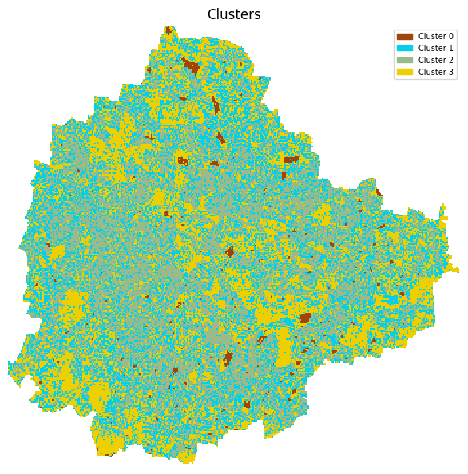
Identify the Water Cluster
We compute the mean MNDWI for every cluster. Water bodies have distinctively high MNDWI values (typically > 0), so the cluster with the highest mean MNDWI is the water cluster.
mndwi = stacked['mndwi']
clustered = stacked['clustered']
# Group MNDWI by cluster label and compute mean per cluster
cluster_mndwi_mean = mndwi.groupby(clustered).mean()water_cluster = int(cluster_mndwi_mean.idxmax())
print('Mean MNDWI per cluster:')
for label, value in zip(cluster_mndwi_mean.clustered.values, cluster_mndwi_mean.values):
marker = ' <-- water' if label == water_cluster else ''
print(f' Cluster {int(label)}: {float(value):+.4f}{marker}')
print(f'\nWater cluster: {water_cluster}')Select all pixels belonging to the water cluster.
Visualize Results
Plot the RGB composite, the full cluster map, and the extracted water mask side by side.
# Random distinct colors for each cluster
rng_colors = np.random.default_rng(0)
cluster_colors = rng_colors.random((n_clusters, 3))
cmap_clusters = mcolors.ListedColormap(cluster_colors)
# Low-resolution previews
preview_rgb = composite[['red', 'green', 'blue']].to_array('band').rio.reproject(
composite.rio.crs, resolution=100)
preview_clusters = clustered.rio.reproject(clustered.rio.crs, resolution=100)
preview_water = water_mask.rio.reproject(water_mask.rio.crs, resolution=100)
fig, axes = plt.subplots(1, 3)
fig.set_size_inches(18, 6)
preview_rgb.sel(band=['red', 'green', 'blue']).plot.imshow(
ax=axes[0], vmin=0, vmax=0.3)
axes[0].set_title('RGB Composite')
preview_clusters.plot.imshow(
ax=axes[1],
cmap=cmap_clusters,
vmin=-0.5, vmax=n_clusters - 0.5,
add_colorbar=False)
# Add cluster number labels to legend
handles = [mpatches.Patch(color=cluster_colors[c],
label=f'Cluster {c}') for c in range(n_clusters)]
axes[1].legend(handles=handles, loc='upper right', fontsize=7)
axes[1].set_title('Clusters')
water_cmap = mcolors.ListedColormap(['white', 'blue'])
preview_water.plot.imshow(
ax=axes[2],
cmap=water_cmap,
vmin=0, vmax=1,
add_colorbar=False)
axes[2].set_title('Water Mask')
# Show AOI boundary
aoi_gdf_reprojected = aoi_gdf.to_crs(water_mask.rio.crs)
aoi_gdf_reprojected.boundary.plot(ax=axes[2], color='black', linewidth=1)
for ax in axes:
ax.set_axis_off()
ax.set_aspect('equal')
plt.tight_layout()
plt.show()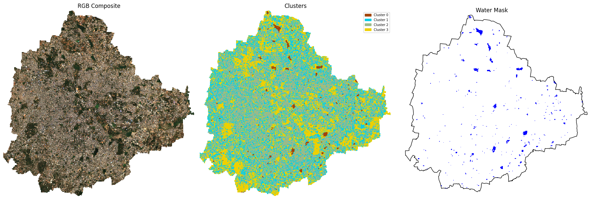
Save the Water Mask
Save the result as a paletted Cloud-Optimized GeoTIFF to the configured output folder.
def write_cog_with_colormap(data_array, output_path, color_table):
if data_array.dtype != np.dtype('uint8'):
raise TypeError(f'data_array must be uint8 for a color table to attach')
# Write to a temp file, add color table, then convert to COG
tmp_path = output_path + '.tmp.tif'
data_array.rio.to_raster(tmp_path)
with rasterio.open(tmp_path) as src:
profile = src.profile.copy()
profile['driver'] = 'COG'
data = src.read(1)
with rasterio.open(output_path, 'w', **profile) as dst:
dst.write(data, 1)
dst.write_colormap(1, color_table)
os.remove(tmp_path)output_file = f'water_mask_{n_clusters}.tif'
output_path = os.path.join(output_folder, output_file)
# Define the color table: 0 for transparent, 1 for blue (RGBA)
color_table = {0: (0, 0, 0, 0), 1: (0, 0, 255, 255)}
write_cog_with_colormap(water_mask, output_path, color_table)
print(f'Saved {output_path}')Exercise
Instead of manually specifying the number of clusters used, we can determine the optimal number clusters. There are variety of methods available for selecting clusters. See all available metrics at Clustering performance evaluation.
The cells below have an implementation of one of the metrics named Silhouette Score. It measures how similar an object is to its own cluster (cohesion) compared to other clusters (separation). The Silhouette score ranges from -1 to +1, where a high value indicates that the object is well matched to its own cluster and poorly matched to neighboring clusters. If most objects have a high value, then the clustering configuration is appropriate. The optimal number of clusters is typically the one that maximizes the average Silhouette score.
Select the optimal number of clusters and export the resulting water mask. Evaluate and compare the results.
from sklearn.metrics import silhouette_score
silhouette_scores = []
min_clusters = 2 # need a minimum of 2 clusters
max_clusters = 10
for i in range(min_clusters, max_clusters + 1):
kmeans = KMeans(n_clusters=i, random_state=42, n_init='auto')
cluster_labels = kmeans.fit_predict(sample)
score = silhouette_score(sample, cluster_labels)
silhouette_scores.append(score)
silhouette_scores4.3 Collecting Training Samples
For training a supervised classification model, we need to collect training samples with labels. We will be using visual interpretation of the Sentinel-2 composite image created in the previous section to mark locations and label them with appropriate landcover class.
| Class | Description | Value | Color |
|---|---|---|---|
| urban | All built surfaces - buildings, bridges, roads etc. | 0 | #cc6d8f |
| bare | All bare surfaces - exposed soil, sand, rock etc. | 1 | #ffc107 |
| water | All surface water - lake, ponds, rivers, ocean etc. | 2 | #1e88e5 |
| vegetation | All types of vegetation - trees, crops, grass etc. | 3 | #004d40 |
We will use the GeoLibre Web for training data collection.
- Open GeoLibre Web. Go to Add Data → Raster Layer.
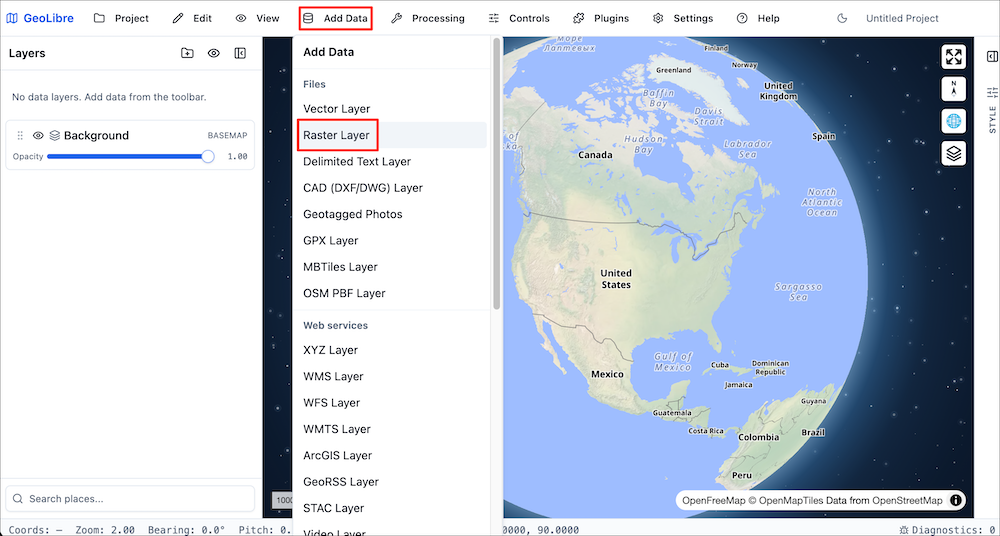
- Browse to the downloaded
multiband_composite.tifcreated in the previous section and select Open.
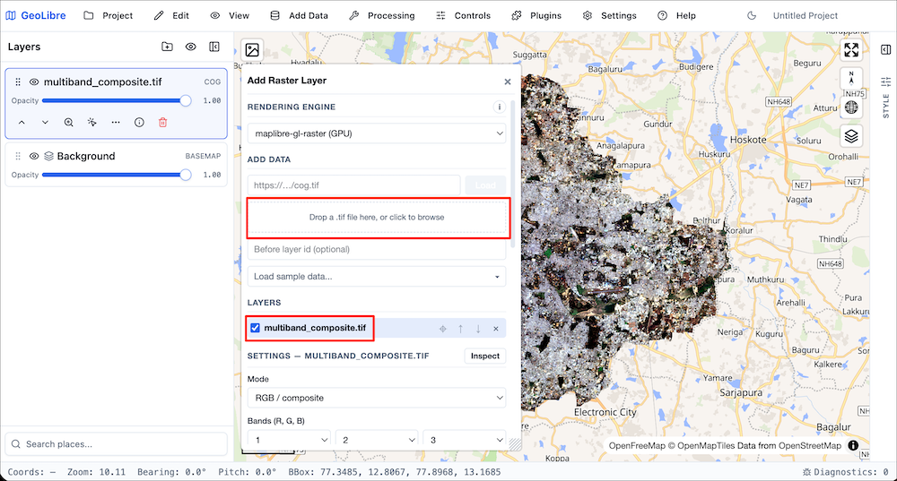
- This will be the reference image for the sample collection. Next go to Controls → Field Collection….
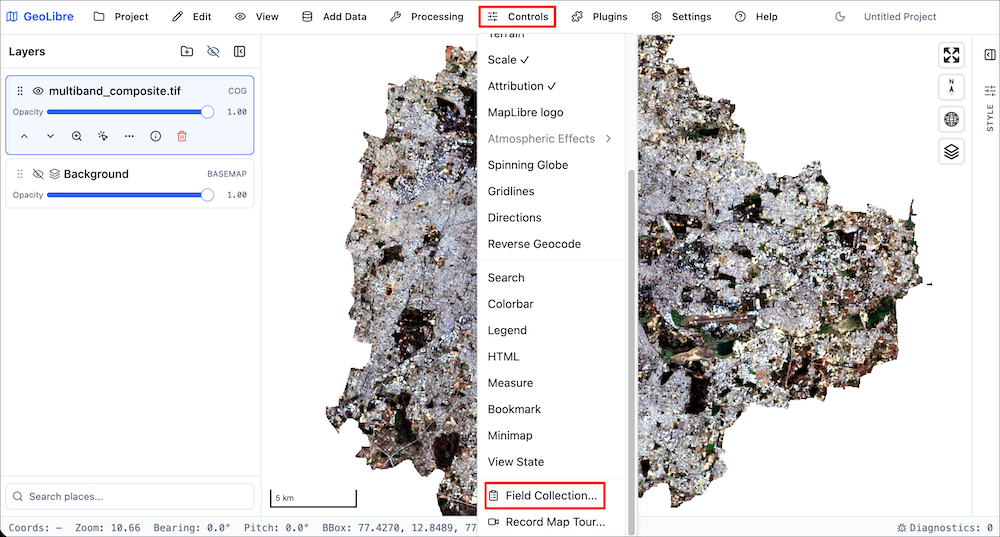
- Enter the Layer name as
gcps. Add a field namedlandcoverand selectNumbertype. Check theRequiredbox and click Create layer.
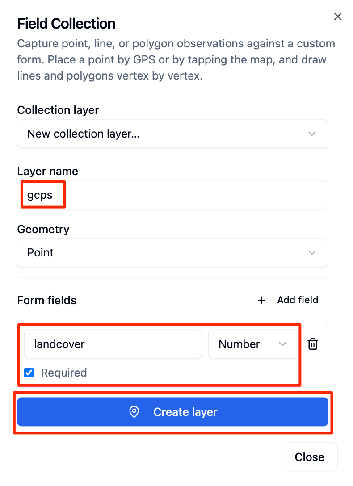
- Now the layer is ready. Click on the Pick on map button. Zoom to a location on the map and click on a point you want to add.
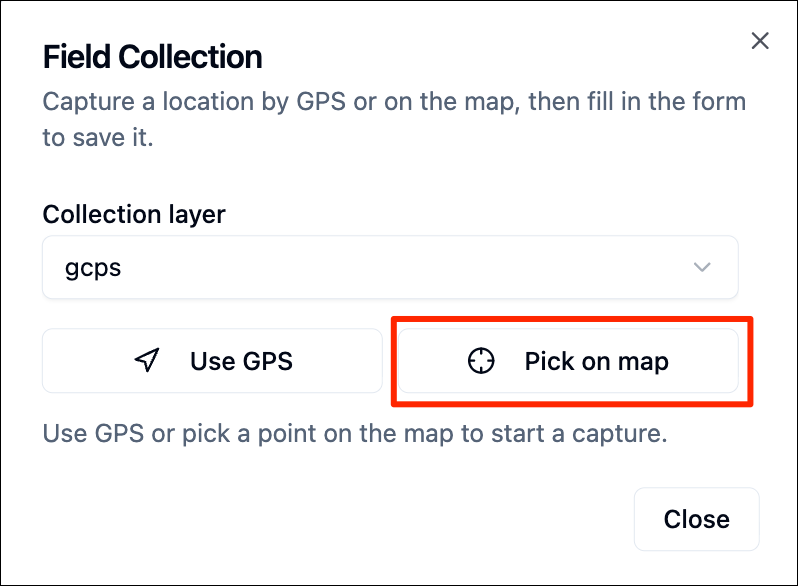
- Enter the landcover value for the location and click Save point.
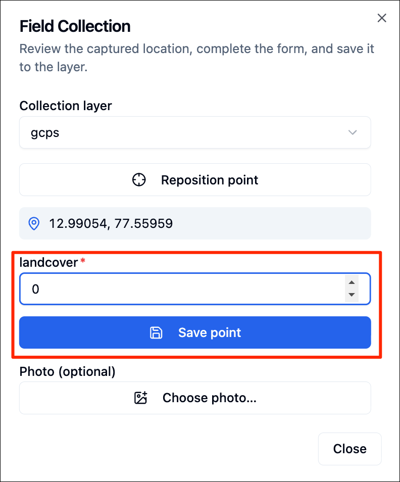
- Collect approximately 5-10 samples for each class - ensuring good spatial distribution across your region of interest. If you need to edit or delete a point, you can use the GeoEditor plugin. Go to Plugins → GeoEditor → Activate.
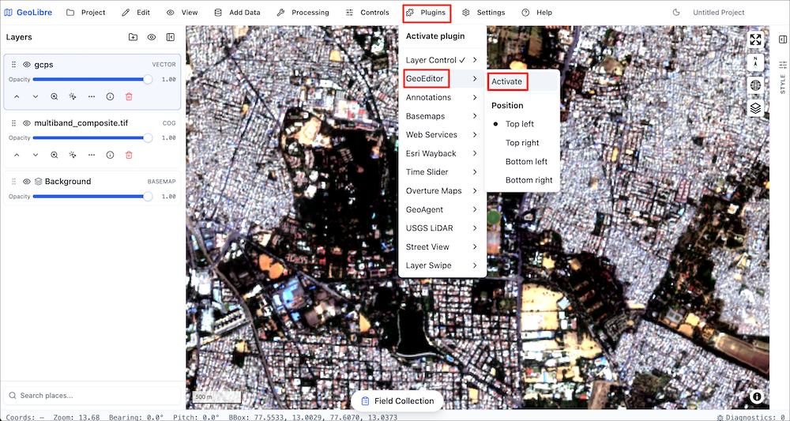
- Toggle the editing mode by clicking on the layer menu for the
gcpslayer and selecting Edit geometry.
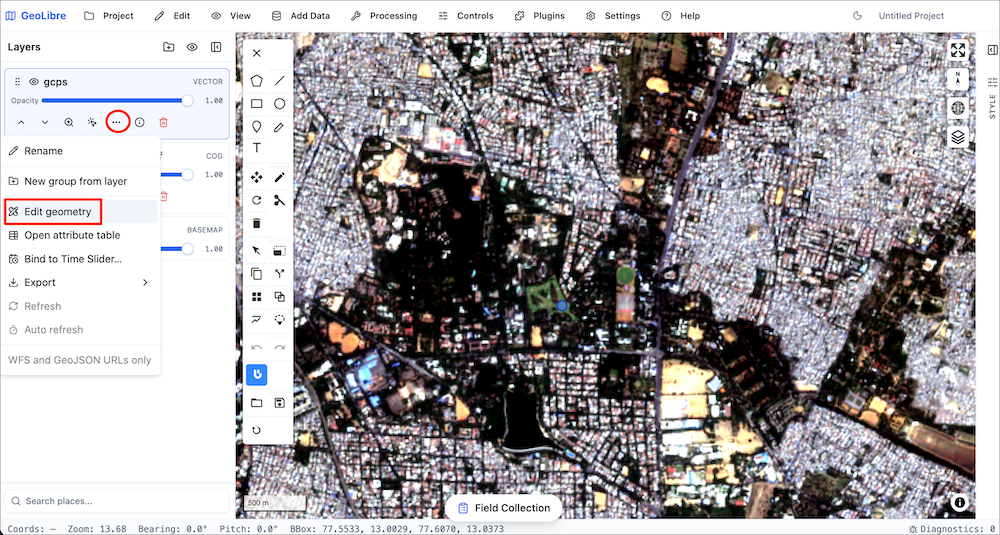
- Select the Delete button from the GeoEditor and click on the point you want to delete. Similarly, you may use the Drag button to move the point. Click Save once you are done editing.
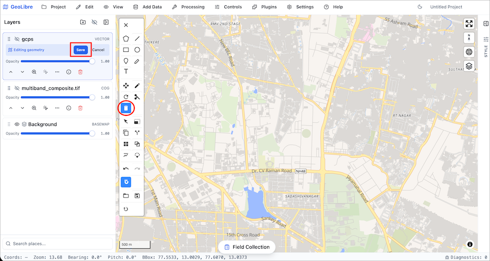
- Once you are done with sample collection, select on the layer menu
for the
gcpslayer and go to Export → GeoJSON. Save the resulting file asgcps.geojson.
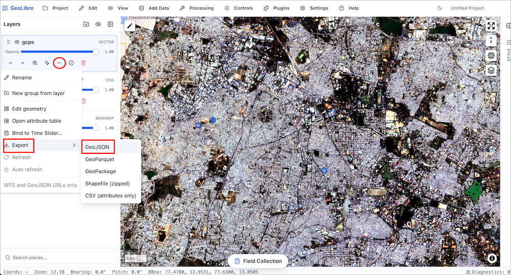
Upload this file to your Google Drive in the data folder so we can use it in our next notebook.
4.4 Supervised Classification

Overview
We implement a supervised classification workflow to classify the prepared composite into multiple landcover classes. We will train a Random Forest model using the training samples and predict the landcover class for all pixels in the composite.
Setup
Determine our runtime environment.
import os
if 'COLAB_RELEASE_TAG' in os.environ:
environment = 'colab'
if os.environ.get('VERTEX_PRODUCT') == 'COLAB_ENTERPRISE':
environment = 'colab_enterprise'
else:
environment = 'local'
# Set to True to use Google Drive for data storage in Colab
use_google_drive = True
# Google Drive is available only in 'colab' environment
if environment == 'colab' and use_google_drive:
from google.colab import drive
drive.mount('/content/drive')
drive_folder_root = 'MyDrive'
drive_data_folder = 'python-remote-sensing'
drive_folder_path = os.path.join('/content/drive', drive_folder_root, drive_data_folder)
data_folder = drive_folder_path
output_folder = drive_folder_path
else:
data_folder = 'data'
output_folder = 'output'
if not os.path.exists(data_folder):
os.mkdir(data_folder)
if not os.path.exists(output_folder):
os.mkdir(output_folder)
print(f'Environment: {environment}')
print(f'Data folder: {data_folder}')
print(f'Output folder: {output_folder}')If we are on Google Colab, install the required packages. Local runtimes are expected to have the packages already installed.
%%capture
if environment in ['colab', 'colab_enterprise']:
!pip install rioxarray dask['distributed'] scikit-learn \
xarray-spatialImport all required libraries. Make sure to import everything at the
beginning as certain Xarray extensions are activated on import and
registers certain accesors, like .rio and .odc
for Xarray objects.
import dask.array as da
import geopandas as gpd
import matplotlib.colors as mcolors
import matplotlib.patches as mpatches
import matplotlib.pyplot as plt
import numpy as np
import os
import rasterio
import rioxarray as rxr
import xarray as xr
from pyproj import Transformer
from sklearn.ensemble import RandomForestClassifierSetup a local Dask cluster. This distributes the computation across multiple workers on your computer.
If you are running this notebook in Colab, you will need to create and use a proxy URL to see the dashboard running on the local server.
Load Multiband Composite
Load the multiband composite saved by the previous notebook in this
section 01_preparing_composites.ipynb. The composite
contains 13 bands: 6 raw spectral bands (red, green, blue, nir, swir16,
swir22), 5 precomputed indices (ndvi, ndbi, bsi, mndwi, ndwi) and 2
bands derived from a DEM (elevation, slope).
multiband_composite_path = os.path.join(data_folder, 'multiband_composite.tif')
if not os.path.exists(multiband_composite_path):
print(f'Composite file not found at {multiband_composite_path}.',
'Using default composite.')
multiband_composite_path = (
'https://storage.googleapis.com/spatialthoughts-public-data'
'/python-remote-sensing/multiband_composite.tif')
band_names = ['red', 'green', 'blue', 'nir', 'swir16', 'swir22',
'ndvi', 'ndbi', 'bsi', 'mndwi', 'ndwi', 'elevation', 'slope']
composite_da = rxr.open_rasterio(
multiband_composite_path,
masked=True,
chunks={'x': 1024, 'y': 1024},
)
composite_da = composite_da.assign_coords(band=band_names)
composite_daLoad Area of Interest
Read the file containing the city boundary.
aoi_filepath = os.path.join(data_folder, 'aoi.geojson')
if not os.path.exists(aoi_filepath):
print(f'AOI file not found at {aoi_filepath}. Using default AOI.')
aoi_filepath = ('https://storage.googleapis.com/spatialthoughts-public-data'
'/python-remote-sensing/aoi.geojson')
aoi_gdf = gpd.read_file(aoi_filepath)
geometry = aoi_gdf.geometry.union_all()
geometryLoad Training Data
The training data is a set of Ground Control Points (GCPs) — point features, each labeled with a land cover class. We load the GeoJSON file with GeoPandas.
gcp_filepath = os.path.join(data_folder, 'gcps.geojson')
if not os.path.exists(gcp_filepath):
print(f'GCP file not found at {gcp_filepath}. Using default GCPs.')
gcp_filepath = (
'https://storage.googleapis.com/spatialthoughts-public-data/'
'python-remote-sensing/gcps.geojson'
)
gcp_gdf = gpd.read_file(gcp_filepath)
gcp_gdf.head()Let’s check how many samples we have for each class.
class_colors = {
0: '#cc6d8f', # Urban
1: '#ffc107', # Bare
2: '#1e88e5', # Water
3: '#004d40', # Vegetation
}
class_names = {
0: 'Urban',
1: 'Bare',
2: 'Water',
3: 'Vegetation'
}fig, ax = plt.subplots(1, 1)
fig.set_size_inches(7,7)
aoi_gdf.plot(
ax=ax,
facecolor='none',
edgecolor='#969696')
# Plot the GCPs
for class_label, group in gcp_gdf.groupby('landcover'):
group.plot(
ax=ax,
color=class_colors.get(class_label, 'red'),
markersize=10,
label=class_names.get(class_label, f'Unknown Class {class_label}')
)
ax.legend(loc='upper right')
ax.set_title('Area of Interest with Training Samples')
ax.set_axis_off()
plt.show()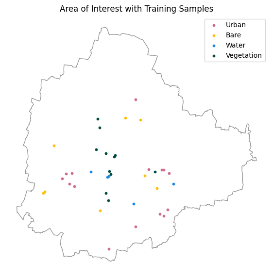
Normalize the Composite
Before we use the composit for building the classification model, we must normalize the values. Some bands such has elevation has very large values while others such as indices have small values. To ensure our model does not get biased, we must normalize the bands so they all have the values in the same range.
First we chunk the input so all the bands are in the same chunk.
Scale the values so they are between 0 and 1. The scaling is done independently for each band by computing the minimum and maximum values in each band.
Extract Features at Training Points
We reproject the GCP coordinates from WGS84 to the composite CRS, then use vectorized XArray selection to read the composite band values at each training point.
gcp_gdf_reprojected = gcp_gdf.to_crs(feature_da.rio.crs)
x_coords = gcp_gdf_reprojected.geometry.x.values
y_coords = gcp_gdf_reprojected.geometry.y.valuesExtract the pixel values.
gcp_features = feature_da.sel(
x=xr.DataArray(x_coords, dims='gcp_id'),
y=xr.DataArray(y_coords, dims='gcp_id'),
method='nearest'
)
gcp_featuresWe also need to have the landcover class values at each
extraced sample for training the model.
Train a Classifier
We train a Random Forest on the extracted band values. Random Forest is robust to correlated features (spectral bands are often correlated) and provides feature importances that show which bands contributed most to the classification.
Classify the Image
We apply the trained classifier to every pixel using dask.array.map_blocks.
The predict_block function receives one
(bands, h, w) tile, reshapes it to
(n_pixels, bands), skips NaN pixels, and returns a
(h, w) label array. Setting drop_axis=0 tells
Dask that the band axis is consumed by the function.
feature_dask = feature_da.data # (bands, y, x)
def predict_block(block, model):
bands, h, w = block.shape
pixels = block.reshape(bands, -1).T.astype(np.float64) # (n_pixels, bands)
valid = ~np.isnan(pixels).any(axis=1)
result = np.full(h * w, np.nan)
if valid.any():
result[valid] = model.predict(pixels[valid]).astype(float)
return result.reshape(h, w)
predicted_2d = da.map_blocks(
predict_block,
feature_dask,
model=model,
dtype=np.float64,
drop_axis=0,
)
classified = xr.DataArray(
predicted_2d,
coords={'y': feature_da.y, 'x': feature_da.x},
dims=['y', 'x'],
name='landcover'
).rio.write_crs(feature_da.rio.crs)
classifiedVisualize the Classification
We build a discrete colormap from the class color dictionary and plot a downsampled preview.
sorted_labels = sorted(class_colors.keys())
cmap = mcolors.ListedColormap([class_colors[c] for c in sorted_labels])
cmap.set_bad(alpha=0)
norm = mcolors.BoundaryNorm(
[i - 0.5 for i in range(len(sorted_labels) + 1)], cmap.N)
preview = classified.rio.reproject(classified.rio.crs, resolution=100)
fig, ax = plt.subplots(1, 1)
fig.set_size_inches(7, 7)
preview.plot.imshow(ax=ax, cmap=cmap, norm=norm, add_colorbar=False)
ax.legend(
handles=[mpatches.Patch(
color=class_colors[c],
label=class_names[c]) for c in sorted_labels],
loc='upper right'
)
ax.set_title(f'Classified Image')
ax.set_axis_off()
ax.set_aspect('equal')
plt.show()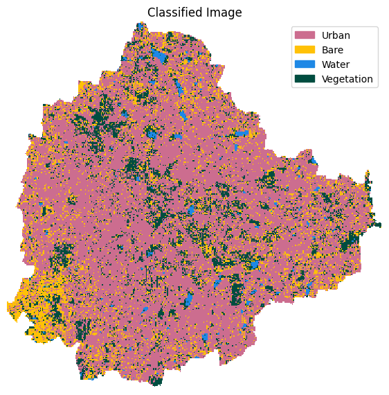
Save Classified Image
Save the result as a Cloud-Optimized GeoTIFF to the configured output folder.
def write_cog_with_colormap(data_array, output_path, color_table):
if data_array.dtype != np.dtype('uint8'):
raise TypeError(f'data_array must be uint8 for a color table to attach')
# Write to a temp file, add color table, then convert to COG
tmp_path = output_path + '.tmp.tif'
data_array.rio.to_raster(tmp_path)
with rasterio.open(tmp_path) as src:
profile = src.profile.copy()
profile['driver'] = 'COG'
data = src.read(1)
with rasterio.open(output_path, 'w', **profile) as dst:
dst.write(data, 1)
dst.write_colormap(1, color_table)
os.remove(tmp_path)color_table = {
label: tuple(int(c * 255) for c in mcolors.to_rgb(hex_color))
for label, hex_color in class_colors.items()
}
# Set no-data
classified = classified.fillna(255).astype(np.uint8)\
.rio.write_nodata(255)
output_path = os.path.join(output_folder, 'classification.tif')
write_cog_with_colormap(classified, output_path, color_table)
print(f'Saved {output_path}')Exercise
Pixel-based classifications result in a lot of salt-and-pepper noise.
You can apply a spatial filters to clean up the output. We will use a
Focal Majority filter that passes a moving-window across the
image and replaces the center pixel with the most frequently occuring
value in that neighborhood. The code below implements the majority
filter using the xrspatial.focal.apply()
function.
Run the code and to create the classified_smoothed image
as a paletted COG. Compare the result with the raw classification.
Adjust the kernel size to see its impact on the output.
from xrspatial import convolution
from xrspatial.focal import apply
from xrspatial.utils import ngjit
# Creates a standard 3x3 square moving window
kernel = convolution.custom_kernel(np.ones((3, 3)))
# Xarray-spatial does not have a built-in mode function
# Define a custom 'Mode' function to select majority class
@ngjit
def custom_mode(kernel_data):
# Flatten the moving window array
flat = kernel_data.ravel()
# Track the majority class manually (Numba-safe approach)
counts = {}
max_count = -1
mode_val = flat[0]
for val in flat:
if np.isnan(val):
continue # Ignore missing data/boundaries
# Count occurrences of each class
if val in counts:
counts[val] += 1
else:
counts[val] = 1
# Track the highest count
if counts[val] > max_count:
max_count = counts[val]
mode_val = val
return mode_val
classified_smoothed = apply(classified, kernel, func=custom_mode)
# Set no-data
classified_smoothed = classified_smoothed.fillna(255).astype(np.uint8)\
.rio.write_nodata(255)
output_path = os.path.join(output_folder, 'classification_smoothed.tif')
write_cog_with_colormap(classified_smoothed, output_path, color_table)
print(f'Saved {output_path}')4.5 Supervised Classification with Embeddings

Overview
Embeddings are a way to compress large amounts of information into a
smaller set of features that represent meaningful semantics. Instead of
raw pixel values, each location is represented by a dense vector that
captures the semantic content of the landscape. AlphaEarth Foundations (AEF)
Embeddings is an openly available global dataset of satellite
embeddings derived from multiple earth observation datasets, accessible
via Source Cooperative. The aef-loader
package provides a convenient Python interface to query and stream these
embeddings without downloading the entire dataset.
Embeddings can be used as input features to the classification model and results in higher accuracy outputs We will perform supervised land cover classification of AEF Embeddings using a Random Forest classifier and generate a classified image for the chosen region of interest.
Setup
Determine our runtime environment.
import os
if 'COLAB_RELEASE_TAG' in os.environ:
environment = 'colab'
if os.environ.get('VERTEX_PRODUCT') == 'COLAB_ENTERPRISE':
environment = 'colab_enterprise'
else:
environment = 'local'
# Set to True to use Google Drive for data storage in Colab
use_google_drive = True
# Google Drive is available only in 'colab' environment
if environment == 'colab' and use_google_drive:
from google.colab import drive
drive.mount('/content/drive')
drive_folder_root = 'MyDrive'
drive_data_folder = 'python-remote-sensing'
drive_folder_path = os.path.join('/content/drive', drive_folder_root, drive_data_folder)
data_folder = drive_folder_path
output_folder = drive_folder_path
else:
data_folder = 'data'
output_folder = 'output'
if not os.path.exists(data_folder):
os.mkdir(data_folder)
if not os.path.exists(output_folder):
os.mkdir(output_folder)
print(f'Environment: {environment}')
print(f'Data folder: {data_folder}')
print(f'Output folder: {output_folder}')If we are on Google Colab, install the required packages. Local runtimes are expected to have the packages already installed.
if environment in ['colab', 'colab_enterprise']:
!pip install rioxarray scikit-learn aef-loader dask[distributed]
# Due to version conflict, you maybe prompted to
# restart the runtime after the installation
# After restarting proceed to run all the cells from the top againImport all required libraries. Make sure to import everything at the
beginning as certain Xarray extensions are activated on import and
registers certain accesors, like .rio and .odc
for Xarray objects.
import asyncio
import dask.array as da
import geopandas as gpd
import matplotlib.colors as mcolors
import matplotlib.patches as mpatches
import matplotlib.pyplot as plt
import numpy as np
import os
import pandas as pd
import pyproj
import rasterio
import rioxarray as rxr
import xarray as xr
from aef_loader import AEFIndex, VirtualTiffReader, DataSource
from aef_loader.utils import dequantize_aef, reproject_datatree
from odc.geo.geobox import GeoBox
from pyproj import Transformer
from sklearn.neighbors import KNeighborsClassifier
from sklearn.metrics import accuracy_score, classification_report, confusion_matrix
from sklearn.model_selection import train_test_splitSetup a local Dask cluster. This distributes the computation across multiple workers on your computer.
If you are running this notebook in Colab, you will need to create and use a proxy URL to see the dashboard running on the local server.
Load Area of Interest
Read the file containing the city boundary.
aoi_filepath = os.path.join(data_folder, 'aoi.geojson')
if not os.path.exists(aoi_filepath):
print(f'AOI file not found at {aoi_filepath}. Using default AOI.')
aoi_filepath = ('https://storage.googleapis.com/spatialthoughts-public-data'
'/python-remote-sensing/aoi.geojson')
aoi_gdf = gpd.read_file(aoi_filepath)
geometry = aoi_gdf.geometry.union_all()
geometryLoad Training Data
The training data is a set of Ground Control Points (GCPs) — point features, each labeled with a land cover class. We load the GeoJSON file with GeoPandas.
gcp_filepath = os.path.join(data_folder, 'gcps.geojson')
if not os.path.exists(gcp_filepath):
print(f'GCP file not found at {gcp_filepath}. Using default GCPs.')
gcp_filepath = (
'https://storage.googleapis.com/spatialthoughts-public-data/'
'python-remote-sensing/gcps.geojson'
)
gcp_gdf = gpd.read_file(gcp_filepath)
gcp_gdf.head()Let’s check how many samples we have for each class.
class_colors = {
0: '#cc6d8f', # Urban
1: '#ffc107', # Bare
2: '#1e88e5', # Water
3: '#004d40', # Vegetation
}
class_names = {
0: 'Urban',
1: 'Bare',
2: 'Water',
3: 'Vegetation'
}fig, ax = plt.subplots(1, 1)
fig.set_size_inches(7,7)
aoi_gdf.plot(
ax=ax,
facecolor='none',
edgecolor='#969696')
# Plot the GCPs
for class_label, group in gcp_gdf.groupby('landcover'):
group.plot(
ax=ax,
color=class_colors.get(class_label, 'red'),
markersize=10,
label=class_names.get(class_label, f'Unknown Class {class_label}')
)
ax.legend(loc='upper right')
ax.set_title('Area of Interest with Training Samples')
ax.set_axis_off()
plt.show()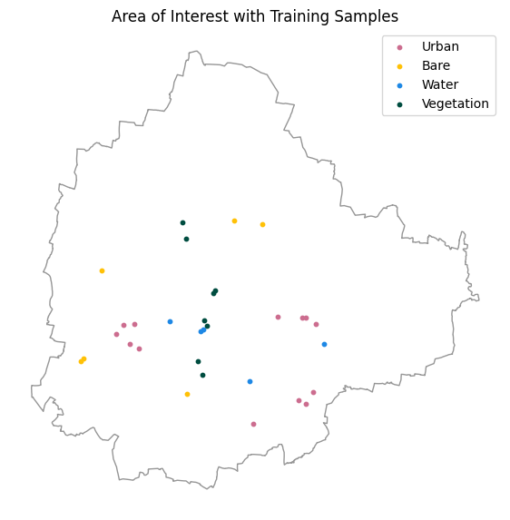
Load the Satellite Embeddings
Create a odc.geo.geobox.GeoBox object which is a
representation of the bounding box with a specific CRS and pixel
grid.
We now use the aef-loader
package to load all the matching tiles of AlphaEarth Foundations
Satellite Embeddings from Source Cooperative for the chosen year. This
Lazily load the tiles as a XArray DataArray that we can fetch and
process in chunks using Dask.
year = 2023
# Use the GeoParquet index
index = AEFIndex(source=DataSource.SOURCE_COOP)
await index.download()
# Query for tiles
tiles = await index.query(
bbox=bbox,
years=(year),
)
# Load tiles organized by UTM zone
async with VirtualTiffReader() as reader:
tree = await reader.open_tiles_by_zone(tiles)
# Depending on the region, there maybe multiple
# tiles spanning different UTM zones
# Reproject all the tiles to the target GeoBox
# with the chosen projection and pixel resolution
combined = reproject_datatree(tree, target_geobox=geobox)
embeddings = combined.embeddings
embeddingsThe embeddings are saved as 8-bit integer values to save space. We
use the dequantize_aef()
helper function provided by aef-loader to convert them to
the original 32-bit floating point values.
embeddings_year = embeddings.squeeze()
embeddings_float = dequantize_aef(embeddings_year)
embeddings_floatWe reproject the training points to match the composite CRS, then overlay them on an RGB preview of the composite. This lets us verify that the training points cover the expected land cover types.
Extract Embeddings at Training Samples
We reproject the GCP coordinates from WGS84 to the composite CRS, then use vectorized XArray selection to read the composite band values at each training point.
gcp_gdf_reprojected = gcp_gdf.to_crs(embeddings_da.rio.crs)
x_coords = gcp_gdf_reprojected.geometry.x.values
y_coords = gcp_gdf_reprojected.geometry.y.valuesExtract the pixel values.
gcp_embeddings = embeddings_da.sel(
x=xr.DataArray(x_coords, dims='gcp_id'),
y=xr.DataArray(y_coords, dims='gcp_id'),
method='nearest'
)
gcp_embeddingsWe also need to have the landcover class values at each
extraced sample for training the model.
Train a Classifier
We can now train a classifier with these extracted features. Scikit-learn has a wide-array of classifiers that we can choose from. For most remote sensing applications, Random Forest is the preferred classifier. However, a good choice for low-shot classification (classification using a very small number of examples, like our example), is k-Nearest Neighbors (kNN). In a kNN classification, labeled examples are used to “partition” or cluster the embedding space, assigning a label for each pixel based on the label(s) of its closest neighbor(s) in the embedding space. Embeddings lend themselves very well to such partitioning. Let’s train a kNN classifier with our training data
# Prepare the data for the classifier
X = gcp_embeddings.values.T # Transpose to have (n_samples, n_features)
y = gcp_embeddings['landcover'].values
# Initialize the KNeighborsClassifier
# Using n_neighbors=5 as a common starting point
classifier = KNeighborsClassifier(n_neighbors=5, weights='distance')
# Train the classifier
classifier.fit(X, y)Classify the Image
emb_dask = embeddings_da.chunk({'band': -1}).data # (bands, y, x)
def predict_block(block, model):
bands, h, w = block.shape
pixels = block.reshape(bands, -1).T.astype(np.float64) # (n_pixels, bands)
valid = ~np.isnan(pixels).any(axis=1)
result = np.full(h * w, np.nan)
if valid.any():
result[valid] = model.predict(pixels[valid]).astype(float)
return result.reshape(h, w)
predicted_2d = da.map_blocks(
predict_block,
emb_dask,
model=classifier,
dtype=np.float64,
drop_axis=0,
)
classified = xr.DataArray(
predicted_2d,
coords={'y': embeddings_float.y, 'x': embeddings_float.x},
dims=['y', 'x'],
name='landcover'
).rio.write_crs(embeddings_float.rio.crs)
classifiedVisualize the Classification
aoi_gdf_reprojected = aoi_gdf.to_crs(classified.rio.crs)
classified_clipped = classified.rio.clip(aoi_gdf_reprojected.geometry)sorted_labels = sorted(class_colors.keys())
cmap = mcolors.ListedColormap([class_colors[c] for c in sorted_labels])
cmap.set_bad(alpha=0)
norm = mcolors.BoundaryNorm(
[i - 0.5 for i in range(len(sorted_labels) + 1)], cmap.N)
preview = classified_clipped.rio.reproject(
classified_clipped.rio.crs, resolution=100)
fig, ax = plt.subplots(1, 1)
fig.set_size_inches(7, 7)
preview.plot.imshow(ax=ax, cmap=cmap, norm=norm, add_colorbar=False)
ax.legend(
handles=[mpatches.Patch(
color=class_colors[c],
label=class_names[c]) for c in sorted_labels],
loc='upper right'
)
ax.set_title(f'Classified Image (Embeddings)')
ax.set_axis_off()
ax.set_aspect('equal')
plt.show()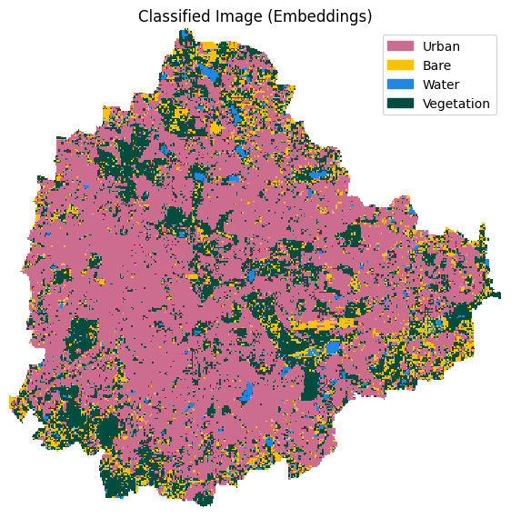
Save Classified Image
We finally save the results as a local Cloud-Optimized GeoTIFF file.
def write_cog_with_colormap(data_array, output_path, color_table):
if data_array.dtype != np.dtype('uint8'):
raise TypeError(f'data_array must be uint8 for a color table to attach')
# Write to a temp file, add color table, then convert to COG
tmp_path = output_path + '.tmp.tif'
data_array.rio.to_raster(tmp_path)
with rasterio.open(tmp_path) as src:
profile = src.profile.copy()
profile['driver'] = 'COG'
data = src.read(1)
with rasterio.open(output_path, 'w', **profile) as dst:
dst.write(data, 1)
dst.write_colormap(1, color_table)
os.remove(tmp_path)# Build rasterio color table from the class_colors hex dict
color_table = {
label: tuple(int(c * 255) for c in mcolors.to_rgb(hex_color))
for label, hex_color in class_colors.items()
}
# Set no-data
classified_clipped = classified_clipped.fillna(255).astype(np.uint8)\
.rio.write_nodata(255)
output_file = f'classification_embeddings.tif'
output_path = os.path.join(output_folder, output_file)
write_cog_with_colormap(classified_clipped, output_path, color_table)
print(f'Wrote {output_path}')Exercise
If your training samples are noisy, the Random Forest classifier may
perform better than the KNeighborsClassifier used here. Change the model
to use the RandomForestClassifier
and compare the output.
Module 5: Computation Environments

Overview
This notebook demonstrates how the same processing can be done in different computing environments. We will run the same notebook on different computing platforms.
- Run on your own local machine.
- Run on a Google Cloud Runtime with Google Colab
- Run on a Cloud VM with Coiled
Overview of the Task
We will query a STAC catalog for Sentinel-2 imagery, apply pixel-level cloud masking using the Scene Classification Layer (SCL) band, and create a cloud-free median composite image using distributed processing.
Setup
Determine our runtime environment.
import os
if 'COLAB_RELEASE_TAG' in os.environ:
environment = 'colab'
if os.environ.get('VERTEX_PRODUCT') == 'COLAB_ENTERPRISE':
environment = 'colab_enterprise'
else:
environment = 'local'
# Set to True to use Google Drive for data storage in Colab
use_google_drive = True
# Google Drive is available only in 'colab' environment
if environment == 'colab' and use_google_drive:
from google.colab import drive
drive.mount('/content/drive')
drive_folder_root = 'MyDrive'
drive_data_folder = 'python-remote-sensing'
drive_folder_path = os.path.join('/content/drive', drive_folder_root, drive_data_folder)
data_folder = drive_folder_path
output_folder = drive_folder_path
else:
data_folder = 'data'
output_folder = 'output'
if not os.path.exists(data_folder):
os.mkdir(data_folder)
if not os.path.exists(output_folder):
os.mkdir(output_folder)
print(f'Environment: {environment}')
print(f'Data folder: {data_folder}')
print(f'Output folder: {output_folder}')If we are on Google Colab, install the required packages. Local runtimes are expected to have the packages already installed.
%%capture
if environment in ['colab', 'colab_enterprise']:
!pip install pystac-client odc-stac rioxarray dask['distributed'] botocore \
jupyter-server-proxy pyngrokImport all required libraries. Make sure to import everything at the
beginning as certain XArray extensions are activated on import and
register certain accessors, like .rio and .odc
for XArray objects.
import geopandas as gpd
import matplotlib.pyplot as plt
import numpy as np
import os
import pystac_client
import rioxarray as rxr
import xarray as xr
from dask.distributed import Client
from odc.stac import configure_s3_access, loadSetup a local Dask cluster. This distributes the computation across multiple workers on your computer.
If you are running this notebook in Colab, you will need to create and use a proxy URL to see the dashboard running on the local server.
Colab Enterprise restricts the reverse proxy. So we need to use a service like ngrok to create a secure tunnel from the localhost and get a public URL. You will need to sign-up for a free account and get an auth token.
You can skip this step without affecting rest of the notebook. You will not be able to see the Dask dashboad.
if environment == 'colab':
from google.colab import output
port_to_expose = 8787 # This is the default port for Dask dashboard
print(output.eval_js(f'google.colab.kernel.proxyPort({port_to_expose})'))
if environment == 'colab_enterprise':
YOUR_AUTH_TOKEN = '' # get from ngrok.com
if YOUR_AUTH_TOKEN:
from pyngrok import ngrok
from pyngrok import conf
ngrok.set_auth_token(YOUR_AUTH_TOKEN)
# Expose the Dask dashboard port
port_to_expose = 8787 # This is the default port for Dask dashboard
print(ngrok.connect(port_to_expose))
else:
print('Please set your ngrok auth token to expose the Dask dashboard in Colab Enterprise.')Load Area of Interest
Read the file containing the city boundary.
aoi_filepath = os.path.join(data_folder, 'aoi.geojson')
if not os.path.exists(aoi_filepath):
print(f'AOI file not found at {aoi_filepath}. Using default AOI.')
aoi_filepath = ('https://storage.googleapis.com/spatialthoughts-public-data'
'/python-remote-sensing/aoi.geojson')Read the GeoJSON.
Extract the geometry.
Search and Load Sentinel-2 Scenes
Let’s use the Element84 search endpoint to look for items from the
sentinel-2-c1-l2a collection on AWS. We search for imagery
collected within the date range and intersecting the AOI geometry.
We specify an additional filter using eo:cloud_cover to
select only scenes with less than 30% overall cloud cover. This
pre-filters at the scene level, but we will also apply a pixel-level
cloud mask using the SCL band.
catalog = pystac_client.Client.open(
'https://earth-search.aws.element84.com/v1')
# Configure settings for reading from Earth Search STAC
configure_s3_access(
aws_unsigned=True,
)
# Search for images for the year
year = 2024
time_range = f'{year}'
# Optionally, we can specify a range of months
# start_month = 4
# end_month = 6
# time_range = f'{year}-{start_month:02d}/{year}-{end_month:02d}'
filters = {
'eo:cloud_cover': {'lt': 30},
# Uncomment below if your AOI spans multiple MGRS tiles and
# you want to limit results to a single grid square
# 'mgrs:grid_square': {'eq': 'GQ'},
}
search = catalog.search(
collections=['sentinel-2-c1-l2a'],
intersects=geometry,
datetime=time_range,
query=filters,
)
items = search.item_collection()
len(items)Visualize the resulting image footprints. When we process the data for our AOI, we will only stream the required pixels instead of downloading entire scenes.
items_gdf = gpd.GeoDataFrame.from_features(items.to_dict(), crs='EPSG:4326')
fig, ax = plt.subplots(1, 1)
fig.set_size_inches(5, 5)
items_gdf.plot(
ax=ax,
facecolor='none',
edgecolor='black',
alpha=0.5)
aoi_gdf.plot(
ax=ax,
facecolor='blue',
alpha=0.5
)
ax.set_axis_off()
ax.set_title('STAC Query Results')
plt.show()Load the matching images as a XArray Dataset. We include the
scl (Scene Classification Layer) band which we will use to
apply the pixel-level cloud mask.
Preprocess Imagery
The Sentinel-2 scenes come with a NoData value of 0. We set the correct NoData value before further processing.
Apply scale and offset to convert raw digital numbers to surface
reflectance values. The scl band is a classification layer
and must not have scale/offset applied.
# Apply scale/offset to spectral bands only (exclude scl)
scale = 0.0001
offset = -0.1
data_bands = [band for band in ds.data_vars if band != 'scl']
for band in data_bands:
ds[band] = ds[band] * scale + offsetApply the pixel-level cloud mask using the SCL band. The SCL classes we mask are: 3 (cloud shadow), 8 (cloud medium probability), 9 (cloud high probability), and 10 (cirrus).
Create a Cloud-Free Median Composite
A very powerful feature of XArray is the ability to easily aggregate
data across dimensions. We apply the .median() aggregation
across the time dimension. Since cloud-masked pixels are
NaN, the median is computed only from valid (cloud-free)
pixels.
Select the RGB bands for visualization and export.
So far all the operations have created a computation graph. To run
this computation using the local Dask cluster, we must call
.compute().
Visualize the Results
The composite is created from all the pixels within the bounding box
of the geometry. We can use rioxarray to clip the image to
the AOI boundary to remove pixels outside the polygon.
To visualize our Dataset, we first convert it to a DataArray using
the to_array() method. All the variables will be converted
to a new dimension. Since our variables are image bands, we give the new
dimension the name band.
rgb_composite_da = rgb_composite.to_array('band')
image_crs = rgb_composite_da.rio.crs
aoi_gdf_reprojected = aoi_gdf.to_crs(image_crs)
rgb_composite_clipped = rgb_composite_da.rio.clip(aoi_gdf_reprojected.geometry)
rgb_composite_clippedFor visualizing, we resample to a lower resolution preview.
Save the Output
We use the rio accessor to save the results as a
Cloud-Optimized GeoTIFF. The raw composite preserves the pixel
reflectance values and is suitable for downstream scientific
analysis.
output_file = f'cloudfree_composite_{time_range}.tif'
output_path = os.path.join(output_folder, output_file)
rgb_composite_clipped.rio.to_raster(output_path, driver='COG')
print(f'Wrote {output_path}')Close the Dask client. This prevents multiple clients being instantiated when running different notebooks on the same machine.
5.1 Running Computation on Your Hardware
Please following our Installation and Setting up the Environment instructions to install and configure your system. Once you have a working conda environment, you can use it to run the notebook.
Run Your Notebook.
Open the notebook in Google Colab. Go to File → Download → Download .ipynb and download the notebook to your computer.
(Windows users), search for Anaconda Powershell Prompt and launch it. (Mac/Linux users): Launch a Terminal window. Run the following commands to activate your conda environment.
- Launch Jupyter Lab.
- Locate the notebook in Jupyter Lab and click Run.
5.2 Using Google Cloud Runtime
Google Colab offers a seamless way to setup a VM in Google Cloud with a Colab Runtime and use it for executing your Colab Notebooks. This section requires a Google Cloud account. Follow our Google Cloud Sign-up Guide to setup your cloud project.
Connect to a Cloud Runtime
- In Google Colab, click the Additional connection options dropdown next to the Connect button and select Connect to Google Cloud Runtime.

- Select a project in the Google Cloud project. If you do not have any VMs available, click Manage runtimes.

- This will open the Colab Enterprise section in Google Cloud Console. You will be prompted to enable the APIs required for this service. Click on Enable.

- Once the APIs are enabled, click on Runtime templates.

- In the Runtime templates tab, click on + New Template.

- Enter a name for your template and click Configure compute.

- Select the type of machine you need. Higher number of CPU cores will allow more parallel computing and faster processing. Once selected, click Create.

- Once the template is created, click on the overflow menu : and select Create runtime.

- Confirm the details and click Create.

- It will take a few minutes for the new runtime to be created. Wait till the Status shows Healthy.

- Switch back to Google Colab and click the Refresh button. Your newly created VM should be listed. Select it and click Connect.

Run Your Notebook
Run your notebook as usual. Your analysis will run on the cloud VM.
Delete the Runtime
If you do not delete the VM after you are done with the analysis, you will incur recurring charges for the compute and storage. It is advisable to delete any Runtimes that you are not using actively.
Once you are done with the analysis, go back to the Colab Enterprise section and select Runtimes. Click the : menu for any Runtime that are running and select Delete.

5.3 Scaling Analysis in Cloud with Coiled
Coiled is a platform that allows you to easily setup cloud infrastructure for distributed processing. It provides a Python-package and a Notebook service that makes it very easy to scale your Xarray + Dask workflows to process large volumes of data. In this section, you will learn how to setup coiled and run a notebook in a cloud-hosted machine for creating a median cloud-free annual composite from Sentinel-2 imagery.
Installation and Setting up the Environment
You need to install the coiled along with other required
packages in your local Python environment and configure your account.
Visit the Coiled
Documentation for detailed setup instructions.
Create an Account
Sign-up for a free coiled account.
Login to Coiled
We will use our existing conda environment to run the coiled notebook. Activate the environment and login to coiled.
conda activate python_remote_sensing
coiled loginConnect your Cloud Account
Next, you will need to configure it with your own cloud account. All popular cloud services (GCP, AWS, Azure) are supported. Below is the command required to configure it with your GCP account.
coiled setup gcpOnce setup, you can visit the Coiled Dashboard to verify the setup.
Setup Mutagen (Optional)
A great feature of the coiled notebook service is the ability to sync your local Python environment and files with the cloud machine. This requires installing the Mutagen utility. On MacOS and Linux, this is straightforward using Homebrew.
brew install mutagen-io/mutagen/mutagenStart a Notebook on a Cloud Machine
- Change your local directory to a folder where you have your code.
cd Desktop/coiled- Start a notebook on a cloud machine. The default machine you get on
GCP is the
e2-standard-4VM with 4 vCPU and 16 GB memory. This is a decent and cheap option for small to medium sized workloads. You can always get bigger machine with more memory of more vCPUs. See how to specify VM Size and Type.
coiled notebook start --sync
Run Your Notebook
- Download the example notebook to your machine. Visit coiled_s2_composite.ipynb and click the Download raw file button. Copy the file to your preferred directory where you started the coiled notebook. The file will appear in the Jupyter Lab instance that was launched by Coiled. Double-click to open the notebook.

- Run the notebook to start the data processing. The notebook is running on a cloud machine and you can see the progress on the Dask Dashboard.

- Once the processing finishes, the resulting composite
rgb_composite_2024.tifwill be available in theoutputfolder which will be automatically synced to your machine.

- The resulting Sentinel-2 RGB composite is now available on your machine and can be viewed using QGIS.

- Once you are done with processing, remember to stop the notebook server. This will stop the cloud instance.
If you forget to stop the server, you will continue getting charged for the running intance in the cloud. You can always visit the Coiled Dashboard to verify that there are no running clusters.

Supplement
Using Planetary Computer Data Catalog

This notebook shows how to access Sentinel-2 Level-2A data by querying Microsoft’s Planetary Computer Data Catalog. This catalog is served via STAC API and with the datasets hosted on Azure Blob Storage. As we are using open-standards for data-access, the process is largely similar to accessing the data from other STAC API endpoints, with a few minor differences based on how different providers have chosen to pre-process the data.
Setup and Data Download
The following blocks of code will install the required packages and download the datasets to your Colab environment.
%%capture
if 'google.colab' in str(get_ipython()):
!pip install pystac-client odc-stac rioxarray dask jupyter-server-proxy \
planetary_computerimport matplotlib.dates as mdates
import matplotlib.pyplot as plt
import os
import planetary_computer as pc
import pyproj
import pystac_client
import rioxarray as rxr
import xarray as xr
from odc import stacIf you are running this notebook in Colab, you will need to create and use a proxy URL to see the dashboard running on the local server.
Get Satellite Imagery using STAC API
We define a location and time of interest to get some satellite imagery.
# Define a small bounding box around the chosen point
km2deg = 1.0 / 111
x, y = (longitude, latitude)
r = 1 * km2deg # radius in degrees
bbox = (x - r, y - r, x + r, y + r)Let’s use Planetary Computer STAC API search endpoint to look for items from the sentinel-2-l2a collection on Azure Blob Storage.
catalog = pystac_client.Client.open(
'https://planetarycomputer.microsoft.com/api/stac/v1')
search = catalog.search(
collections=['sentinel-2-l2a'],
bbox=bbox,
datetime=f'{year}',
query={'eo:cloud_cover': {'lt': 30}},
)
items = search.item_collection()
itemsLoad the matching images as a XArray Dataset. Accessing data from
Planetary Computer is free but requires getting a Shared Access
Signature (SAS) token and sign the URLs. The
planetary_computer Python package provides a simple
mechanism for signing the URLs using sign() function.
Processing Data
We have a data cube of multiple scenes collected through the year. As XArray supports vectorized operations, we can work with the entire DataSet the same way we would process a single scene.
The Sentinel-2 scenes come with NoData value of 0. So we set the correct NoData value before further processing.
Apply scale and offset to all spectral bands
# Apply scale/offset
scale = 0.0001
offset = -0.1
# Select spectral bands (all except 'scl')
data_bands = [band for band in ds.data_vars if band != 'SCL']
for band in data_bands:
ds[band] = ds[band] * scale + offsetApply the cloud mask
Calculate NDVI and add it as a data variable.
Extracting Time-Series
We have a dataset with cloud-masked NDVI values at each pixel of each scene. Remember that none of these values are computed yet. Dask has a graph of all the operations that would be required to calculate the results.
We can now query this results for values at our chosen location. Once
we run compute() - Dask will fetch the required tiles from
the source data and run the operations to give us the results.
Our location coordinates are in EPSG:4326 Lat/Lon. Convert it to the CRS of the dataset so we can query it.
crs = ds.rio.crs
transformer = pyproj.Transformer.from_crs('EPSG:4326', crs, always_xy=True)
x, y = transformer.transform(longitude, latitude)
x,yQuery NDVI values at the coordinates.
Run the calculation and load the results into memory.
Plot the time-series.
fig, ax = plt.subplots(1, 1)
fig.set_size_inches(15, 7)
time_series.plot.line(
ax=ax, x='time',
marker='o', color='#238b45',
linestyle='-', linewidth=1, markersize=4)
# Format the x-axis to display dates as YYYY-MM
ax.xaxis.set_major_formatter(mdates.DateFormatter('%Y-%m'))
ax.xaxis.set_major_locator(mdates.MonthLocator(interval=2))
ax.set_title('NDVI Time-Series')
plt.show()Interpolate and Smooth the time-series
We use XArray’s excellent time-series processing functionality to smooth the time-series and remove noise.
# As we are proceesing the time-series,
# it needs to be in a single chunk along the time dimension
time_series = time_series.chunk(dict(time=-1))First, we resample the time-series to have a value every 5-days and fill the missing values with linear interpolation. Then we apply a moving-window smoothing to remove noise.
time_series_resampled = time_series\
.resample(time='5d').mean(dim='time').chunk(dict(time=-1))
time_series_interpolated = time_series_resampled \
.interpolate_na('time', use_coordinate=False)
time_series_smoothed = time_series_interpolated \
.rolling(time=3, min_periods=1, center=True).mean()fig, ax = plt.subplots(1, 1)
fig.set_size_inches(15, 7)
time_series.plot.line(
ax=ax, x='time',
marker='^', color='#66c2a4',
linestyle='--', linewidth=1, markersize=2)
time_series_smoothed.plot.line(
ax=ax, x='time',
marker='o', color='#238b45',
linestyle='-', linewidth=1, markersize=4)
# Format the x-axis to display dates as YYYY-MM
ax.xaxis.set_major_formatter(mdates.DateFormatter('%Y-%m'))
ax.xaxis.set_major_locator(mdates.MonthLocator(interval=2))
ax.set_title('Original vs. Smoothed NDVI Time-Series')
plt.show()
Save the Time-Series.
Convert the extracted time-series to a Pandas DataFrame.
Save the DataFrame as a CSV file.
Downloading Sentinel-2 Cloud Free Mosaics

This notebook shows how to access, process and save a large subset of the Sentinel 2 Cloud Free Temporal Mosaics provided by Earth Genome. The workflow involves accessing the annual cloud-free composites, stacking and scaling the required bands, tiling the region and saving each tile as a Cloud Optimized GeoTIFF (COG) in a remote Google Cloud Storage (GCS) bucket.

Setup and Data Download
The following blocks of code will install the required packages and download the datasets to your Colab environment.
%%capture
if 'google.colab' in str(get_ipython()):
!pip install pystac-client odc-stac rioxarray dask['distributed'] \
jupyter-server-proxyimport dask
import duckdb
import geopandas as gpd
import matplotlib.pyplot as plt
import numpy as np
import os
import pandas as pd
import pystac_client
import rioxarray as rxr
import tempfile
import xarray as xr
from datetime import datetime
from odc import stac
from osgeo import gdal
from shapely.geometry import boxdata_folder = 'data'
output_folder = 'output'
if not os.path.exists(data_folder):
os.mkdir(data_folder)
if not os.path.exists(output_folder):
os.mkdir(output_folder)Setup a local Dask cluster. This distributes the computation across multiple workers on your computer.
If you are running this notebook in Colab, you will need to create and use a proxy URL to see the dashboard running on the local server.
Select a Region of Interest
We use the FieldMaps GeoParquet file to select a large state in India.
parquet_url = 'https://data.fieldmaps.io/edge-matched/open/intl/adm1_polygons.parquet'
con = duckdb.connect()
con.install_extension('spatial')
con.load_extension('spatial')country = 'IND'
adm1_name = 'Karnātaka'
query = f'''
SELECT adm1_name, adm1_id, ST_AsText(geometry) AS geometry
FROM read_parquet('{parquet_url}')
WHERE
adm0_src = '{country}' and
adm1_name = '{adm1_name}'
'''
admin1_df = con.sql(query).df()
admin1_gdf = gpd.GeoDataFrame(
admin1_df, geometry=gpd.GeoSeries.from_wkt(admin1_df.geometry), crs='EPSG:4326'
)Earth Genome STAC
Earth Genome provides ready-to-use annual and semi-annual Sentinel-2 mosaics created to L2A scenes. We can use the Earth Genome STAC API Catalog to query for the matching tiles for our year and region of interest.
We define a location and time of interest to get some satellite imagery.
Search the catalog for matching tiles for the selected year.
search = catalog.search(
collections=['sentinel2-temporal-mosaics'],
bbox=bbox,
datetime=f'{year}'
)
items = search.item_collection()
# The annual mosaics have a date range that goes from
# 1-Jan-{year} to 1-jan-{year+1}
# This matches items for 2 years in the above query
# We filter these using the start_datetime and end_datetime
# properties in the item metadata
# Create a start and end datetime strings
start_date = datetime(year, 1, 1).strftime('%Y-%m-%dT%H:%M:%SZ')
end_date = datetime(year + 1, 1, 1).strftime('%Y-%m-%dT%H:%M:%SZ')
items_filtered = [
item for item in items
if item.properties['start_datetime'] == start_date
and item.properties['end_datetime'] == end_date
]Load STAC Images to XArray
Load the matching images as a XArray Dataset.
ds = stac.load(
items_filtered,
bands=['B04', 'B03', 'B02'],
resolution=10,
crs='utm',
chunks={'x': 1024, 'y': 1024}, # Explicitly define chunk sizes
groupby='solar_day',
preserve_original_order=True
)
dsSince all the tiles are for the same year, we can remove the time dimension.
Each band of the scene is saved with integer pixel values (data type
uint16). This help save the storage cost as storing the
reflectance values as floating point numbers (data type
float64) requires more storage. We need to convert the raw
pixel values to reflectances by applying the scale values. The
scale 0.0001.
Convert to a DataArray.
Create a Grid
Instead of writing a single large file, we can tile the outputs into smaller tiles for ease of access.
We start by creating a grid and specifying the size of each tile in pixels.
Reproject the geometry to match the CRS of the DataArray.
left, bottom, right, top = scene_da.rio.bounds()
minx, miny, maxx, maxy = gdf_proj.total_bounds
res_x = (right - left) / scene_da.sizes['x']
res_y = (top - bottom) / scene_da.sizes['y']
TILE_SIZE_M = TILE_SIZE * res_x # e.g. 10000 * 10.0 = 100000m
xs = np.arange(minx, maxx, TILE_SIZE_M)
ys = np.arange(miny, maxy, TILE_SIZE_M)
tiles = [
box(x, y, x + TILE_SIZE_M, y + TILE_SIZE_M)
for y in sorted(ys, reverse=True)
for x in xs
]
grid = gpd.GeoDataFrame(geometry=tiles, crs=scene_da.rio.crs)
grid = grid[grid.intersects(gdf_proj.union_all())].reset_index(drop=True)
grid['tile_id'] = [
f'tile_{(i // len(ys)) + 1:02d}_{(i % len(ys)) + 1:02d}'
for i in grid.index
]
print(f'{len(grid)} tiles intersect geometry')Save the Tiles
We can save the tiles to a Google Cloud Storage (GCS) bucket. You may also just save them locally if you wish.
# Specify your project ID and Bucket name
project_id = 'python-363014'
bucket_name = 'spatialthoughts-public-data'
sub_folder = 'sentinel-2/cloud-free-mosaics'if 'google.colab' in str(get_ipython()):
from google.colab import auth
from google.cloud import storage
auth.authenticate_user()
client = storage.Client(project=project_id)
bucket = client.get_bucket(bucket_name)
print(f'Google Cloud Storage client initialized for project: {project_id}')
print(f'Bucket {bucket_name} selected.')We now fetch the data for each grid tile, clip it and save it as a COG.
geometry_crs = gdf_proj.geometry
gcs_tile_paths = []
for _, row in grid.iterrows():
tile_id = row['tile_id']
print(f'Processing {tile_id}')
tile_bounds = row.geometry.bounds # (minx, miny, maxx, maxy)
# Construct the GCS blob path relative to the bucket
gcs_blob_path = f'{sub_folder}/{tile_id}.tif'
gcs_tile_paths.append(f'/vsigs/{bucket.name}/{gcs_blob_path}')
if bucket.blob(gcs_blob_path).exists():
print(f'Tile {tile_id} already exists in GCS. Skipping.')
continue
# Pull only this tile into RAM
tile = scene_da.rio.clip_box(*tile_bounds).compute()
try:
tile_clipped = tile.rio.clip(geometry_crs)
except Exception:
continue
# Save to a temporary local file first
with tempfile.NamedTemporaryFile(suffix='.tif', delete=False) as tmp_file:
local_tile_path = tmp_file.name
tile_clipped.rio.to_raster(local_tile_path, driver='COG')
blob = bucket.blob(gcs_blob_path)
print(f'Uploading {local_tile_path} to gs://{bucket.name}/{gcs_blob_path}')
blob.upload_from_filename(local_tile_path)
os.remove(local_tile_path) # Clean up the local temporary file
print(f'Successfully uploaded {tile_id}.tif')
print('All tiles processed and uploaded to GCS.')To enable viewing and processing all the tiles as a single mosaic, we create a Virtual Dataset (VRT) file. This VRT references all the individual tiles and you can load this VRT file using QGIS or rioxarray which will load as the merged mosaic.
with tempfile.NamedTemporaryFile(suffix='.vrt', delete=False) as tmp_file:
local_vrt_path = tmp_file.name
vrt = gdal.BuildVRT(local_vrt_path, gcs_tile_paths)
vrt.FlushCache()
vrt = None
vrt_blob_path = f'{sub_folder}/mosaic.vrt'
bucket.blob(vrt_blob_path).upload_from_filename(local_vrt_path)
os.remove(local_vrt_path)
print(f'VRT uploaded to gs://{bucket.name}/{vrt_blob_path}')Extracting Building Heights from GlobalBuildingAtlas

The Global Building Atlas (GBA) is an open, high-resolution dataset featuring 3D models and footprints for over 2.75 billion buildings worldwide. It provides Level of Detail 1 (LoD1) representations that capture basic building shape and height for all the buildings. This data has been processed into cloud-optimized GeoParquet files and is available on Source Cooperative.
This notebook shows how to query this dataset using DuckDB and extract a subset for your region of interest.
Setup
Determine our runtime environment.
import os
if 'COLAB_RELEASE_TAG' in os.environ:
environment = 'colab'
if os.environ.get('VERTEX_PRODUCT') == 'COLAB_ENTERPRISE':
environment = 'colab_enterprise'
else:
environment = 'local'
# Set to True to use Google Drive for data storage in Colab
use_google_drive = True
# Google Drive is available only in 'colab' environment
if environment == 'colab' and use_google_drive:
from google.colab import drive
drive.mount('/content/drive')
drive_folder_root = 'MyDrive'
drive_data_folder = 'python-remote-sensing'
drive_folder_path = os.path.join('/content/drive', drive_folder_root, drive_data_folder)
data_folder = drive_folder_path
output_folder = drive_folder_path
else:
data_folder = 'data'
output_folder = 'output'
if not os.path.exists(data_folder):
os.mkdir(data_folder)
if not os.path.exists(output_folder):
os.mkdir(output_folder)
print(f'Environment: {environment}')
print(f'Data folder: {data_folder}')
print(f'Output folder: {output_folder}')If we are on Google Colab, install the required packages. Local runtimes are expected to have the packages already installed.
Import packages.
Load Area of Interest
Read the file containing the city boundary.
aoi_filepath = os.path.join(data_folder, 'aoi.geojson')
if not os.path.exists(aoi_filepath):
print(f'AOI file not found at {aoi_filepath}. Using default AOI.')
aoi_filepath = ('https://storage.googleapis.com/spatialthoughts-public-data'
'/python-remote-sensing/aoi.geojson')Read the GeoJSON.
Extract the geometry.
Query GlobalBuildingAtlas LoD1 Dataset
We initialize DuckDB. Source Cooperative datasets are hosted on Amazon S3 so weset some s3 parameters to access their data catalog.
coop_con = duckdb.connect()
coop_con.execute('INSTALL spatial; LOAD spatial;')
coop_con.execute('INSTALL httpfs; LOAD httpfs;')
# Uncomment the following lines if you get SSL errors when accessing S3 data
#coop_con.execute('SET s3_region='us-west-2';')
#coop_con.execute('SET s3_url_style='path';')The source data is split into 922 tiles - each covering a 5° x 5° tiles. To choose the right-tile for our AOI, we query the index file from HuggingFace.
# Load the tile index
index_url = ('https://huggingface.co/datasets/zhu-xlab/GBA.LoD1'
'/resolve/main/representative/lod1.geojson')
tiles = gpd.read_file(index_url)
# Tiles whose footprint actually intersects the AOI
intersecting = tiles[tiles.intersects(geometry)]
basenames = intersecting['tile'].str.split('/').str[-1]
files = [f'{dataset_base}/{b}.parquet' for b in basenames]
print(len(files), 'tile(s):', list(files))Extract the bounding box of our geometry
Query using DuckDB and load the results as a GeoDataFrame.
file_list = ', '.join(f'{f}' for f in files)
query = f'''
SELECT source, height, bbox, ST_AsWKB(geometry) AS geometry
FROM read_parquet('{file_list}')
WHERE
struct_extract(bbox, 'xmax') >= {xmin}
AND struct_extract(bbox, 'xmin') <= {xmax}
AND struct_extract(bbox, 'ymax') >= {ymin}
AND struct_extract(bbox, 'ymin') <= {ymax}
'''
result = coop_con.sql(query).df()
buildings_gdf = gpd.GeoDataFrame(
result,
geometry=gpd.GeoSeries.from_wkb(
result['geometry'].apply(bytes)
),
crs='EPSG:4326'
)
buildings_gdfClip the GeoDataFrame to the geometry.
Cloud Masking with OmniCloudMask

This notebook shows how to use OmniCloudMask for masking Sentinel-2 images. OmniCloudMask is a deep-learning based cloud and cloud-shadow segmentation package and provides a high quality cloud mask. You will learn how to use it to mask cloudy pixels on a single scene as well use Dask to process a time-series of scenes.
Note: For the best performance, run this notebook on a machine with a GPU. On Colab, you can switch your runtime type to a T4 GPU.
Setup
Determine our runtime environment.
import os
if 'COLAB_RELEASE_TAG' in os.environ:
environment = 'colab'
if os.environ.get('VERTEX_PRODUCT') == 'COLAB_ENTERPRISE':
environment = 'colab_enterprise'
else:
environment = 'local'
# Set to True to use Google Drive for data storage in Colab
use_google_drive = True
# Google Drive is available only in 'colab' environment
if environment == 'colab' and use_google_drive:
from google.colab import drive
drive.mount('/content/drive')
drive_folder_root = 'MyDrive'
drive_data_folder = 'python-remote-sensing'
drive_folder_path = os.path.join('/content/drive', drive_folder_root, drive_data_folder)
data_folder = drive_folder_path
output_folder = drive_folder_path
else:
data_folder = 'data'
output_folder = 'output'
if not os.path.exists(data_folder):
os.mkdir(data_folder)
if not os.path.exists(output_folder):
os.mkdir(output_folder)
print(f'Environment: {environment}')
print(f'Data folder: {data_folder}')
print(f'Output folder: {output_folder}')If we are on Google Colab, install the required packages. Local runtimes are expected to have the packages already installed.
%%capture
if environment in ['colab', 'colab_enterprise']:
!pip install pystac-client odc-stac rioxarray dask['distributed'] \
jupyter-server-proxy odc-algo botocore omnicloudmaskImport all required libraries. Make sure to import everything at the
beginning as certain Xarray extensions are activated on import and
registers certain accesors, like .rio and .odc
for Xarray objects.
import dask
import matplotlib.dates as mdates
import matplotlib.pyplot as plt
import numpy as np
import os
import pandas as pd
import pyproj
import pystac_client
import rioxarray as rxr
import torch
import xarray as xr
from matplotlib.colors import ListedColormap
from odc.stac import configure_s3_access, load
from omnicloudmask import predict_from_arrayOmniCloudMask uses a pre-trained neural network to predict the mask and hence is it best run on a machine with a GPU. We first check and configure the backend available and download the model.
If this cell gets stuck waiting to download the model, stopping and re-running fixes it.
inference_device = (
'cuda' if torch.cuda.is_available()
else 'mps' if torch.backends.mps.is_available()
else 'cpu'
)
print(f'Inference device: {inference_device}')
# Set the Hugging Face token if you have one.
# This speeds up the download of the model weights from Hugging Face Hub.
HF_TOKEN = ''
if HF_TOKEN:
os.environ['HF_TOKEN'] = HF_TOKEN
# Run a test prediction
# This will download the model weights locally
# and warms up the model for inference.
predict_from_array(
np.zeros((3, 50, 50), dtype=np.float32), inference_device=inference_device
)Setup a local Dask cluster. This distributes the computation across multiple workers on your computer.
from dask.distributed import Client
# As we are using GPU inference, we use a single worker client
client = Client(
n_workers=1,
threads_per_worker=2,
)
clientIf you are running this notebook in Colab, you will need to create and use a proxy URL to see the dashboard running on the local server.
Masking a Single Scene
If a scene fits into memory, this approach is the most straightforward one. Let’s learn this approach first and then we will see how we can scale this to a time-series.
We define a location and time of interest to get some satellite imagery.
Get a single cloudy scene. We load the Sentinel-2 data at 20m resolution instead of 10m. This performs better and faster. See Choosing a Resolution for more guidance.
# Define a GeoJSON geometry
geometry = {
'type': 'Point',
'coordinates': [longitude, latitude]
}
# Query the STAC Catalog
catalog = pystac_client.Client.open(
'https://earth-search.aws.element84.com/v1')
configure_s3_access(
aws_unsigned=True,
)
search = catalog.search(
collections=['sentinel-2-c1-l2a'],
intersects=geometry,
datetime=f'{year}',
query={
'eo:cloud_cover': {'lt': 50},
's2:nodata_pixel_percentage': {'lt': 10}},
sortby=[
{'field': 'properties.eo:cloud_cover',
'direction': 'desc'}
]
)
items = search.item_collection()
# Items were sorted in descending order of cloud cover,
# so the first item is the most cloudy
most_cloudy = items[0]
ds = load(
[most_cloudy],
bands=['red', 'green', 'blue', 'nir', 'scl'],
resolution=20, # Load the data at lower resolution to speed up processing
crs='utm',
chunks={'x': 1024, 'y': 1024}, # Explicitly define chunk sizes
groupby='solar_day',
preserve_original_order=True
)
scene = ds.squeeze()
# Mask nodata values
scene = scene.where(scene != 0)
# Apply scale/offset
scale = 0.0001
offset = -0.1
# Select spectral bands (all except 'scl')
data_bands = [band for band in scene.data_vars if band != 'scl']
for band in data_bands:
scene[band] = scene[band] * scale + offset
sceneLet’s call compute() to kick-off the dask graph. Dask
will query the cloud-hosted dataset to fetch the required pixels. Once
you run the cell, look at the Dask Diagnostic Dashboard to see the data
processing in action.
Apply SCL Mask
We use the bundled Scene Classification (SCL) band for masking cloudy
pixels. We select the types of pixels we want to mask. Let’s create a
mask that will remove all pixels marked Cloud shadows (3),
Cloud Medium Probability (8),
Cloud High Probability (9) and
Thin Cirrus (10).
We apply mask to all the data bands.
Apply OmniCloudMask
OmniCloudMask uses a pre-trained Deep Learning model to predict clouds from satellite imagery. It supports resolutions from 10 m to 50 m and works with any imagery that has Red, Green, and NIR bands. Select the required bands from our scene and convert to a DataArray to be passed on for prediction.
Now we use OmniCloudMask’s predict_from_array() function to get the predicted cloud mask. This will also download the model weights locally on the first call.
%%time
ocm_prediction = predict_from_array(ocm_input, inference_device=inference_device)
ocm_prediction_da = xr.DataArray(
ocm_prediction,
dims=('mask', 'y', 'x'),
coords={'y': scene.y, 'x': scene.x, 'spatial_ref': scene.spatial_ref},
).squeeze()The result contains following values.
| Value | Description |
|---|---|
| 0 | Clear |
| 1 | Thick Cloud |
| 2 | Thin Cloud |
| 3 | Cloud Shadow |
We select all non-clear pixels as the mask.
Apply the mask to all the data bands.
Visualize the Results
Let’s visualize and compare both the masks.
scene_preview = scene[['red', 'green', 'blue']].to_array('band')\
.rio.reproject(
scene.rio.crs, resolution=100
)
scl_mask_preview = scl_mask.astype('uint8').rio.reproject(
scl_mask.rio.crs, resolution=100
)
ocm_mask_preview = ocm_mask_da.astype('uint8').rio.reproject(
ocm_mask_da.rio.crs, resolution=100
)
fig, (ax0, ax1, ax2) = plt.subplots(1, 3)
fig.set_size_inches(15,5)
scene_preview.sel(band=['red', 'green', 'blue']).plot.imshow(
ax=ax0,
vmin=0, vmax=0.3)
ax0.set_title('RGB Visualization')
# RGBA: Transparent, Red
mask_colormap = ListedColormap(['#00000000', '#FF0000FF'])
scl_mask_preview.plot.imshow(
ax=ax1,
cmap=mask_colormap,
add_colorbar=False)
ax1.set_title('SCL Cloud Mask')
ocm_mask_preview.plot.imshow(
ax=ax2,
cmap=mask_colormap,
add_colorbar=False)
ax2.set_title('OmniCloudMask Cloud Mask')
for ax in (ax0, ax1, ax2):
ax.set_axis_off()
ax.set_aspect('equal')
plt.show()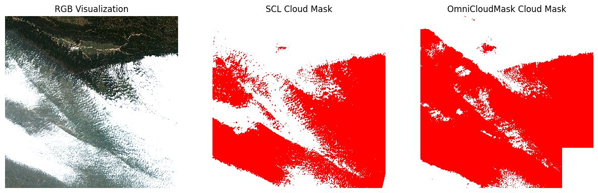
Save the Masked Scene
scl_mask_file = f'scene_scl_masked.tif'
ocm_mask_file = f'scene_ocm_masked.tif'
scl_mask_path = os.path.join(output_folder, scl_mask_file)
ocm_mask_path = os.path.join(output_folder, ocm_mask_file)
scene_masked_scl.to_array(dim='band').rio.to_raster(scl_mask_path, driver='COG')
scene_masked_ocm.to_array(dim='band').rio.to_raster(ocm_mask_path, driver='COG')Masking a Time-Series
Now, let’s see how we can predict the OmniCloudScore cloud mask for all the scenes in a time-series. This will require us to use Dask and process the required pixels in chunks.
Let’s query and get all the scenes for one year.
# Define a GeoJSON geometry
geometry = {
'type': 'Point',
'coordinates': [longitude, latitude]
}
# Query the STAC Catalog
catalog = pystac_client.Client.open(
'https://earth-search.aws.element84.com/v1')
configure_s3_access(
aws_unsigned=True,
)
search = catalog.search(
collections=['sentinel-2-c1-l2a'],
intersects=geometry,
datetime=f'{year}',
query={
'eo:cloud_cover': {'lt': 30},
's2:nodata_pixel_percentage': {'lt': 10}}
)
items = search.item_collection()
ds = load(
items,
bands=['red', 'green', 'blue', 'nir', 'scl'],
resolution=20, # Load the data at lower resolution to speed up processing
crs='utm',
chunks={'x': 1024, 'y': 1024}, # Explicitly define chunk sizes
groupby='solar_day',
preserve_original_order=True
)
# Mask nodata values
ds = ds.where(ds != 0)
# Apply scale/offset
scale = 0.0001
offset = -0.1
# Select spectral bands (all except 'scl')
data_bands = [band for band in ds.data_vars if band != 'scl']
for band in data_bands:
ds[band] = ds[band] * scale + offset
dsUnlike SCL, OmniCloudMask cannot be broadcast over time,
as it needs to run the model on each scene array. The model requires at
least a 50px x 50px of spatial context for prediction -
with the recommended array size being 1000px x 1000px. We
can chunk our input data cube and run the prediction on each chunk
independently. This will ensure that only the chunks intersecting our
area of interest gets processed and not the whole scene.
ocm_input = ds[['red', 'green', 'nir']] \
.to_array('band') \
.chunk({
'time': 1, # One time step per chunk
'band': -1 # All bands in a single chunk
})
def ocm_predict_block(block):
# block arrives as (band=3, time=1, y, x)
# drop the time dimension to get (band=3, y, x)
ocm_input = block[:, 0]
ocm_prediction = predict_from_array(ocm_input, inference_device=inference_device)
return ocm_prediction
# map_blocks runs the per-chunk prediction on the Data array
ocm_mask_data = ocm_input.data.map_blocks(
ocm_predict_block,
drop_axis=0, # band axis is consumed by the prediction
dtype=np.uint8,
)
# Reconstruct the DataArray with the same coordinates
# and dimensions as the original input
ocm_prediction_ts = xr.DataArray(
ocm_mask_data,
dims=('time', 'y', 'x'),
coords={'time': ocm_input.time,
'y': ocm_input.y,
'x': ocm_input.x,
'spatial_ref': ocm_input.spatial_ref
},
)Keep only the clear pixels form the predicted mask.
Apply the predicted mask.
Extract a Cloud-Masked NDVI Time Series
Following the course’s time-series workflow, we extract an NDVI time series at a point of interest from the masked stack.
Calculate NDVI and add it as a data variable.
red = ds_masked_ocm['red']
nir = ds_masked_ocm['nir']
ndvi = (nir - red)/(nir + red)
ds_masked_ocm['ndvi'] = ndvi
ds_masked_ocmOur location coordinates are in EPSG:4326 Lat/Lon. Convert it to the CRS of the dataset so we can query it.
crs = ds_masked_ocm.rio.crs
transformer = pyproj.Transformer.from_crs('EPSG:4326', crs, always_xy=True)
x, y = transformer.transform(longitude, latitude)
x,yQuery NDVI values at the coordinates.
# As we are proceesing the time-series,
# it needs to be in a single chunk along the time dimension
time_series = time_series.chunk(dict(time=-1))
time_seriesRun the calculation and load the results into memory.
Plot the time-series. The missing values are pixels where the OmniCloudMask predicted a cloud.
fig, ax = plt.subplots(1, 1)
fig.set_size_inches(15, 7)
time_series.plot.line(
ax=ax, x='time',
marker='o', color='#238b45',
linestyle='-', linewidth=1, markersize=4)
# Format the x-axis to display dates as YYYY-MM
ax.xaxis.set_major_formatter(mdates.DateFormatter('%Y-%m'))
ax.xaxis.set_major_locator(mdates.MonthLocator(interval=2))
ax.set_title('NDVI Time-Series')
plt.show()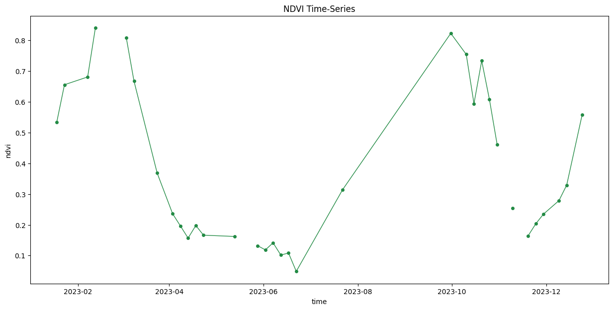
Close the dask client. This presents multiple clients being instantiated when running different notebooks on the same machine. This is not required on Colab but a good practice when you are running it on a local machine. Uncomment and run to shutdown the dask cluster.
Cloud Masking with Cloud Score+

This notebook shows how to use Google’s Cloud Score+ mask for Sentinel-2 images. We use XEE extension to fetch the mask from Google Earth Engine’s Cloud Score + Collection and apply it on a Sentinel-2 scene using Xarray. The notebook also shows how to scale this workflow for a large number of scenes and obtain a time-series of cloud-masked NDVI.
Setup
Determine our runtime environment.
import os
if 'COLAB_RELEASE_TAG' in os.environ:
environment = 'colab'
if os.environ.get('VERTEX_PRODUCT') == 'COLAB_ENTERPRISE':
environment = 'colab_enterprise'
else:
environment = 'local'
# Set to True to use Google Drive for data storage in Colab
use_google_drive = True
# Google Drive is available only in 'colab' environment
if environment == 'colab' and use_google_drive:
from google.colab import drive
drive.mount('/content/drive')
drive_folder_root = 'MyDrive'
drive_data_folder = 'python-remote-sensing'
drive_folder_path = os.path.join('/content/drive', drive_folder_root, drive_data_folder)
data_folder = drive_folder_path
output_folder = drive_folder_path
else:
data_folder = 'data'
output_folder = 'output'
if not os.path.exists(data_folder):
os.mkdir(data_folder)
if not os.path.exists(output_folder):
os.mkdir(output_folder)
print(f'Environment: {environment}')
print(f'Data folder: {data_folder}')
print(f'Output folder: {output_folder}')If we are on Google Colab, install the required packages. Local runtimes are expected to have the packages already installed.
%%capture
if environment in ['colab', 'colab_enterprise']:
!pip install pystac-client odc-stac rioxarray dask['distributed'] \
jupyter-server-proxy odc-algo botocore xeeImport all required libraries. Make sure to import everything at the
beginning as certain Xarray extensions are activated on import and
registers certain accesors, like .rio and .odc
for Xarray objects.
import dask
import matplotlib.dates as mdates
import matplotlib.pyplot as plt
import numpy as np
import os
import ee
from xee import helpers
import pandas as pd
import pyproj
import pystac_client
import rioxarray as rxr
import xarray as xr
from matplotlib.colors import ListedColormap
from odc.stac import configure_s3_access, loadInitialize EE with the High-Volume
EndPoint which is recommended to be used with XEE for workflows that
do not use a lot of server side processing and are primarily for
extracting data from stored collections. Replace the value of the
cloud_project variable with your own project id that is
linked with GEE.
cloud_project = 'spatialthoughts' # replace with your project id
try:
ee.Initialize(
project=cloud_project,
opt_url='https://earthengine-highvolume.googleapis.com')
except:
ee.Authenticate()
ee.Initialize(
project=cloud_project,
opt_url='https://earthengine-highvolume.googleapis.com')Setup a local Dask cluster. This distributes the computation across multiple workers on your computer.
If you are running this notebook in Colab, you will need to create and use a proxy URL to see the dashboard running on the local server.
if environment == 'colab':
from google.colab import output
port_to_expose = 8787 # This is the default port for Dask dashboard
print(output.eval_js(f'google.colab.kernel.proxyPort({port_to_expose})'))Each of our Dask workers need Earth Engine authentication. Initialize
Dask workers using ee.Initialize().
from dask.distributed import WorkerPlugin
class EEPlugin(WorkerPlugin):
def __init__(self):
pass
def setup(self, worker):
self.worker = worker
try:
ee.Initialize(
project=cloud_project,
opt_url='https://earthengine-highvolume.googleapis.com')
except:
ee.Authenticate()
ee.Initialize(
project=cloud_project,
opt_url='https://earthengine-highvolume.googleapis.com')
ee_plugin = EEPlugin()
client.register_plugin(ee_plugin)Masking a Single Scene
If a scene fits into memory, this approach is the most straightforward one. Let’s learn this approach first and then we will see how we can scale this to a time-series.
We define a location and time of interest to get some satellite imagery.
Get a single cloudy scene.
# Define a GeoJSON geometry
geometry = {
'type': 'Point',
'coordinates': [longitude, latitude]
}
# Query the STAC Catalog
catalog = pystac_client.Client.open(
'https://earth-search.aws.element84.com/v1')
configure_s3_access(
aws_unsigned=True,
)
search = catalog.search(
collections=['sentinel-2-c1-l2a'],
intersects=geometry,
datetime=f'{year}',
query={
'eo:cloud_cover': {'lt': 50},
's2:nodata_pixel_percentage': {'lt': 10}},
sortby=[
{'field': 'properties.eo:cloud_cover',
'direction': 'desc'}
]
)
items = search.item_collection()
# Items were sorted in descending order of cloud cover,
# so the first item is the most cloudy
most_cloudy = items[0]
ds = load(
[most_cloudy],
bands=['red', 'green', 'blue', 'nir', 'scl'],
resolution=20, # Load the data at lower resolution to speed up processing
crs='utm',
chunks={'x': 1024, 'y': 1024}, # Explicitly define chunk sizes
groupby='solar_day',
preserve_original_order=True
)
scene = ds.squeeze()
# Mask nodata values
scene = scene.where(scene != 0)
# Apply scale/offset
scale = 0.0001
offset = -0.1
# Select spectral bands (all except 'scl')
data_bands = [band for band in scene.data_vars if band != 'scl']
for band in data_bands:
scene[band] = scene[band] * scale + offset
sceneLet’s call compute() to kick-off the dask graph. Dask
will query the cloud-hosted dataset to fetch the required pixels. Once
you run the cell, look at the Dask Diagnostic Dashboard to see the data
processing in action.
Apply Cloud Score+ Mask
Cloud Score+ masks are produced by Google for every Sentinel-2 scene and are available as a ready-to-use dataset Cloud Score+ S2_HARMONIZED V1. We find the equivalent Earth Engine id for our scene and find the matching cloud score+ mask scene.
gee_product_id = most_cloudy.properties['s2:product_uri'].removesuffix('.SAFE')
gee_s2_scene = ee.ImageCollection('COPERNICUS/S2_SR_HARMONIZED') \
.filter(ee.Filter.eq('PRODUCT_ID', gee_product_id)) \
.first()
gee_s2_id = gee_s2_scene.get('system:index').getInfo()
cs_plus_scene = ee.ImageCollection('GOOGLE/CLOUD_SCORE_PLUS/V1/S2_HARMONIZED') \
.filter(ee.Filter.eq('system:index', gee_s2_id))We now read the filtered collecting using XEE. XEE requires explicit grid parameters. We extract these from scene metadata.
grid_params = dict(
crs=str(scene.rio.crs),
crs_transform=tuple(scene.rio.transform())[:6],
shape_2d=(scene.rio.width, scene.rio.height),
)
ds = xr.open_dataset(
cs_plus_scene,
engine='ee',
**grid_params
)
dsCloud Score+ comes with a cs band where each pixel is
graded on continuous scale between 0 and 1.
0= not clear (occluded)1= clear (unoccluded)
Select the cs band and fetch the pixels.
Apply the threshold to create a cloud mask. Values between 0.50 and 0.65 generally work well. Lower values will keep more cloudy pixels in the image and higher values will remove thin clouds, haze & cirrus shadows.
Apply the mask on our scene.
Visualize the Results
Let’s visualize and compare both the masks.
scene_preview = scene[['red', 'green', 'blue']].to_array('band')\
.rio.reproject(
scene.rio.crs, resolution=100
)
cs_mask_preview = cs_mask.astype('uint8').rio.reproject(
cs_mask.rio.crs, resolution=100
)
fig, (ax0, ax1) = plt.subplots(1, 2)
fig.set_size_inches(10,5)
scene_preview.sel(band=['red', 'green', 'blue']).plot.imshow(
ax=ax0,
vmin=0, vmax=0.3)
ax0.set_title('RGB Visualization')
# RGBA: Transparent, Red
mask_colormap = ListedColormap(['#00000000', '#FF0000FF'])
cs_mask_preview.plot.imshow(
ax=ax1,
cmap=mask_colormap,
add_colorbar=False)
ax1.set_title('Cloud Score+ Mask')
for ax in (ax0, ax1):
ax.set_axis_off()
ax.set_aspect('equal')
plt.show()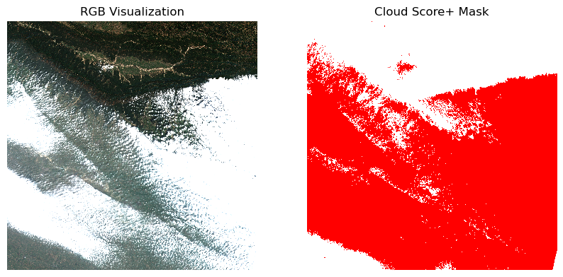
Masking a Time-Series
If you’d like to apply the Cloud Score+ mask, it is most efficient to do the masking in GEE itself and open the resuling masked dataset using XEE. We use the Google Earth Engine Python API to load the Sentinel-2 Level-2A collection, apply filters to select the scenes, and apply the Cloud Score+ mask.
s2 = ee.ImageCollection('COPERNICUS/S2_SR_HARMONIZED')
startDate = ee.Date.fromYMD(year, 1, 1)
endDate = ee.Date.fromYMD(year+1, 1, 1)
filtered = s2 \
.filter(ee.Filter.date(startDate, endDate)) \
.filter(ee.Filter.lt('CLOUDY_PIXEL_PERCENTAGE', 30)) \
.filter(ee.Filter.lt('NODATA_PIXEL_PERCENTAGE', 10)) \
.filter(ee.Filter.bounds(geometry))
# Load the Cloud Score+ collection
csPlus = ee.ImageCollection('GOOGLE/CLOUD_SCORE_PLUS/V1/S2_HARMONIZED')
csPlusBands = csPlus.first().bandNames()
# We need to add Cloud Score + bands to each Sentinel-2
# image in the collection
# This is done using the linkCollection() function
filteredS2WithCs = filtered.linkCollection(csPlus, csPlusBands)
# Function to mask pixels with low CS+ QA scores.
def maskLowQA(image):
qaBand = 'cs'
clearThreshold = 0.5
mask = image.select(qaBand).gte(clearThreshold)
return image.updateMask(mask)
filteredMasked = filteredS2WithCs \
.map(maskLowQA)
# Write a function that computes NDVI for an image and adds it as a band
def addNDVI(image):
ndvi = image.normalizedDifference(['B8', 'B4']).rename('ndvi')
return image.addBands(ndvi)
# Map the function over the collection
ndviCol = filteredMasked.map(addNDVI).select(['ndvi'])Extract a Cloud-Masked NDVI Time Series
Following the course’s time-series workflow, we extract an NDVI time series at a point of interest from the masked stack.
Our location coordinates are in EPSG:4326 Lat/Lon. Convert it to the CRS of the dataset so we can query it.
crs = ds_masked_csplus.rio.crs
transformer = pyproj.Transformer.from_crs('EPSG:4326', crs, always_xy=True)
x, y = transformer.transform(longitude, latitude)
x,yQuery NDVI values at the coordinates.
# As we are proceesing the time-series,
# it needs to be in a single chunk along the time dimension
time_series = time_series.chunk(dict(time=-1))
time_seriesRun the calculation and load the results into memory.
Plot the time-series. The missing values are pixels where the OmniCloudMask predicted a cloud.
fig, ax = plt.subplots(1, 1)
fig.set_size_inches(15, 7)
time_series.plot.line(
ax=ax, x='time',
marker='o', color='#238b45',
linestyle='-', linewidth=1, markersize=4)
# Format the x-axis to display dates as YYYY-MM
ax.xaxis.set_major_formatter(mdates.DateFormatter('%Y-%m'))
ax.xaxis.set_major_locator(mdates.MonthLocator(interval=2))
ax.set_title('NDVI Time-Series (Cloud Score+ Masked)', fontsize=16)
plt.show()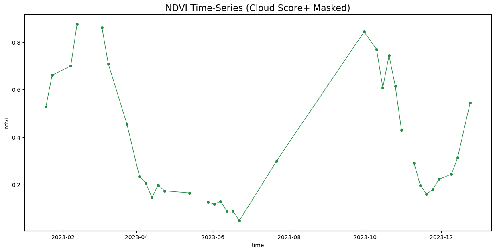
Close the dask client. This presents multiple clients being instantiated when running different notebooks on the same machine. This is not required on Colab but a good practice when you are running it on a local machine. Uncomment and run to shutdown the dask cluster.
Working with GLC-FCS30 LandCover Data

The Global Land Cover by Fine Classification System at 30m (GLC_FCS30D) is a dynamic land cover product produced by the Chinese Academy of Sciences. It provides a high-resolution landcover time-series derived from the Landsat archive (1984-2022) at 30m resolution with 35 classes.
This notebook shows how to access, visualize and reclassify GLC_FCS30D land cover data for a region of interest using cloud-optimized GeoTIFF data hosted on OpenLandMap.
Setup
Determine our runtime environment.
import os
if 'COLAB_RELEASE_TAG' in os.environ:
environment = 'colab'
if os.environ.get('VERTEX_PRODUCT') == 'COLAB_ENTERPRISE':
environment = 'colab_enterprise'
else:
environment = 'local'
# Set to True to use Google Drive for data storage in Colab
use_google_drive = False
# Google Drive is available only in 'colab' environment
if environment == 'colab' and use_google_drive:
from google.colab import drive
drive.mount('/content/drive')
drive_folder_root = 'MyDrive'
drive_data_folder = 'python-remote-sensing'
drive_folder_path = os.path.join('/content/drive', drive_folder_root, drive_data_folder)
data_folder = drive_folder_path
output_folder = drive_folder_path
else:
data_folder = 'data'
output_folder = 'output'
if not os.path.exists(data_folder):
os.mkdir(data_folder)
if not os.path.exists(output_folder):
os.mkdir(output_folder)
print(f'Environment: {environment}')
print(f'Data folder: {data_folder}')
print(f'Output folder: {output_folder}')If we are on Google Colab, install the required packages. Local runtimes are expected to have the packages already installed.
%%capture
if environment in ['colab', 'colab_enterprise']:
!pip install rioxarray dask[distributed] odc-stac \
jupyter-server-proxyImport all required libraries.
import geopandas as gpd
import matplotlib
import matplotlib.pyplot as plt
import numpy as np
import os
import pyproj
import rioxarray as rxr
from matplotlib import cm
from odc import stacSetup a local Dask cluster. This distributes the computation across multiple workers on your computer.
If you are running this notebook in Colab, you will need to create and use a proxy URL to see the dashboard running on the local server.
Load Area of Interest
Read the file containing the city boundary.
aoi_filepath = os.path.join(data_folder, 'aoi.geojson')
if not os.path.exists(aoi_filepath):
print(f'AOI file not found at {aoi_filepath}. Using default AOI.')
aoi_filepath = ('https://storage.googleapis.com/spatialthoughts-public-data'
'/python-remote-sensing/aoi.geojson')Read the GeoJSON.
Extract the geometry.
Load GLC-FCS30 Data
data_url = (
'https://s3.openlandmap.org/arco/'
'lc_glc.fcs30d_c_30m_s_20210101_20211231_go_epsg.4326_v20231026.tif')
glc_fcs_ds = rxr.open_rasterio(
data_url,
chunks={'x': 1024, 'y': 1024}, # Explicitly define chunk sizes
)
glc_fcs_dsThis is a global raster at 30m resolution available as a single COG. We can clip and reproject the data to get the subset for our region of interest.
bbox = aoi_gdf.geometry.total_bounds
glc_fcs_ds = glc_fcs_ds.rio.clip_box(*bbox)
glc_fcs_ds = glc_fcs_ds.odc.reproject('utm')
glc_fcs_dsClip the data to geometry. Before we clip, we need to reproject the
aoi_gdf to the same CRS as the data.
Visualize the Data
To create a meaningful legend, we create a dictionary of class names and colors for the landcover classes.
glc_fcs_class_dict = {
10: {'description': 'Rainfed cropland', 'hex': 'ffff64'},
11: {'description': 'Herbaceous cover cropland', 'hex': 'ffff64'},
12: {'description': 'Tree/shrub cover (Orchard) cropland', 'hex': 'ffff00'},
20: {'description': 'Irrigated cropland', 'hex': 'aaf0f0'},
51: {'description': 'Open evergreen broadleaved forest', 'hex': '4c7300'},
52: {'description': 'Closed evergreen broadleaved forest', 'hex': '006400'},
61: {'description': 'Open deciduous broadleaved forest', 'hex': 'aac800'},
62: {'description': 'Closed deciduous broadleaved forest', 'hex': '00a000'},
71: {'description': 'Open evergreen needle-leaved forest', 'hex': '005000'},
72: {'description': 'Closed evergreen needle-leaved forest', 'hex': '003c00'},
81: {'description': 'Open deciduous needle-leaved forest', 'hex': '286400'},
82: {'description': 'Closed deciduous needle-leaved forest', 'hex': '285000'},
91: {'description': 'Open mixed leaf forest', 'hex': 'a0b432'},
92: {'description': 'Closed mixed leaf forest', 'hex': '788200'},
120: {'description': 'Shrubland', 'hex': '966400'},
121: {'description': 'Evergreen shrubland', 'hex': '964b00'},
122: {'description': 'Deciduous shrubland', 'hex': '966400'},
130: {'description': 'Grassland', 'hex': 'ffb432'},
140: {'description': 'Lichens and mosses', 'hex': 'ffdcd2'},
150: {'description': 'Sparse vegetation', 'hex': 'ffebaf'},
152: {'description': 'Sparse shrubland', 'hex': 'ffd278'},
153: {'description': 'Sparse herbaceous', 'hex': 'ffebaf'},
181: {'description': 'Swamp', 'hex': '00a884'},
182: {'description': 'Marsh', 'hex': '73ffdf'},
183: {'description': 'Flooded flat', 'hex': '9ebbd7'},
184: {'description': 'Saline', 'hex': '828282'},
185: {'description': 'Mangrove', 'hex': 'f57ab6'},
186: {'description': 'Salt marsh', 'hex': '66cdab'},
187: {'description': 'Tidal flat', 'hex': '444f89'},
190: {'description': 'Impervious surfaces', 'hex': 'c31400'},
200: {'description': 'Bare areas', 'hex': 'fff5d7'},
201: {'description': 'Consolidated bare areas', 'hex': 'dcdcdc'},
202: {'description': 'Unconsolidated bare areas', 'hex': 'fff5d7'},
210: {'description': 'Water body', 'hex': '0046c8'},
220: {'description': 'Permanent ice and snow', 'hex': 'ffffff'},
}Create a preview and plot.
import matplotlib.patches as mpatches
# Create a preview
glc_fcs_da_preview = glc_fcs_da_clipped.rio.reproject(
glc_fcs_da_clipped.rio.crs, resolution=100
)
colors_map = ['#000000'] * 256
for key, value in glc_fcs_class_dict.items():
colors_map[key] = f'#{value["hex"]}'
colors_map[0] = (0, 0, 0, 0) # transparent for nodata
glc_cmap = matplotlib.colors.ListedColormap(colors_map)
normalizer = matplotlib.colors.Normalize(vmin=0, vmax=255)
fig, ax = plt.subplots(1, 1)
fig.set_size_inches(10, 10) # Increased width to accommodate 2-column legend
glc_fcs_da_preview.plot(ax=ax, cmap=glc_cmap,
norm=normalizer, add_colorbar=False)
# # Create custom legend handles
legend_handles = []
for class_id in sorted(glc_fcs_class_dict.keys()): # Ensure consistent order
class_info = glc_fcs_class_dict[class_id]
hex_color = f'#{class_info["hex"]}'
description = class_info["description"]
handle = mpatches.Patch(color=hex_color, label=f'{description} ({class_id})')
legend_handles.append(handle)
# Add the legend with 2 columns
ax.legend(handles=legend_handles,
loc='center left',
bbox_to_anchor=(1.05, 0.5),
ncol=1,
fontsize='small',
)
ax.set_axis_off()
ax.set_aspect('equal')
ax.set_title('Landcover Classes from GLC_FCS30D')
fig.tight_layout() # Adjust layout to prevent labels from being cut off
plt.show()
Calculating Zonal Stats for Landcover Area

Overview
This notebook shows how to perform scalable calculation of landcover
area using Zonal Statistics. We implement a Zonal Histogram operation
using xvec.zonal_stats()
function with the frac, unique and
count statistics to get the pixel counts of each class
within each polygon. Multiplied by the pixel count and pixel area, this
gives the absolute area per class per polygon. This method does lazy
dask-computation and scales to large regions.
Setup
Determine our runtime environment.
import os
if 'COLAB_RELEASE_TAG' in os.environ:
environment = 'colab'
if os.environ.get('VERTEX_PRODUCT') == 'COLAB_ENTERPRISE':
environment = 'colab_enterprise'
else:
environment = 'local'
# Set to True to use Google Drive for data storage in Colab
use_google_drive = True
# Google Drive is available only in 'colab' environment
if environment == 'colab' and use_google_drive:
from google.colab import drive
drive.mount('/content/drive')
drive_folder_root = 'MyDrive'
drive_data_folder = 'python-remote-sensing'
drive_folder_path = os.path.join('/content/drive', drive_folder_root, drive_data_folder)
data_folder = drive_folder_path
output_folder = drive_folder_path
else:
data_folder = 'data'
output_folder = 'output'
if not os.path.exists(data_folder):
os.mkdir(data_folder)
if not os.path.exists(output_folder):
os.mkdir(output_folder)
print(f'Environment: {environment}')
print(f'Data folder: {data_folder}')
print(f'Output folder: {output_folder}')If we are on Google Colab, install the required packages. Local runtimes are expected to have the packages already installed.
%%capture
if environment in ['colab', 'colab_enterprise']:
!pip install pystac-client odc-stac rioxarray dask[distributed] \
jupyter-server-proxy planetary_computer xvec exactextractImport all required libraries. Make sure to import everything at the
beginning as certain Xarray extensions are activated on import and
registers certain accessors, like .rio and
.odc for Xarray objects.
import exactextract
import geopandas as gpd
import odc.geo.xr
import os
import pandas as pd
import planetary_computer as pc
import pystac_client
import rioxarray as rxr
import xarray as xr
import xvec
from dask.distributed import Client
from odc import stac
from odc.geo.geobox import GeoBoxSetup a local Dask cluster. This distributes the computation across multiple workers on your computer.
If you are running this notebook in Colab, you will need to create and use a proxy URL to see the dashboard running on the local server.
Load Admin2 Polygons
Read the file containing the Admin2 boundaries exported in Module 1.
admin2_filepath = os.path.join(data_folder, 'admin2.gpkg')
if not os.path.exists(admin2_filepath):
print(f'Admin2 file not found at {admin2_filepath}. Using default Admin2 regions.')
admin2_filepath = (
'https://storage.googleapis.com/spatialthoughts-public-data'
'/python-remote-sensing/admin2.gpkg'
)Read the Admin2 GeoPackage.
Extract the geometry.
Get ESA WorldCover Data
Search the Planetary Computer STAC API for ESA WorldCover 2021 tiles that intersect the Admin2 region.
catalog = pystac_client.Client.open(
'https://planetarycomputer.microsoft.com/api/stac/v1')
search = catalog.search(
collections=['esa-worldcover'],
intersects=admin2_gdf.geometry.union_all(),
datetime='2021',
)
items = search.item_collection()
itemsEach STAC item carries the class names, legend colors, and pixel values in its metadata. Extract them now so we can label the results later.
class_list = items[0].assets['map'].extra_fields['classification:classes']
class_dict = {
c['value']: {'description': c['description'], 'hex': c['color_hint']}
for c in class_list
}
class_dictLoad the matching images as a XArray Dataset. Accessing data from Planetary Computer is free but requires getting a Shared Access Signature (SAS) token and sign the URLs. The planetary_computer Python package provides a simple mechanism for signing the URLs using sign() function.
# Load to XArray
ds = stac.load(
items,
bbox=geometry.bounds, # <-- load data only for the bbox
resolution=10,
crs='utm',
chunks={'x': 1024, 'y': 1024}, # Explicitly define chunk sizes
patch_url=pc.sign,
groupby='solar_day',
preserve_original_order=True
)
dsThe landcover classification data is in the map variable. Select it and remove the empty time dimension.
Calculate Per-Polygon Landcover Area
Reproject the Admin2 polygons to match the CRS of the raster.
xvec.zonal_stats() requires both to share the same CRS.
Compute zonal statistics using xvec.zonal_stats()
with the exactextract backend.
frac— the weighted fraction of each polygon’s area covered by each unique class value.unique- unique class values in the same order asfrac.count— total weighted pixel count within the polygon.
This call triggers Dask computation.
%%time
aggregated = map_data.xvec.zonal_stats(
admin2_reproj.geometry,
x_coords='x',
y_coords='y',
stats=['frac', 'unique', 'count'],
method='exactextract'
)
aggregatedAdd the adm2_name attribute as a coordinate so it is
carried through to the GeoDataFrame.
aggregated['adm2_name'] = ('geometry', admin2_reprojected['adm2_name'].values)
aggregated = aggregated.assign_coords({'adm2_name': aggregated['adm2_name']})
aggregatedConvert to a GeoDataFrame and expand the frac dict
column into one row per polygon per class. The frac values
for each polygon sum to 1.0, so
frac[c] × count × pixel_area_m2 gives the area in m² for
class c.
pixel_area_m2 = 100.0 # 10 m × 10 m
pivoted = (
aggregated_df.pivot(index=['geometry', 'adm2_name'],
columns='zonal_statistics',
values='values')
.rename_axis(None, axis=1)
.reset_index()
)
exploded = pivoted.explode(['frac', 'unique'])
exploded['class_value'] = exploded['unique'].astype(int)
exploded = exploded[exploded['class_value'].isin(class_dict)].copy()
exploded['class_name'] = exploded['class_value'].map(
{k: v['description'] for k, v in class_dict.items()})
exploded['area_km2'] = (
exploded['frac'].astype(float) * exploded['count'].astype(float)
* pixel_area_m2 / 1e6
)
all_class_names = [v['description'] for v in class_dict.values()]
# Convert to a wide table with one column per class, filling missing values with 0
wide = (
exploded.pivot_table(index=['adm2_name', 'geometry'],
columns='class_name',
values='area_km2', aggfunc='sum')
.rename_axis(None, axis=1)
.reindex(columns=all_class_names, fill_value=0)
.reset_index()
)
result_gdf = gpd.GeoDataFrame(wide, crs=admin2_reproj.crs)
result_gdfSave the results as a GeoPackage file.
output_path = os.path.join(output_folder, 'admin2_landcover_area.gpkg')
result_gdf.to_file(output_path, driver='GPKG')Learning Resources
Here are curated learning materials to that cover additional topics and datasets.
Courses and Workshops
- Cloud Native Geospatial for Earth Observation Workshop: A workshop by Alex Leith and Caitlin Adams introducing cloud native methods of working with Earth observation data products.
Tutorials
- Geospatial Python Tutorials: A large collection of step-by-step tutorials by Spatial Thoughts covering XArray, STAC, Dask, XEE and more.
- EOPF Xarray Notebooks: Case studies and applications of EOPF Sentinel Zarr products - including flood mapping, vegetation monitoring, fire mapping and more.
- Copernicus Data Space Ecosystem Notebooks: Notebooks showing how to use access the data from the CDSE STAC Catalog having data from all Sentinel missions as well as landcover data.
- Earth Data Hub Tutorials: Jupyter notebooks showing how to access and process climate and Earth observation Zarr data (ERA5, Sentinel-1 ARD, CMIP6, Copernicus DEM) via Python and Xarray.
- Building an EVI Timeseries with ODC STAC: A tutorial showing how to access Harmonized Landsat Sentinel-2 (HLS) data from NASA CMR-STAC and earthaccess.
- Project Pythia Cookbooks: A community learning resource for Python-based computing in the geosciences. Includes examples of remote sensing data such as Landsat ML Cookbook.
- Exploring HLS data: Loading and processing Harmonized Landsat and Sentinel-2 data with advanced cloud-masking using morphological operations.
Guides and References
- Cloud-Optimized Geospatial Formats Guide: Methods for Generating and Testing Cloud-Optimized Geospatial Formats
Data Credits
- Sentinel-2 Level 2A Scenes: Contains modified Copernicus Sentinel data (2025-02)
- Landsat imagery courtesy of the U.S. Geological Survey.
- Bangalore Ward Maps Provided by Spatial Data of Municipalities (Maps) Project by Data{Meet}.
- Admin boundaries: FieldMaps, geoBoundaries, U.S. Department of State, OpenStreetMap
- Populated Places: Made with Natural Earth. Free vector and raster map data @ naturalearthdata.com.
- Overture Maps Foundation Open Map Data. © Overture Maps Foundation. https://overturemaps.org
- TerraClimate: Monthly Climate and Climatic Water Balance for Global Terrestrial Surfaces, University of Idaho: Abatzoglou, J.T., S.Z. Dobrowski, S.A. Parks, K.C. Hegewisch, 2018, Terraclimate, a high-resolution global dataset of monthly climate and climatic water balance from 1958-2015, Scientific Data 5:170191, doi:10.1038/sdata.2017.191
- Climate Hazards Center (2025). Climate Hazards Center Infrared Precipitation with Stations (CHIRPS) Data Repository. https://doi.org/10.15780/G2JQ0P. Accessed 2026-05-01.
- Schiavina, M., Freire, S., Carioli, A., MacManus, K. (2023). GHS-POP R2023A - GHS population grid multitemporal (1975-2030). European Commission, Joint Research Centre (JRC). doi:10.2905/2FF68A52-5B5B-4A22-8F40-C41DA8332CFE
- Elvidge, C.D., Zhizhin, M., Ghosh, T., Hsu, F.C., Taneja, J. (2021). Annual time series of global VIIRS nighttime lights derived from monthly averages: 2012 to 2019. Remote Sensing, 13(5), 922. https://doi.org/10.3390/rs13050922
- Takaku, J., Tadono, T., Tsutsui, K. (2014). Generation of High Resolution Global DSM from ALOS PRISM. The International Archives of the Photogrammetry, Remote Sensing and Spatial Information Sciences, Vol. XL-4, pp. 243–248.
- Zhu, X. X., Chen, S., Zhang, F., Shi, Y., and Wang, Y.: GlobalBuildingAtlas: an open global and complete dataset of building polygons, heights and LoD1 3D models, Earth Syst. Sci. Data, 17, 6647–6668, https://doi.org/10.5194/essd-17-6647-2025, 2025.
- Potapov P, Hansen MC, Pickens A, Hernandez-Serna A, Tyukavina A, Turubanova S, Zalles V, Li X, Khan A, Stolle F, Harris N, Song X-P, Baggett A, Kommareddy I and Kommareddy A (2022) The Global 2000-2020 Land Cover and Land Use Change Dataset Derived From the Landsat Archive: First Results. Front. Remote Sens. 3:856903. doi: 10.3389/frsen.2022.856903
- Karra, Kontgis, et al. “Global land use/land cover with Sentinel-2 and deep learning.” IGARSS 2021-2021 IEEE International Geoscience and Remote Sensing Symposium. IEEE, 2021.
- Zanaga, D., Van De Kerchove, R., De Keersmaecker, W., Souverijns, N., Brockmann, C., Quast, R., Wevers, J., Grosu, A., Paccini, A., Vergnaud, S., Cartus, O., Santoro, M., Fritz, S., Georgieva, I., Lesiv, M., Carter, S., Herold, M., Li, L., Tsendbazar, N.E., Ramoino, F., Arino, O. (2022). ESA WorldCover 10 m 2021 v200. https://doi.org/10.5281/zenodo.7254221
- Zhang, X., Zhao, T., Xu, H., Liu, W., Wang, J., Chen, X., and Liu, L. (2024). GLC_FCS30D: the first global 30 m land-cover dynamics monitoring product with a fine classification system for the period from 1985 to 2022. Earth Syst. Sci. Data, 16, 1353–1381. https://doi.org/10.5194/essd-16-1353-2024
- Brown, C. F., Kazmierski, M. R., Pasquarella, V. J., et al. (2025). AlphaEarth Foundations: An embedding field model for accurate and efficient global mapping from sparse label data. arXiv:2507.22291.
- Earth Genome. Sentinel-2 Cloud Free Temporal Mosaics. https://earthgenome.org
References
- Cordeiro, M. C. R.; Martinez, J.-M.; Peña-Luque, S. Automatic Water Detection from Multidimensional Hierarchical Clustering for Sentinel-2 Images and a Comparison with Level 2A Processors. Remote Sensing of Environment 2021, 253, 112209.
- Chen, J., Jönsson, P., Tamura, M., Gu, Z., Matsushita, B., & Eklundh, L. (2004). A simple method for reconstructing a high-quality NDVI time-series data set based on the Savitzky–Golay filter. Remote Sensing of Environment, 91(3–4), 332–344. https://doi.org/10.1016/j.rse.2004.03.014
License
This course material is licensed under a Creative Commons Attribution 4.0 International (CC BY 4.0). You are free to re-use and adapt the material but are required to give appropriate credit to the original author as below:
Cloud Native Remote Sensing with Python course by Ujaval Gandhi www.spatialthoughts.com
© 2025 Spatial Thoughts www.spatialthoughts.com
If you want to report any issues with this page, please comment below.